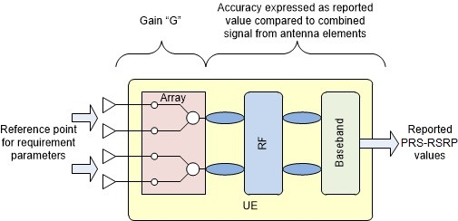

Annex
B (normative):
Conditions for RRM requirements applicability for operating bands
In Annex B.1, the following conditions are specified:
- UE conditions which shall apply for UE intra-frequency measurements procedures and requirements in clause 4,
- UE conditions which shall apply for UE inter-frequency measurements procedures and requirements in clause 4.
This clause defines the following conditions for NR intra-frequency measurements performed based on SSBs for cell re-selection: SSB_RP and SSB Ês/Iot, applicable for a corresponding operating band.
The conditions are defined in Table B.1.2-1 for FR1 NR cells.
The conditions are defined in Table B.1.2-2 for FR2 NR cells.
Table B.1.2-1: Conditions for intra-frequency cell re-selection in FR1
| Parameter | NR operating band groups Note1 | Minimum SSB_RP | SSB Ês/Iot | |
|---|---|---|---|---|
| dBm / SCSSSB | dB | |||
| SCSSSB = 15 kHz | SCSSSB = 30 kHz | |||
| Conditions | NR_FDD_FR1_A, NR_TDD_FR1_A | -124 | -121 | ≥ -4 |
| NR_FDD_FR1_B | -123.5 | -120.5 | ||
| NR_TDD_FR1_C | -123 | -120 | ||
| NR_FDD_FR1_D, NR_TDD_FR1_D | -122.5 | -119.5 | ||
| NR_FDD_FR1_E, NR_TDD_FR1_E | -122 | -119 | ||
| NR_FDD_FR1_F | -121.5 | -118.5 | ||
| NR_FDD_FR1_G, NR_TDD_FR1_G | -121 | -118 | ||
| NR_FDD_FR1_H | -120.5 | -117.5 | ||
| NOTE 1: NR operating band groups are defined in clause 3.5.2. | ||||
Table B.1.2-2: Conditions for intra-frequency cell re-selection in FR2
| Parameter | Angle of arrival | NR operating bands | Minimum SSB_RP Note 2, Note 3 | SSB Ês/Iot | |||||
|---|---|---|---|---|---|---|---|---|---|
| dBm / SCSSSB | dB | ||||||||
| SCSSSB = 120 kHz | SCSSSB = 240 kHz | ||||||||
| UE Power class | UE Power class | ||||||||
| 1 | 2 | 3 | 4 | 5 | 1, 2, 3, 4, 5 | ||||
| Conditions | Rx Beam Peak | n257 | -125.3+Y1 | -110.8 | -109.1 | -124.8+Y4 | -120.4+Y5 | (Value for SCSSSB = 120 kHz) +3dB | ≥-4 |
| n258 | -125.3+Y1 | -110.8 | -109.1 | -124.8+Y4 | -120.6+Y5 | ||||
| n259 | -105.5 | -117.5+Y5 | |||||||
| n260 | -122.3+Y1 | -106.5 | -122.8+Y4 | ||||||
| n261 | -125.3+Y1 | -110.8 | -109.1 | -124.8+Y4 | |||||
| n262 | -120.3+Y1 | -105.6 | -103.6 | -118.8+Y4 | |||||
| Spherical coverage Note 1 | n257 | -117.3+Z1 | -99.8 | -98.2 | -115.8+Z4 | -112.4+Z5 | (Value for SCSSSB = 120 kHz) +3dB | ≥-4 | |
| n259 | -92.7 | ||||||||
| n258 | -117.3+Z1 | -99.8 | -98.2 | -115.8+Z4 | -112.6+Z5 | ||||
| n260 | -114.3+Z1 | -93.9 | -110.8+Z4 | ||||||
| n261 | -117.3+Z1 | -99.8 | -98.2 | -115.8+Z4 | |||||
| n262 | -112.1+Z1 | -93.7 | -90.5 | -106.7+Z4 | |||||
NOTE 1: Values based on EIS spherical coverage as defined in clause 7.3.4 of TS 38.101-2 [19]. Side condition applies for directions in which EIS spherical coverage requirement is met. NOTE 2: Values specified at the Reference point to give minimum SSB Ês/Iot, with no applied noise. NOTE 3: For UEs that support multiple FR2 bands, Rx Beam Peak values are increased by ∆MBP,n and Spherical coverage values are increased by ∆MBS,n, the UE multi-band relaxation factor in dB specified in clause 6.2.1 of TS 38.101-2 [19]. |
|||||||||
Editor’s notes for Table B.1.2-2:
- The value of Y for Power classes 1, 4 and 5 is FFS, where Y1, Y4 and Y5 are the rough/fine beam gain differences in Rx beam peak direction for Power classes 1, 4 and 5 respectively
- The value of Z for Power classes 1, 4 and 5 is FFS, where Z1, Z4 and Z5 are the rough/fine beam gain differences in spherical coverage directions for Power classes 1, 4 and 5 respectively
This clause defines the following conditions for NR inter-frequency measurements performed based on SSBs for cell re-selection: SSB_RP and SSB Ês/Iot, applicable for a corresponding operating band.
The conditions defined in Table B.1.2-1 for FR1 NR intra-frequency cell re-selection shall also apply for FR1 NR inter-frequency cells in this clause.
The conditions defined in Table B.1.2-2 for FR2 NR intra-frequency cell re-selection shall also apply for FR2 NR inter-frequency cells in this clause.
This clause defines the following conditions for RedCap NR intra-frequency measurements performed based on SSBs for cell re-selection: SSB_RP and SSB Ês/Iot, applicable for a corresponding operating band.
The conditions are defined in Table B.1.x1-1 and Table B.1.x1-2 for 1 Rx and 2 Rx RedCap respectively for FR1 NR cells.
The conditions are defined in Table B.1.x1-3 for FR2 NR cells.
Table B.1.4-1: Conditions for intra-frequency cell re-selection in FR1 for RedCap for 2Rx
| Parameter | NR operating band groups Note1 | Minimum SSB_RP | SSB Ês/Iot | |
|---|---|---|---|---|
| dBm / SCSSSB | dB | |||
| SCSSSB = 15 kHz | SCSSSB = 30 kHz | |||
| Conditions | NR_FDD_RC_FR1_A, NR_TDD_RC_FR1_A | -124 | -121 | ≥ -4 |
| NR_FDD_RC_FR1_B | -123.5 | -120.5 | ||
NR_FDD_ RC_FR1_C NR_TDD_RC_FR1_C |
-123 | -120 | ||
| NR_FDD_RC_FR1_D, NR_TDD_RC_FR1_D | -122.5 | -119.5 | ||
| NR_FDD_RC_FR1_E, NR_TDD_RC_FR1_E | -122 | -119 | ||
| NR_FDD_RC_FR1_F | -121.5 | -118.5 | ||
| NR_FDD_RC_FR1_G | -121 | -118 | ||
| NR_FDD_RC_FR1_H | -120.5 | -117.5 | ||
| NOTE 1: NR operating band groups are defined in clause 3.5.2. | ||||
Table B.1.4-2: Conditions for intra-frequency cell re-selection in FR1 for RedCap for 1Rx
| Parameter | NR operating band groups Note1 | Minimum SSB_RP | SSB Ês/Iot | |
|---|---|---|---|---|
| dBm / SCSSSB | dB | |||
| SCSSSB = 15 kHz | SCSSSB = 30 kHz | |||
| Conditions | NR_FDD_RC_FR1_A, NR_TDD_RC_FR1_A | TBD | TBD | ≥ -4 |
| NR_FDD_RC_FR1_B | TBD | TBD | ||
NR_FDD_ RC_FR1_C NR_TDD_RC_FR1_C |
TBD | TBD | ||
| NR_FDD_RC_FR1_D, NR_TDD_RC_FR1_D | TBD | TBD | ||
| NR_FDD_RC_FR1_E, NR_TDD_RC_FR1_E | TBD | TBD | ||
| NR_FDD_RC_FR1_F | TBD | TBD | ||
| NR_FDD_RC_FR1_G | TBD | TBD | ||
| NR_FDD_RC_FR1_H | TBD | TBD | ||
| NOTE 1: NR operating band groups are defined in clause 3.5.2. | ||||
Table B.1.4-3: Conditions for intra-frequency cell re-selection in FR2 for RedCap
| Parameter | Angle of arrival | NR operating bands | Minimum SSB_RP Note 2, Note 3 | SSB Ês/Iot | |||||||
|---|---|---|---|---|---|---|---|---|---|---|---|
| dBm / SCSSSB | dB | ||||||||||
| SCSSSB = 120 kHz | SCSSSB = 240 kHz | ||||||||||
| UE Power class | UE Power class | ||||||||||
| 1 | 2 | 3 | 4 | 5 | 7 | 1, 2, 3, 4, 5, 7 | |||||
| Conditions | Rx Beam Peak | n257 | -125.3+Y1 | -110.8 | -109.1 | -124.8+Y4 | -120.4+Y5 | TBD | (Value for SCSSSB = 120 kHz) +3dB | ≥-4 | |
| n258 | -125.3+Y1 | -110.8 | -109.1 | -124.8+Y4 | -120.6+Y5 | TBD | |||||
| n261 | -125.3+Y1 | -110.8 | -109.1 | -124.8+Y4 | TBD | ||||||
| Spherical coverage Note 1 | n257 | -117.3+Z1 | -99.8 | -98.2 | -115.8+Z4 | -112.4+Z5 | TBD | (Value for SCSSSB = 120 kHz) +3dB | ≥-4 | ||
| n258 | -117.3+Z1 | -99.8 | -98.2 | -115.8+Z4 | -112.6+Z5 | TBD | |||||
| n261 | -117.3+Z1 | -99.8 | -98.2 | -115.8+Z4 | TBD | ||||||
NOTE 1: Values based on EIS spherical coverage as defined in clause 7.3.4 of TS 38.101-2 [19]. Side condition applies for directions in which EIS spherical coverage requirement is met. NOTE 2: Values specified at the Reference point to give minimum SSB Ês/Iot, with no applied noise. NOTE 3: For UEs that support multiple FR2 bands, Rx Beam Peak values are increased by ∆MBP,n and Spherical coverage values are increased by ∆MBS,n, the UE multi-band relaxation factor in dB specified in clause 6.2.1 of TS 38.101-2 [19]. |
|||||||||||
Editor’s notes for Table B.1.2-2:
- The value of Y for Power classes 1, 4 and 5 is FFS, where Y1, Y4 and Y5 are the rough/fine beam gain differences in Rx beam peak direction for Power classes 1, 4 and 5 respectively
- The value of Z for Power classes 1, 4 and 5 is FFS, where Z1, Z4 and Z5 are the rough/fine beam gain differences in spherical coverage directions for Power classes 1, 4 and 5 respectively
This clause defines the following conditions for RedCap NR inter-frequency measurements performed based on SSBs for cell re-selection: SSB_RP and SSB Ês/Iot, applicable for a corresponding operating band.
The conditions defined in Table B.1.4-1 and Table B.1.4-2 for 1 Rx and 2 Rx RedCap respectively for FR1 RedCap NR intra-frequency cell re-selection shall also apply for FR1 RedCap NR inter-frequency cells in this clause.
The conditions defined in Table B.1.4-3 for FR2 RedCap NR intra-frequency cell re-selection shall also apply for FR2 RedCap NR inter-frequency cells in this clause.
This clause defines the following conditions for NR intra-frequency measurements performed based on SSBs for cell re-selection: SSB_RP and SSB Ês/Iot, applicable for a corresponding operating band for satellite access.
The conditions are defined in Table B.1.6-1 for FR1 NR cells.
Table B.1.6-1: Conditions for intra-frequency cell re-selection in FR1 for satellite access
| Parameter | NR operating band groups Note1 | Minimum SSB_RP | SSB Ês/Iot | |
|---|---|---|---|---|
| dBm / SCSSSB | dB | |||
| SCSSSB = 15 kHz | SCSSSB = 30 kHz | |||
| Conditions | NR_FDD_SAB_FR1_A | -124 | -121 | ≥ -4 |
| NOTE 1: NR operating band groups for satellite access are defined in clause 3.5.2A. | ||||
This clause defines the following conditions for NR inter-frequency measurements performed based on SSBs for cell re-selection: SSB_RP and SSB Ês/Iot, applicable for a corresponding operating band for satellite access.
The conditions defined in Table B.1.6-1 for FR1 NR intra-frequency cell re-selection for satellite access shall also apply for FR1 NR inter-frequency cells for satellite access in this clause.
In Annex B.2, the following conditions are specified:
- The conditions for RRC connection release with redirection to NR requirements in clause 6.2.3.2.1,
- The conditions for UE transmit timing adjustment in clause 7.1
- UE conditions which shall apply for UE intra-frequency measurements procedures and requirements in clause 9,
UE conditions which shall apply for UE inter-frequency measurements procedures and requirements in clause 9,
- UE conditions which shall apply for UE intra-frequency measurements performance requirements in clause 10,
- UE conditions which shall apply for UE inter-frequency measurements performance requirements in clause 10.
[FFS]
Editor’s note:
- The Assumption for UE beams (fine or rough) in Annex A RRM test cases is defined based on power class 3, and unless otherwise stated also applies for other UE power classes
Minimum SSB_RP values in Tables B.2.2-2 and B.2.3-2 are based on Reference sensitivity for the Operating band and for the UE power class, taking a baseline of UE Power class 3 in Band n260 with 50 MHz channel bandwidth.
Minimum SSB_RP = Reference sensitivity PC3, n260, 50MHz +Y -10Log10(PRBRefsens x 12) – SNRRefsens + SSB Ês/Iot + ∆MBP,n
where:
Reference sensitivity PC3, n260, 50MHz is the reference sensitivity value in dBm specified for power class 3 in Band n260 for 50 MHz Channel bandwidth in Table 7.3.2.3-1 of TS 38.101-2 [19];
Y is the gain difference between fine and rough beams, which is defined in Table B.2.1.3.1-1;
Table B.2.1.3.1-1: Gain difference Y between fine and rough beams, Rx beam peak direction
| Value “Y” in dB, for each UE power class | ||||
|---|---|---|---|---|
| 1 | 2 | 3 | 4 | 5 |
| FFS | 9.0 | 7.0 | FFS | FFS |
PRBRefsens is NRB associated with subcarrier spacing 120 kHz for 50MHz in TS 38.101-2 [19] Table 5.3.2-1, and is 32;
12 is the number of subcarriers in a PRB;
SNRRefsens is the SNR used for simulation of Refsens and EIS spherical coverage, and is -1 dB;
SSB Ês/Iot is the minimum value required by the UE to perform measurements, and is -6 dB for intra-frequency measurements and -4 dB for inter-frequency measurements. The only contribution to Iot is the UE internal noise;
∆MBP,n is the UE multi-band relaxation factor value in dB specified in TS 38.101-2 [19] clause 6.2.1.
The calculated Minimum SSB_RP value for the baseline of UE power class 3 in Band n260 is (-109.5+∆MBP,n) dBm/120kHz for intra-frequency measurements and (-107.5+∆MBP,n) dBm/120kHz for inter-frequency measurements.
The following methodology to define the Minimum SSB_RP level for power class X (PC_X) and operating band Y (Band_Y) is used:
For Intra-frequency: Minimum SSB_RP (PC_X, Band_Y) = -109.5 dBm/120kHz + Refsens PC_X, Band_Y, 50MHz – Refsens PC3, n260, 50MHz + Y PC_X – Y PC3 +∆MBP,n,
For Inter-frequency: Minimum SSB_RP (PC_X, Band_Y) = -107.5 dBm/120kHz + Refsens PC_X, Band_Y, 50MHz – Refsens PC3, n260, 50MHz + Y PC_X – Y PC3 +∆MBP,n.
Minimum SSB_RP values in Tables B.2.2-2 and B.2.3-2 are based on EIS spherical coverage for the Operating band and for the UE power class, taking a baseline of UE power class 3 in Band n260 with 50 MHz channel bandwidth.
Minimum SSB_RP = EIS spherical coverage PC3, n260, 50MHz +Z -10Log10(PRBRefsens x 12) – SNRRefsens + SSB Ês/Iot + ∆MBS,n
where:
EIS spherical coverage PC3, n260, 50MHz is the EIS spherical coverage value in dBm specified for power class 3 in Band n260 for 50MHz Channel bandwidth in TS 38.101-2 [19] Table 7.3.4.3-1;
Z is the gain difference between fine and rough beams, and is defined in Table B.2.1.3.2-1;
Table B.2.1.3.2-1: Gain difference Z between fine and rough beams, Spherical coverage directions
| Value “Z” in dB, for each UE power class | ||||
|---|---|---|---|---|
| 1 | 2 | 3 | 4 | 5 |
| FFS | 9.0 | 7.0 | FFS | FFS |
PRBRefsens is NRB associated with subcarrier spacing 120 kHz for 50MHz in TS 38.101-2 [19] Table 5.3.2-1, and is 32;
12 is the number of subcarriers in a PRB;
SNRRefsens is the SNR used for simulation of Refsens and EIS spherical coverage, and is -1 dB;
SSB Ês/Iot is the minimum value required by the UE to perform measurements, and is -6 dB for intra-frequency measurements and -4 dB for inter-frequency measurements. The only contribution to Iot is the UE internal noise;
∆MBS,n is the UE multi-band relaxation factor value in dB specified in TS 38.101-2 [19] clause 6.2.1.
The calculated Minimum SSB_RP value for the baseline of UE power class 3 in Band n260 is (-96.9+∆MBS,n) dBm/120kHz for intra-frequency measurements and is (-94.9+∆MBS,n) dBm/120kHz for inter-frequency measurements.
The following methodology to define the Minimum SSB_RP level for power class X (PC_X) and operating band Y (Band_Y) is used:
For Intra-frequency: Minimum SSB_RP (PC_X, Band_Y) = -96.9 dBm/120kHz + EIS spherical coverage PC_X, Band_Y, 50MHz – EIS spherical coverage PC3, n260, 50MHz + Z PC_X – Z PC3 +∆MBS,n
For Inter-frequency: Minimum SSB_RP (PC_X, Band_Y) = -94.9 dBm/120kHz + EIS spherical coverage PC_X, Band_Y, 50MHz – EIS spherical coverage PC3, n260, 50MHz + Z PC_X – Z PC3 +∆MBS,n
In FR1 conducted requirements are specified at the UE antenna connector, which is also the SS-RSRP and CSI-RSRP measurement point.
In clause 5.1.1 of TS 38.215 [4] SS-RSRP and CSI-RSRP is defined to be measured based on the combined signal from antenna elements corresponding to a given receiver branch. The reference point for requirement parameters from the UE perspective is the input of the UE antenna array. The gain “G” relates the combined signal from antenna elements corresponding to a given receiver branch to the reference point for requirement parameters.
The gain “G” affects absolute signal level values reported by the UE.
Figure B.2.1.5.1-1: Gain and Reference point for requirement parameters
The gain range for each power class is specified in Table B.2.1.5.1-1.
Table B.2.1.5.1-1: UE gain G, Rx beam peak direction
| UE Power class | |||||
|---|---|---|---|---|---|
| 1 | 2 | 3 | 4 | 5 | |
| Minimum, dBi | FFS | FFS | -10 | FFS | FFS |
| Maximum, dBi | FFS | FFS | +20 | FFS | FFS |
Gain range in spherical coverage directions may be lower than in Rx beam peak direction, according to the difference between the EIS spherical coverage value specified in TS 38.101-2 [19] clause 7.3.4 and the Reference sensitivity level specified in TS 38.101-2 [19] clause 7.3.2.
In any specific direction, the UE gain G may be different depending on frequencies. The gain “Ginter” affects relative signal level values reported by the UE when measuring between different frequencies and is specified in Table B.2.1.5.2-1 for each power class.
Table B.2.1.5.2-1: UE gain difference between inter-frequencies Ginter
| UE Power class | ||||
|---|---|---|---|---|
| 1 | 2 | 3 | 4 | |
| Maximum difference, dB | FFS | FFS | 3 | FFS |
The definition of Rx Beam Peak in TS 38.101-2 [19] clause 7.3.2 is based on Throughput at Reference sensitivity power level, and assumes use of Fine beams. In many RRM scenarios the UE can use Rough beams, but the largest Rough beam gain direction may not be aligned to the Fine beam Peak direction.
When the Rx Beam Peak is selected and defined based on Fine Beams, the rough beam gain in that direction may be lower than the largest rough beam gain in another direction within Spherical Coverage. The term “D” is the maximum allowed rough beam gain reduction, and is specified in Table B.2.1.5.3-1 for each power class.
Table B.2.1.5.3-1: Rough Beam gain reduction “D” in Rx Beam Peak direction
| UE Power class | ||||
|---|---|---|---|---|
| 1 | 2 | 3 | 4 | |
| Maximum gain reduction, dB | FFS | FFS | 5.5 | FFS |
In clause 5.1.28 of TS 38.215 [4] PRS-RSRP is defined to be measured based on the combined signal from antenna elements corresponding to a given receiver branch. The reference point for requirement parameters from the UE perspective is the input of the UE antenna array. The gain “G” relates the combined signal from antenna elements corresponding to a given receiver branch to the reference point for requirement parameters.
The gain “G” affects absolute signal level values reported by the UE.

Figure B.2.1.6.1-1: Gain and Reference point for requirement parameters
The gain range for each power class is specified in Table B.2.1.61-1.
Table B.2.1.6.1-1: UE gain G, Rx beam peak direction
| UE Power class | ||||
|---|---|---|---|---|
| 1 | 2 | 3 | 4 | |
| Minimum, dBi | FFS | FFS | -10 | FFS |
| Maximum, dBi | FFS | FFS | +20 | FFS |
Gain range in spherical coverage directions may be lower than in Rx beam peak direction, according to the difference between the EIS spherical coverage value specified in TS 38.101-2 [19] clause 7.3.4 and the Reference sensitivity level specified in TS 38.101-2 [19] clause 7.3.2.
This clause defines the following conditions for NR intra-frequency measurements and corresponding procedures performed based on SSBs: SSB_RP and SSB Ês/Iot, applicable for a corresponding operating band.
The conditions are defined in Table B.2.2-1 for FR1 NR cells.
The conditions are defined in Table B.2.2-2 for FR2 NR cells.
Table B.2.2-1: Conditions for intra-frequency measurements in FR1
| Parameter | NR operating band groups Note1 | Minimum SSB_RP | SSB Ês/Iot | |
|---|---|---|---|---|
| dBm / SCSSSB | dB | |||
| SCSSSB = 15 kHz | SCSSSB = 30 kHz | |||
| Conditions | NR_FDD_FR1_A, NR_TDD_FR1_A, NR_SDL_FR1_A | -127 | -124 | ≥ -6 |
| NR_FDD_FR1_B | -126.5 | -123.5 | ||
| NR_TDD_FR1_C | -126 | -123 | ||
| NR_FDD_FR1_D, NR_TDD_FR1_D | -125.5 | -122.5 | ||
| NR_FDD_FR1_E, NR_TDD_FR1_E | -125 | -122 | ||
| NR_FDD_FR1_F | -124.5 | -121.5 | ||
| NR_FDD_FR1_G, NR_TDD_FR1_G | -124 | -121 | ||
| NR_FDD_FR1_H | -123.5 | -120.5 | ||
| NOTE 1: NR operating band groups are defined in clause 3.5.2. | ||||
Table B.2.2-2: Conditions for intra-frequency measurements in FR2
| Parameter | Angle of arrival | NR operating bands | Minimum SSB_RP Note 2, Note 3 | SSB Ês/Iot | |||||
|---|---|---|---|---|---|---|---|---|---|
| dBm / SCSSSB | dB | ||||||||
| SCSSSB = 120 kHz | SCSSSB = 240 kHz | ||||||||
| UE Power class | UE Power class | ||||||||
| 1 | 2 | 3 | 4 | 5 | 1, 2, 3, 4, 5 | ||||
| Conditions | Rx Beam Peak | n257 | -128.3+Y1 | -113.8 | -112.1 | -127.8+Y4 | -123.4+Y5 | (Value for SCSSSB = 120 kHz) +3dB | ≥-6 |
| n258 | -128.3+Y1 | -113.8 | -112.1 | -127.8+Y4 | -123.6+Y5 | ||||
| n259 | -108.5 | -120.5+Y5 | |||||||
| n260 | -125.3+Y1 | -109.5 | -125.8+Y4 | ||||||
| n261 | -128.3+Y1 | -113.8 | -112.1 | -127.8+Y4 | |||||
| n262 | -123.3+Y1 | -108,6 | -106.6 | -121.8+Y4 | |||||
| Spherical coverage Note 1 | n257 | -120.3+Z1 | -102.8 | -101.2 | -118.8+Z4 | -115.4+Z5 | (Value for SCSSSB = 120 kHz) +3dB | ≥-6 | |
| n258 | -120.3+Z1 | -102.8 | -101.2 | -118.8+Z4 | -115.6+Z5 | ||||
| n259 | -95.7 | ||||||||
| n260 | -117.3+Z1 | -96.9 | -113.8+Z4 | ||||||
| n261 | -120.3+Z1 | -102.8 | -101.2 | -118.8+Z4 | |||||
| n262 | -115.1+Z1 | -96.7 | -93.5 | -109.7+Z4 | |||||
Note 1: Values based on EIS spherical coverage as defined in clause 7.3.4 of TS 38.101-2 [19]. Side condition applies for directions in which EIS spherical coverage requirement is met. Note 2: Values specified at the Reference point to give minimum SSB Ês/Iot, with no applied noise. Note 3: For UEs that support multiple FR2 bands, Rx Beam Peak values are increased by ∆MBP,n and Spherical coverage values are increased by ∆MBS,n, the UE multi-band relaxation factor in dB specified in clause 6.2.1 of TS 38.101-2 [19]. |
|||||||||
Editor’s notes for Table B.2.2-2:
- The value of Y for power classes 1, 4 and 5 is FFS, where Y1, Y4 and Y5 are the rough/fine beam gain differences in Rx beam peak direction for power classes 1, 4 and 5 respectively
- The value of Z for power classes 1, 4 and 5 is FFS, where Z1, Z4 and Z5 are the rough/fine beam gain differences in spherical coverage directions for power classes 1, 4 and 5 respectively
This clause defines the following conditions for NR inter-frequency measurements and corresponding procedures performed based on SSBs: SSB_RP and SSB Ês/Iot, applicable for a corresponding operating band.
The conditions are defined in Table B.2.3-1 for FR1 NR cells.
The conditions are defined in Table B.2.3-2 for FR2 NR cells.
Table B.2.3-1: Conditions for inter-frequency measurements in FR1
| Parameter | NR operating band groups Note1 | Minimum SSB_RP | SSB Ês/Iot | |
|---|---|---|---|---|
| dBm / SCSSSB | dB | |||
| SCSSSB = 15 kHz | SCSSSB = 30 kHz | |||
| Conditions | NR_FDD_FR1_A, NR_TDD_FR1_A, NR_SDL_FR1_A | -125 | -122 | ≥ -4 |
| NR_FDD_FR1_B | -124.5 | -121.5 | ||
| NR_TDD_FR1_C | -124 | -121 | ||
| NR_FDD_FR1_D, NR_TDD_FR1_D | -124.5 | -120.5 | ||
| NR_FDD_FR1_E, NR_TDD_FR1_E | -123 | -120 | ||
| NR_FDD_FR1_F | -122.5 | -119.5 | ||
| NR_FDD_FR1_G, NR_TDD_FR1_G | -122 | -119 | ||
| NR_FDD_FR1_H | -121.5 | -118.5 | ||
| NOTE 1: NR operating band groups are defined in clause 3.5.2. | ||||
Table B.2.3-2: Conditions for inter-frequency measurements in FR2
| Parameter | Angle of arrival | NR operating bands | Minimum SSB_RP Note 2, Note 3 | SSB Ês/Iot | |||||
|---|---|---|---|---|---|---|---|---|---|
| dBm / SCSSSB | dB | ||||||||
| SCSSSB = 120 kHz | SCSSSB = 240 kHz | ||||||||
| UE Power class | UE Power class | ||||||||
| 1 | 2 | 3 | 4 | 5 | 1, 2, 3, 4, 5 | ||||
| Conditions | Rx Beam Peak | n257 | -126.3+Y1 | -111.8 | -110.1 | -125.8+Y4 | -121.4+Y5 | (Value for SCSSSB = 120 kHz) +3dB | ≥-4 |
| n258 | -126.3+Y1 | -111.8 | -110.1 | -125.8+Y4 | -121.6+Y5 | ||||
| n259 | -106.5 | -118.5+Y5 | |||||||
| n260 | -123.3+Y1 | -107.5 | -123.8+Y4 | ||||||
| n261 | -126.3+Y1 | -111.8 | -110.1 | -125.8+Y4 | |||||
| n262 | -121.3+Y1 | -106.6 | -104.6 | -119.8+Y4 | |||||
| Spherical coverage Note 1 | n257 | -118.3+Z1 | -100.8 | -99.2 | -116.8+Z4 | -113.4+Z5 | (Value for SCSSSB = 120 kHz) +3dB | ≥-4 | |
| n258 | -118.3+Z1 | -100.8 | -99.2 | -116.8+Z4 | -113.6+Z5 | ||||
| n259 | -93.7 | ||||||||
| n260 | -115.3+Z1 | -94.9 | -111.8+Z4 | ||||||
| n261 | -118.3+Z1 | -100.8 | -99.2 | -116.8+Z4 | |||||
| n262 | -113.1+Z1 | -94.7 | -91.5 | -107.7+Z4 | |||||
NOTE 1: Values based on EIS spherical coverage as defined in clause 7.3.4 of TS 38.101-2 [19]. Side condition applies for directions in which EIS spherical coverage requirement is met. NOTE 2: Values specified at the Reference point to give minimum SSB Ês/Iot, with no applied noise. NOTE 3: For UEs that support multiple FR2 bands, Rx Beam Peak values are increased by ∆MBP,n and Spherical coverage values are increased by ∆MBS,n, the UE multi-band relaxation factor in dB specified in clause 6.2.1 of TS 38.101-2 [19]. |
|||||||||
Editor’s notes for Table B.2.3-2:
- The value of Y for power classes 1, 4 and 5 is FFS, where Y1, Y4 and Y5 are the rough/fine beam gain differences in Rx beam peak direction for power classes 1, 4 and 5 respectively
- The value of Z for power classes 1, 4 and 5 is FFS, where Z1, Z4 and Z5 are the rough/fine beam gain differences in spherical coverage directions for power classes 1, 4 and 5 respectively
This clause defines the following conditions for NR L1-RSRP measurement reporting and corresponding procedures performed based on SSBs: SSB_RP and SSB Ês/Iot, applicable for a corresponding operating band.
The conditions are defined in Table B.2.4.1-1 for FR1 NR cells.
The conditions are defined in Table B.2.4.1-2 for FR2 NR cells.
Table B.2.4.1-1: Conditions for SSB based L1-RSRP measurements in FR1
| Parameter | NR operating band groups Note1 | Minimum SSB_RP | SSB Ês/Iot | |
|---|---|---|---|---|
| dBm / SCSSSB | dB | |||
| SCSSSB = 15 kHz | SCSSSB = 30 kHz | |||
| Conditions | NR_FDD_FR1_A, NR_TDD_FR1_A, NR_SDL_FR1_A | -124 | -121 | ≥ -3 |
| NR_FDD_FR1_B | -123.5 | -120.5 | ||
| NR_TDD_FR1_C | -123 | -120 | ||
| NR_FDD_FR1_D, NR_TDD_FR1_D | -122.5 | -119.5 | ||
| NR_FDD_FR1_E, NR_TDD_FR1_E | -122 | -119 | ||
| NR_FDD_FR1_F | -121.5 | -118.5 | ||
| NR_FDD_FR1_G, NR_TDD_FR1_G | -121 | -118 | ||
| NR_FDD_FR1_H | -120.5 | -117.5 | ||
| NOTE 1: NR operating band groups are defined in clause 3.5.2. | ||||
Table B.2.4.1-2: Conditions for SSB based L1-RSRP measurements in FR2
| Parameter | Angle of arrival | NR operating bands | Minimum SSB_RP Note 2, Note 3 | SSB Ês/Iot | |||||
|---|---|---|---|---|---|---|---|---|---|
| dBm / SCSSSB | dB | ||||||||
| SCSSSB = 120 kHz | SCSSSB = 240 kHz | ||||||||
| UE Power class | UE Power class | ||||||||
| 1 | 2 | 3 | 4 | 5 | 1, 2, 3, 4, 5 | ||||
| Conditions | Rx Beam Peak | n257 | -125.3+Y1 | -110.8 | -109.1 | -124.8+Y4 | -120.4+Y5 | (Value for SCSSSB = 120 kHz) +3dB | ≥-3 |
| n258 | -125.3+Y1 | -110.8 | -109.1 | -124.8+Y4 | -120.6+Y5 | ||||
| n259 | -105.5 | -117.5+Y5 | |||||||
| n260 | -122.3+Y1 | -106.5 | -122.8+Y4 | ||||||
| n261 | -125.3+Y1 | -110.8 | -109.1 | -124.8+Y4 | |||||
| n262 | -120.3+Y1 | -105.6 | -103.6 | -118.8+Y4 | |||||
| Spherical coverage Note 1 | n257 | -117.3+Z1 | -99.8 | -98.2 | -115.8+Z4 | -112.4+Z5 | (Value for SCSSSB = 120 kHz) +3dB | ≥-3 | |
| n258 | -117.3+Z1 | -99.8 | -98.2 | -115.8+Z4 | -112.6+Z5 | ||||
| n259 | -92.7 | ||||||||
| n260 | -114.3+Z1 | -93.9 | -110.8+Z4 | ||||||
| n261 | -117.3+Z1 | -99.8 | -98.2 | -115.8+Z4 | |||||
| n262 | -112.3+Z1 | -93.7 | -90.5 | -106.7+Z4 | |||||
NOTE 1: Values based on EIS spherical coverage as defined in clause 7.3.4 of TS 38.101-2 [19]. Side condition applies for directions in which EIS spherical coverage requirement is met. NOTE 2: Values specified at the Reference point to give minimum SSB Ês/Iot, with no applied noise. NOTE 3: For UEs that support multiple FR2 bands, Rx Beam Peak values are increased by ∆MBP,n and Spherical coverage values are increased by ∆MBS,n, the UE multi-band relaxation factor in dB specified in clause 6.2.1 of TS 38.101-2 [19]. |
|||||||||
Editor’s notes for Table B.2.4.1-2:
- The value of Y for power classes 1, 4 and 5 is FFS, where Y1, Y4 and Y5 are the rough/fine beam gain differences in Rx beam peak direction for power classes 1, 4 and 5 respectively
- The value of Z for power classes 1, and 4 and 5 is FFS, where Z1, Z4 and Z5 are the rough/fine beam gain differences in spherical coverage directions for power classes 1, 4 and 5 respectively
This clause defines the following conditions for NR L1-RSRP measurement reporting and corresponding procedures performed based on CSI-RS: CSI-RS_RP and CSI-RS Ês/Iot, applicable for a corresponding operating band.
The conditions are defined in Table B.2.4.2-1 for FR1 NR cells.
The conditions are defined in Table B.2.4.2-2 for FR2 NR cells.
Table B.2.4.2-1: Conditions for CSI-RS based L1-RSRP measurements in FR1
| Parameter | NR operating band groups Note1 | Minimum CSI-RS_RP | CSI-RS Ês/Iot | ||
|---|---|---|---|---|---|
| dBm / SCSCSI-RS | dB | ||||
| SCSCSI-RS = 15 kHz | SCSCSI-RS = 30 kHz | SCSCSI-RS = 60 kHz | |||
| Conditions | NR_FDD_FR1_A, NR_TDD_FR1_A, NR_SDL_FR1_A | -124 | -121 | -118 | ≥ -3 |
| NR_FDD_FR1_B | -123.5 | -120.5 | -117.5 | ||
| NR_TDD_FR1_C | -123 | -120 | -117 | ||
| NR_FDD_FR1_D, NR_TDD_FR1_D | -122.5 | -119.5 | -116.5 | ||
| NR_FDD_FR1_E, NR_TDD_FR1_E | -122 | -119 | -116 | ||
| NR_FDD_FR1_F | -121.5 | -118.5 | -115.5 | ||
| NR_FDD_FR1_G, NR_TDD_FR1_G | -121 | -118 | -115 | ||
| NR_FDD_FR1_H | -120.5 | -117.5 | -114.5 | ||
| NOTE 1: NR operating band groups are defined in clause 3.5.2. | |||||
Table B.2.4.2-2: Conditions for CSI-RS based L1-RSRP measurements in FR2
| Parameter | Angle of arrival | NR operating bands | Minimum CSI-RS_RP Note 2, Note 3 | CSI-RS Ês/Iot | |||||
|---|---|---|---|---|---|---|---|---|---|
| dBm / SCSCSI-RS | dB | ||||||||
| SCSCSI-RS = 60 kHz | SCSCSI-RS = 120 kHz | ||||||||
| UE Power class | UE Power class | ||||||||
| 1 | 2 | 3 | 4 | 5 | 1, 2, 3, 4, 5 | ||||
| Conditions | Rx Beam Peak | n257 | -128.3+Y1 | -113.8 | -112.1 | -127.8+Y4 | -123.4+Y5 | (Value for SCSCSI-RS = 60 kHz) +3dB | ≥-3 |
| n258 | -128.3+Y1 | -113.8 | -112.1 | -127.8+Y4 | -123.6+Y5 | ||||
| n259 | -108.5 | -120.5+Y5 | |||||||
| n260 | -125.3+Y1 | -109.5 | -125.8+Y4 | ||||||
| n261 | -128.3+Y1 | -113.8 | -112.1 | -127.8+Y4 | |||||
| n262 | -123.3+Y1 | -108.6 | -106.6 | -121.8+Y4 | |||||
| Spherical coverage Note 1 | n257 | -120.3+Z1 | -102.8 | -101.2 | -118.8+Z4 | -115.4+Z5 | (Value for SCSCSI-RS = 60 kHz) +3dB | ≥-3 | |
| n258 | -120.3+Z1 | -102.8 | -101.2 | -118.8+Z4 | -115.6+Z5 | ||||
| n259 | -95.7 | ||||||||
| n260 | -117.3+Z1 | -96.9 | -113.8+Z4 | ||||||
| n261 | -120.3+Z1 | -102.8 | -101.2 | -118.8+Z4 | |||||
| n262 | -115.1+Z1 | -96.7 | -93.5 | -109.7+Z4 | |||||
NOTE 1: Values based on EIS spherical coverage as defined in clause 7.3.4 of TS 38.101-2 [19]. Side condition applies for directions in which EIS spherical coverage requirement is met. NOTE 2: Values specified at the Reference point to give minimum CSI-RS Ês/Iot, with no applied noise. NOTE 3: For UEs that support multiple FR2 bands, Rx Beam Peak values are increased by ∆MBP,n and Spherical coverage values are increased by ∆MBS,n, the UE multi-band relaxation factor in dB specified in clause 6.2.1 of TS 38.101-2 [19]. |
|||||||||
Editor’s notes for Table B.2.4.2-2:
- The value of Y for power classes 1, 4 and 5 is FFS, where Y1, Y4 and Y5 are the rough/fine beam gain differences in Rx beam peak direction for power classes 1, 4 and 5 respectively
- The value of Z for power classes 1, 4 and 5 is FFS, where Z1, Z4 and Z5 are the rough/fine beam gain differences in spherical coverage directions for power classes 1, 4 and 5 respectively
This clause defines the following conditions for RRC connection release with redirection to NR: SSB_RP and SSB Ês/Iot, applicable for a corresponding operating band.
The conditions are defined in Table B.2.5-1 for FR1 NR cells.
The conditions are defined in Table B.2.5-2 for FR2 NR cells.
Table B.2.5-1: Conditions for for RRC connection release with redirection to NR in FR1
| Parameter | NR operating band groups Note1 | Minimum SSB_RP | SSB Ês/Iot | |
|---|---|---|---|---|
| dBm / SCSSSB | dB | |||
| SCSSSB = 15 kHz | SCSSSB = 30 kHz | |||
| Conditions | NR_FDD_FR1_A, NR_TDD_FR1_A | -125 | -122 | ≥ -4 |
| NR_FDD_FR1_B | -124.5 | -121.5 | ||
| NR_TDD_FR1_C | -124 | -121 | ||
| NR_FDD_FR1_D, NR_TDD_FR1_D | -124.5 | -120.5 | ||
| NR_FDD_FR1_E, NR_TDD_FR1_E | -123 | -120 | ||
| NR_FDD_FR1_F | -122.5 | -119.5 | ||
| NR_FDD_FR1_G, NR_TDD_FR1_G | -122 | -119 | ||
| NR_FDD_FR1_H | -121.5 | -118.5 | ||
| NOTE 1: NR operating band groups are defined in clause 3.5.2. | ||||
Table B.2.5-2: Conditions for RRC connection release with redirection to NR in FR2
| Parameter | Angle of arrival | NR operating bands | Minimum SSB_RP Note 2, Note 3 | SSB Ês/Iot | |||||
|---|---|---|---|---|---|---|---|---|---|
| dBm / SCSSSB | dB | ||||||||
| SCSSSB = 120 kHz | SCSSSB = 240 kHz | ||||||||
| UE Power class | UE Power class | ||||||||
| 1 | 2 | 3 | 4 | 5 | 1, 2, 3, 4, 5 | ||||
| Conditions | Rx Beam Peak | n257 | -126.3+Y1 | -111.8 | -110.1 | -125.8+Y4 | -121.4+Y5 | (Value for SCSSSB = 120 kHz) +3dB | ≥-4 |
| n258 | -126.3+Y1 | -111.8 | -110.1 | -125.8+Y4 | -121.6+Y5 | ||||
| n259 | -106.5 | -118.5+Y5 | |||||||
| n260 | -123.3+Y1 | -107.5 | -123.8+Y4 | ||||||
| n261 | -126.3+Y1 | -111.8 | -110.1 | -125.8+Y4 | |||||
| n262 | -121.3+Y1 | -106.6 | -104.6 | -119.8+Y4 | |||||
| Spherical coverage Note 1 | n257 | -118.3+Z1 | -100.8 | -99.2 | -116.8+Z4 | -113.4+Z5 | (Value for SCSSSB = 120 kHz) +3dB | ≥-4 | |
| n258 | -118.3+Z1 | -100.8 | -99.2 | -116.8+Z4 | -113.6+Z5 | ||||
| n259 | -93.7 | ||||||||
| n260 | -115.3+Z1 | -94.9 | -111.8+Z4 | ||||||
| n261 | -118.3+Z1 | -100.8 | -99.2 | -116.8+Z4 | |||||
| n262 | -113.1+Z1 | -94.7 | -91.5 | -107.7+Z4 | |||||
NOTE 1: Values based on EIS spherical coverage as defined in clause 7.3.4 of TS 38.101-2 [19]. Side condition applies for directions in which EIS spherical coverage requirement is met. NOTE 2: Values specified at the Reference point to give minimum SSB Ês/Iot, with no applied noise. NOTE 3: For UEs that support multiple FR2 bands, Rx Beam Peak values are increased by ∆MBP,n and Spherical coverage values are increased by ∆MBS,n, the UE multi-band relaxation factor in dB specified in clause 6.2.1 of TS 38.101-2 [19]. |
|||||||||
Editor’s notes for Table B.2.5.2-2:
- The value of Y for power classes 1, 4 and 5 is FFS, where Y1, Y4 and Y5 are the rough/fine beam gain differences in Rx beam peak direction for power classes 1, 4 and 5 respectively
- The value of Z for power classes 1, 4 and 5 is FFS, where Z1, Z4 and Z5 are the rough/fine beam gain differences in spherical coverage directions for power classes 1, 4 and 5 respectively
Table B.2.6.1-1: Void
Table B.2.6.1-2: Void
This clause defines the following conditions for SRS-RSRP measurement and corresponding procedures performed based on SRSs: SRS_RP and SRS Ês/Iot, applicable for a corresponding operating band.
The conditions are defined in Table B.2.7-1 for FR1 NR cells.
The conditions are defined in Table B.2.7-2 for FR2 NR cells.
Table B.2.7-1: Conditions for SRS-RSRP measurements in FR1
| Parameter | NR operating band groups Note1 | Minimum SRS_RP | SRS Ês/Iot | ||
|---|---|---|---|---|---|
| dBm / SCSSRS | dB | ||||
| SCSSRS = 15 kHz | SCSSRS = 30 kHz | SCSSRS = 60 kHz | |||
| NR_TDD_FR1_A | -120 | -117 | -114 | ||
| NR_TDD_FR1_C | -119 | -116 | -113 | ||
| Conditions | NR_TDD_FR1_D | -118.5 | -115.5 | -112.5 | ≥ 1 |
| NR_TDD_FR1_E | -118 | -115 | -112 | ||
| NR_TDD_FR1_F | -117.5 | -114.5 | -111.5 | ||
| NR_TDD_FR1_G | -117 | -114 | -111 | ||
| NOTE 1: NR operating band groups are defined in clause 3.5.2. | |||||
Table B.2.7-2: Conditions for SRS-RSRP measurements in FR2
| Parameter | Angle of arrival | NR operating bands | Minimum SRS_RP Note 2, Note 3 | SRS Ês/Iot | |||||
|---|---|---|---|---|---|---|---|---|---|
| dBm / SCSSRS | dB | ||||||||
| SCSSRS = 60 kHz | SCSSRS = 120 kHz | ||||||||
| UE Power class | UE Power class | ||||||||
| 1 | 2 | 3 | 4 | 5 | 1, 2, 3, 4, 5 | ||||
| Conditions | Rx Beam Peak | n257 | -124.5 | -119.0 | -115.3 | -124.0 | -119.6 | (Value for SCSSRS = 60 kHz) +3dB | ≥1 |
| n258 | -124.5 | -119.0 | -115.3 | -124.0 | -119.8 | ||||
| n260 | -121.5 | -112.7 | -122.0 | ||||||
| n261 | -124.5 | -119.0 | -115.3 | -124.0 | |||||
| Spherical coverage Note 1 | n257 | -116.5 | -108.0 | -104.4 | -115.0 | -111.6 | (Value for SCSSRS = 60 kHz) +3dB | ≥1 | |
| n258 | -116.5 | -108.0 | -104.4 | -115.0 | -111.8 | ||||
| n260 | -113.5 | -100.1 | -110.0 | ||||||
| n261 | -116.5 | -108.0 | -104.4 | -115.0 | |||||
NOTE 1: Values based on EIS spherical coverage as defined in clause 7.3.4 of TS 38.101-2 [19]. Side condition applies for directions in which EIS spherical coverage requirement is met. NOTE 2: Values specified at the Reference point to give minimum SRS Ês/Iot, with no applied noise. NOTE 3: For UEs that support multiple FR2 bands, Rx Beam Peak values are increased by ∆MBP,n and Spherical coverage values are increased by ∆MBS,n, the UE multi-band relaxation factor in dB specified in clause 6.2.1 of TS 38.101-2 [19]. |
|||||||||
This clause defines the following conditions for NR L1-SINR measurement reporting and corresponding procedures performed based on CSI-RSs: CSI-RS_RP and CSI-RS Ês/Iot, applicable for a corresponding operating band.
The conditions defined in Table B.2.8.1-1 for FR1 NR cells.
The conditions defined in Table B.2.8.1-2 for FR2 NR cells.
Table B.2.8.1-1: Conditions for L1-SINR measurements with CSI-RS based CMR only in FR1
| Parameter | NR operating band groups Note1 | Minimum CSI-RS_RP | CSI-RS CMR Ês/Iot | ||
|---|---|---|---|---|---|
| dBm / SCSCSI-RS | dB | ||||
| SCSCSI-RS = 15 kHz | SCSCSI-RS = 30 kHz | SCSCSI-RS = 60 kHz | |||
| Conditions | NR_FDD_FR1_A, NR_TDD_FR1_A, NR_SDL_FR1_A | -124 | -121 | -118 | ≥ -3 |
| NR_FDD_FR1_B | -123.5 | -120.5 | -117.5 | ||
| NR_TDD_FR1_C | -123 | -120 | -117 | ||
| NR_FDD_FR1_D, NR_TDD_FR1_D | -122.5 | -119.5 | -116.5 | ||
| NR_FDD_FR1_E, NR_TDD_FR1_E | -122 | -119 | -116 | ||
| NR_FDD_FR1_F | -121.5 | -118.5 | -115.5 | ||
| NR_FDD_FR1_G, NR_TDD_FR1_G | -121 | -118 | -115 | ||
| NR_FDD_FR1_H | -120.5 | -117.5 | -114.5 | ||
| NOTE 1: NR operating band groups are defined in clause 3.5.2. | |||||
Table B.2.8.1-2: Conditions for L1-SINR measurements with CSI-RS based CMR only in FR2
| Parameter | Angle of arrival | NR operating bands | Minimum CSI-RS_RP Note 2, Note 3 | CSI-RS CMR Ês/Iot | |||||
|---|---|---|---|---|---|---|---|---|---|
| dBm / SCSCSI-RS | dB | ||||||||
| SCSCSI-RS = 60 kHz | SCSCSI-RS = 120 kHz | ||||||||
| UE Power class | UE Power class | ||||||||
| 1 | 2 | 3 | 4 | 5 | 1, 2, 3, 4, 5 | ||||
| Conditions | Rx Beam Peak | n257 | -128.3+Y1 | -113.8 | -112.1 | -127.8+Y4 | -123.4+Y5 | (Value for SCSCSI-RS = 60 kHz) +3dB | ≥-3 |
| n258 | -128.3+Y1 | -113.8 | -112.1 | -127.8+Y4 | -123.6+Y5 | ||||
| n259 | -108.5 | -120.5+Y5 | |||||||
| n260 | -125.3+Y1 | -109.5 | -125.8+Y4 | ||||||
| n261 | -128.3+Y1 | -113.8 | -112.1 | -127.8+Y4 | |||||
| Spherical coverage Note 1 | n257 | -120.3+Z1 | -102.8 | -101.2 | -118.8+Z4 | -115.4+Z5 | (Value for SCSCSI-RS = 60 kHz) +3dB | ≥-3 | |
| n258 | -120.3+Z1 | -102.8 | -101.2 | -118.8+Z4 | -115.6+Z5 | ||||
| n259 | -95.7 | -112.5+Z5 | |||||||
| n260 | -117.3+Z1 | -96.9 | -113.8+Z4 | ||||||
| n261 | -120.3+Z1 | -102.8 | -101.2 | -118.8+Z4 | |||||
NOTE 1: Values based on EIS spherical coverage as defined in clause 7.3.4 of TS 38.101-2 [19]. Side condition applies for directions in which EIS spherical coverage requirement is met. NOTE 2: Values specified at the Reference point to give minimum CSI-RS Ês/Iot, with no applied noise. NOTE 3: For UEs that support multiple FR2 bands, Rx Beam Peak values are increased by ∆MBP,n and Spherical coverage values are increased by ∆MBS,n, the UE multi-band relaxation factor in dB specified in clause 6.2.1 of TS 38.101-2 [19]. |
|||||||||
This clause defines the following conditions for NR L1-SINR measurement reporting and corresponding procedures performed based on SSBs and ZP-IMRs: SSB_RP and SSB Ês/Iot, applicable for a corresponding operating band.
The conditions defined in Table B.2.8.2.1-1 for FR1 NR cells.
The conditions defined in Table B.2.8.2.1-2 for FR2 NR cells.
Table B.2.8.2.1-1: Conditions for L1-SINR measurements with SSB based CMR and ZP-IMR in FR1
| Parameter | NR operating band groups Note1 | Minimum SSB_RP | SSB Ês/Iot | |
|---|---|---|---|---|
| dBm / SCSSSB | dB | |||
| SCSSSB = 15 kHz | SCSSSB = 30 kHz | |||
| Conditions | NR_FDD_FR1_A, NR_TDD_FR1_A, NR_SDL_FR1_A | -124 | -121 | ≥ -3 |
| NR_FDD_FR1_B | -123.5 | -120.5 | ||
| NR_TDD_FR1_C | -123 | -120 | ||
| NR_FDD_FR1_D, NR_TDD_FR1_D | -122.5 | -119.5 | ||
| NR_FDD_FR1_E, NR_TDD_FR1_E | -122 | -119 | ||
| NR_FDD_FR1_F | -121.5 | -118.5 | ||
| NR_FDD_FR1_G, NR_TDD_FR1_G | -121 | -118 | ||
| NR_FDD_FR1_H | -120.5 | -117.5 | ||
| NOTE 1: NR operating band groups are defined in clause 3.5.2. | ||||
Table B.2.8.2.1-2: Conditions for L1-SINR measurements with SSB based CMR and ZP-IMR in FR2
| Parameter | Angle of arrival | NR operating bands | Minimum SSB_RP Note 2, Note 3 | SSB Ês/Iot | |||||
|---|---|---|---|---|---|---|---|---|---|
| dBm / SCSSSB | dB | ||||||||
| SCSSSB = 120 kHz | SCSSSB = 240 kHz | ||||||||
| UE Power class | UE Power class | ||||||||
| 1 | 2 | 3 | 4 | 5 | 1, 2, 3, 4, 5 | ||||
| Conditions | Rx Beam Peak | n257 | -125.3+Y1 | -110.8 | -109.1 | -124.8+Y4 | -120.4+Y5 | (Value for SCSSSB = 120 kHz) +3dB | ≥-3 |
| n258 | -125.3+Y1 | -110.8 | -109.1 | -124.8+Y4 | -120.6+Y5 | ||||
| n259 | -105.5 | -117.5+Y5 | |||||||
| n260 | -122.3+Y1 | -106.5 | -122.8+Y4 | ||||||
| n261 | -125.3+Y1 | -110.8 | -109.1 | -124.8+Y4 | |||||
| Spherical coverage Note 1 | n257 | -117.3+Z1 | -99.8 | -98.2 | -115.8+Z4 | -112.4+Z5 | (Value for SCSSSB = 120 kHz) +3dB | ≥-3 | |
| n258 | -117.3+Z1 | -99.8 | -98.2 | -115.8+Z4 | -112.6+Z5 | ||||
| n259 | -92.7 | -109.5+Z5 | |||||||
| n260 | -114.3+Z1 | -93.9 | -110.8+Z4 | ||||||
| n261 | -117.3+Z1 | -99.8 | -98.2 | -115.8+Z4 | |||||
NOTE 1: Values based on EIS spherical coverage as defined in clause 7.3.4 of TS 38.101-2 [19]. Side condition applies for directions in which EIS spherical coverage requirement is met. NOTE 2: Values specified at the Reference point to give minimum SSB Ês/Iot, with no applied noise. NOTE 3: For UEs that support multiple FR2 bands, Rx Beam Peak values are increased by ∆MBP,n and Spherical coverage values are increased by ∆MBS,n, the UE multi-band relaxation factor in dB specified in clause 6.2.1 of TS 38.101-2 [19]. |
|||||||||
This clause defines the following conditions for NR L1-SINR measurement reporting and corresponding procedures performed based on SSBs and NZP-IMRs: SSB_RP, SSB Ês/Iot and NZP-IMR Ês/Iot, applicable for a corresponding operating band.
The conditions are defined in Table B.2.8.2.2-1 for FR1 NR cells.
The conditions are defined in Table B.2.8.2.2-2 for FR2 NR cells.
Table B.2.8.2.2-1: Conditions for L1-SINR measurements with SSB based CMR and NZP-IMR in FR1
| Parameter | NR operating band groups Note1 | Minimum SSB_RP | SSB Ês/Iot | NZP-IMR Ês/Iot | |
|---|---|---|---|---|---|
| dBm / SCSSSB | dB | dB | |||
| SCSSSB = 15 kHz | SCSSSB = 30 kHz | ||||
| Conditions | NR_FDD_FR1_A, NR_TDD_FR1_A, NR_SDL_FR1_A | -121 | -118 | ≥ 0 | ≥ 0 |
| NR_FDD_FR1_B | -120.5 | -117.5 | |||
| NR_TDD_FR1_C | -120 | -117 | |||
| NR_FDD_FR1_D, NR_TDD_FR1_D | -119.5 | -116.5 | |||
| NR_FDD_FR1_E, NR_TDD_FR1_E | -119 | -116 | |||
| NR_FDD_FR1_F | -118.5 | -115.5 | |||
| NR_FDD_FR1_G, NR_TDD_FR1_G | -118 | -115 | |||
| NR_FDD_FR1_H | -117.5 | -114.5 | |||
| NOTE 1: NR operating band groups are defined in clause 3.5.2. | |||||
Table B.2.8.2.2-2: Conditions for L1-SINR measurements with SSB based CMR and NZP-IMR in FR2
| Parameter | Angle of arrival | NR operating bands | Minimum SSB_RP Note 2, Note 3 | SSB Ês/Iot | NZP-IMR Ês/Iot | |||||
|---|---|---|---|---|---|---|---|---|---|---|
| dBm / SCSSSB | dB | dB | ||||||||
| SCSSSB = 120 kHz | SCSSSB = 240 kHz | |||||||||
| UE Power class | UE Power class | |||||||||
| 1 | 2 | 3 | 4 | 5 | 1, 2, 3, 4, 5 | |||||
| Conditions | Rx Beam Peak | n257 | -122.3+Y1 | -107.8 | -106.1 | -121.8+Y4 | -117.4+Y5 | (Value for SCSSSB = 120 kHz) +3dB | ≥0 | ≥0 |
| n258 | -122.3+Y1 | -107.8 | -106.1 | -121.8+Y4 | -117.6+Y5 | |||||
| n259 | -102.5 | -114.5+Y5 | ||||||||
| n260 | -119.3+Y1 | -103.5 | -119.8+Y4 | |||||||
| n261 | -122.3+Y1 | -107.8 | -106.1 | -121.8+Y4 | ||||||
| Spherical coverage Note 1 | n257 | -114.3+Z1 | -96.8 | -95.2 | -112.8+Z4 | -109.4+Z5 | (Value for SCSSSB = 120 kHz) +3dB | ≥0 | ≥0 | |
| n258 | -114.3+Z1 | -96.8 | -95.2 | -112.8+Z4 | -109.6+Z5 | |||||
| n259 | -88.7 | -106.5+Z5 | ||||||||
| n260 | -111.3+Z1 | -90.9 | -107.8+Z4 | |||||||
| n261 | -114.3+Z1 | -96.8 | -95.2 | -112.8+Z4 | ||||||
NOTE 1: Values based on EIS spherical coverage as defined in clause 7.3.4 of TS 38.101-2 [19]. Side condition applies for directions in which EIS spherical coverage requirement is met. NOTE 2: Values specified at the Reference point to give minimum SSB Ês/Iot, with no applied noise. NOTE 3: For UEs that support multiple FR2 bands, Rx Beam Peak values are increased by ∆MBP,n and Spherical coverage values are increased by ∆MBS,n, the UE multi-band relaxation factor in dB specified in clause 6.2.1 of TS 38.101-2 [19]. |
||||||||||
Editor’s notes for Table B.2.8.2.2-2:
- The value of Y for power classes 1, 4 and 5 is FFS, where Y1, Y4 and Y5 are the rough/fine beam gain differences in Rx beam peak direction for power classes 1, 4 and 5 respectively
- The value of Z for power classes 1, and 4 and 5 is FFS, where Z1, Z4 and Z5 are the rough/fine beam gain differences in spherical coverage directions for power classes 1, 4 and 5 respectively
This clause defines the following conditions for NR L1-SINR measurement reporting and corresponding procedures performed based on CSI-RSs and ZP-IMRs: CSI-RS_RP and CSI-RS Ês/Iot, applicable for a corresponding operating band.
The conditions defined in Table B.2.8.3.1-1 for FR1 NR cells.
The conditions defined in Table B.2.8.3.1-2 for FR2 NR cells.
Table B.2.8.3.1-1: Conditions for L1-SINR measurements with CSI-RS based CMR and ZP-IMR in FR1
| Parameter | NR operating band groups Note1 | Minimum CSI-RS_RP | CSI-RS Ês/Iot | ||
|---|---|---|---|---|---|
| dBm / SCSCSI-RS | dB | ||||
| SCSCSI-RS = 15 kHz | SCSCSI-RS = 30 kHz | SCSCSI-RS = 60 kHz | |||
| Conditions | NR_FDD_FR1_A, NR_TDD_FR1_A, NR_SDL_FR1_A | -124 | -121 | -118 | ≥ -3 |
| NR_FDD_FR1_B | -123.5 | -120.5 | -117.5 | ||
| NR_TDD_FR1_C | -123 | -120 | -117 | ||
| NR_FDD_FR1_D, NR_TDD_FR1_D | -122.5 | -119.5 | -116.5 | ||
| NR_FDD_FR1_E, NR_TDD_FR1_E | -122 | -119 | -116 | ||
| NR_FDD_FR1_F | -121.5 | -118.5 | -115.5 | ||
| NR_FDD_FR1_G, NR_TDD_FR1_G | -121 | -118 | -115 | ||
| NR_FDD_FR1_H | -120.5 | -117.5 | -114.5 | ||
| NOTE 1: NR operating band groups are defined in clause 3.5.2. | |||||
Table B.2.8.3.1-2: Conditions for L1-SINR measurements with CSI-RS based CMR and ZP-IMR in FR2
| Parameter | Angle of arrival | NR operating bands | Minimum CSI-RS_RP Note 2, Note 3 | CSI-RS Ês/Iot | |||||
|---|---|---|---|---|---|---|---|---|---|
| dBm / SCSCSI-RS | dB | ||||||||
| SCSCSI-RS = 60 kHz | SCSCSI-RS = 120 kHz | ||||||||
| UE Power class | UE Power class | ||||||||
| 1 | 2 | 3 | 4 | 5 | 1, 2, 3, 4, 5 | ||||
| Conditions | Rx Beam Peak | n257 | -128.3+Y1 | -113.8 | -112.1 | -127.8+Y4 | -123.4+Y5 | (Value for SCSCSI-RS = 60 kHz) +3dB | ≥-3 |
| n258 | -128.3+Y1 | -113.8 | -112.1 | -127.8+Y4 | -123.6+Y5 | ||||
| n259 | -108.5 | -120.5+Y5 | |||||||
| n260 | -125.3+Y1 | -109.5 | -125.8+Y4 | ||||||
| n261 | -128.3+Y1 | -113.8 | -112.1 | -127.8+Y4 | |||||
| Spherical coverage Note 1 | n257 | -120.3+Z1 | -102.8 | -101.2 | -118.8+Z4 | -115.4+Z5 | (Value for SCSCSI-RS = 60 kHz) +3dB | ≥-3 | |
| n258 | -120.3+Z1 | -102.8 | -101.2 | -118.8+Z4 | -115.6+Z5 | ||||
| n259 | -95.7 | -112.5+Z5 | |||||||
| n260 | -117.3+Z1 | -96.9 | -113.8+Z4 | ||||||
| n261 | -120.3+Z1 | -102.8 | -101.2 | -118.8+Z4 | |||||
NOTE 1: Values based on EIS spherical coverage as defined in clause 7.3.4 of TS 38.101-2 [19]. Side condition applies for directions in which EIS spherical coverage requirement is met. NOTE 2: Values specified at the Reference point to give minimum CSI-RS Ês/Iot, with no applied noise. NOTE 3: For UEs that support multiple FR2 bands, Rx Beam Peak values are increased by ∆MBP,n and Spherical coverage values are increased by ∆MBS,n, the UE multi-band relaxation factor in dB specified in clause 6.2.1 of TS 38.101-2 [19]. |
|||||||||
This clause defines the following conditions for NR L1-SINR measurement reporting and corresponding procedures performed based on CSI-RSs and NZP-IMRs: CSI-RS_RP, CSI-RS Ês/Iot and NZP-IMR Ês/Iot, applicable for a corresponding operating band.
The conditions are defined in Table B.2.8.3.2-1 for FR1 NR cells.
The conditions are defined in Table B.2.8.3.2-2 for FR2 NR cells.
Table B.2.8.3.2-1: Conditions for L1-SINR measurements with CSI-RS based CMR and NZP-IMR in FR1
| Parameter | NR operating band groups Note1 | Minimum CSI-RS_RP | CSI-RS Ês/Iot | NZP-IMR Ês/Iot | ||
|---|---|---|---|---|---|---|
| dBm / SCSSSB | dB | dB | ||||
| SCSCSI-RS = 15 kHz | SCSCSI-RS = 30 kHz | SCSCSI-RS = 60 kHz | ||||
| Conditions | NR_FDD_FR1_A, NR_TDD_FR1_A, NR_SDL_FR1_A | -121 | -118 | -115 | ≥ 0 | ≥ 0 |
| NR_FDD_FR1_B | -120.5 | -117.5 | -114.5 | |||
| NR_TDD_FR1_C | -120 | -117 | -114 | |||
| NR_FDD_FR1_D, NR_TDD_FR1_D | -119.5 | -116.5 | -113.5 | |||
| NR_FDD_FR1_E, NR_TDD_FR1_E | -119 | -116 | -113 | |||
| NR_FDD_FR1_F | -118.5 | -115.5 | -112.5 | |||
| NR_FDD_FR1_G, NR_TDD_FR1_G | -118 | -115 | -112 | |||
| NR_FDD_FR1_H | -117.5 | -114.5 | -111.5 | |||
| NOTE 1: NR operating band groups are defined in clause 3.5.2. | ||||||
Table B.2.8.3.2-2: Conditions for L1-SINR measurements with CSI-RS based CMR and NZP-IMR in FR2
| Parameter | Angle of arrival | NR operating bands | Minimum CSI-RS_RP Note 2, Note 3 | CSI-RS Ês/Iot | NZP-IMR Ês/Iot | |||||
|---|---|---|---|---|---|---|---|---|---|---|
| dBm / SCSCSI-RS | dB | dB | ||||||||
| SCSCSI-RS = 60 kHz | SCSCSI-RS = 120 kHz | |||||||||
| UE Power class | UE Power class | |||||||||
| 1 | 2 | 3 | 4 | 5 | 1, 2, 3, 4, 5 | |||||
| Conditions | Rx Beam Peak | n257 | -125.3+Y1 | -110.8 | -109.1 | -124.8+Y4 | -120.4+Y5 | (Value for SCSCSI-RS = 60 kHz) +3dB | ≥0 | ≥0 |
| n258 | -125.3+Y1 | -110.8 | -109.1 | -124.8+Y4 | -120.6+Y5 | |||||
| n259 | -105.5 | -117.5+Y5 | ||||||||
| n260 | -122.3+Y1 | -106.5 | -122.8+Y4 | |||||||
| n261 | -125.3+Y1 | -110.8 | -109.1 | -124.8+Y4 | ||||||
| Spherical coverage Note 1 | n257 | -117.3+Z1 | -99.8 | -98.2 | -115.8+Z4 | -112.4+Z5 | (Value for SCSCSI-RS = 60 kHz) +3dB | ≥0 | ≥0 | |
| n258 | -117.3+Z1 | -99.8 | -98.2 | -115.8+Z4 | -112.6+Z5 | |||||
| n259 | -92.7 | -109.5+Z5 | ||||||||
| n260 | -114.3+Z1 | -93.9 | -110.8+Z4 | |||||||
| n261 | -117.3+Z1 | -99.8 | -98.2 | -115.8+Z4 | ||||||
NOTE 1: Values based on EIS spherical coverage as defined in clause 7.3.4 of TS 38.101-2 [19]. Side condition applies for directions in which EIS spherical coverage requirement is met. NOTE 2: Values specified at the Reference point to give minimum CSI-RS Ês/Iot, with no applied noise. NOTE 3: For UEs that support multiple FR2 bands, Rx Beam Peak values are increased by ∆MBP,n and Spherical coverage values are increased by ∆MBS,n, the UE multi-band relaxation factor in dB specified in clause 6.2.1 of TS 38.101-2 [19]. |
||||||||||
Editor’s notes for Table B.2.8.3.2-2:
- The value of Y for power classes 1, 4 and 5 is FFS, where Y1, Y4 and Y5 are the rough/fine beam gain differences in Rx beam peak direction for power classes 1, 4 and 5 respectively
- The value of Z for power classes 1, 4 and 5 is FFS, where Z1, Z4 and Z5 are the rough/fine beam gain differences in spherical coverage directions for power classes 1, 4 and 5 respectively
This clause defines the following conditions for NR intra-frequency measurements unde CCA and corresponding procedures performed based on SSBs: SSB_RP and SSB Ês/Iot, applicable for a corresponding operating band.
The conditions are defined in Table B.2.9-1 for NR cells under CCA.
Table B.2.9-1: Conditions for intra-frequency measurements under CCA
| Parameter | NR operating band groups Note1 | Minimum SSB_RP | SSB Ês/Iot | |
|---|---|---|---|---|
| dBm / SCSSSB | dB | |||
| SCSSSB = 15 kHz | SCSSSB = 30 kHz | |||
| Conditions | NR_CCA_FR1_I | -123 | -120 | ≥ -6 |
| NR_CCA_FR1_J | -122.5 | -119.5 | ||
| NOTE 1: NR operating band groups are as defined in clause 3.5.2. | ||||
This clause defines the following conditions for NR inter-frequency measurements and corresponding procedures performed based on SSBs: SSB_RP and SSB Ês/Iot, applicable for a corresponding operating band.
The conditions are defined in Table B.2.10-1 for NR cells under CCA.
Table B.2.10-1: Conditions for inter-frequency measurements under CCA
| Parameter | NR operating band groups Note1 | Minimum SSB_RP | SSB Ês/Iot | |
|---|---|---|---|---|
| dBm / SCSSSB | dB | |||
| SCSSSB = 15 kHz | SCSSSB = 30 kHz | |||
| Conditions | NR_CCA_FR1_I | -121 | -118 | ≥ -4 |
| NR_CCA_FR1_J | -120.5 | -117.5 | ||
| NOTE 1: NR operating band groups are as defined in clause 3.5.2. | ||||
This clause defines the following conditions for NR L1-RSRP measurement reporting and corresponding procedures performed based on SSBs under CCA: SSB_RP and SSB Ês/Iot, applicable for a corresponding operating band.
The conditions are defined in Table B.2.11.1-1 for NR cells under CCA.
Table B.2.11.1-1: Conditions for SSB based L1-RSRP measurements under CCA
| Parameter | NR operating band groups Note1 | Minimum SSB_RP | SSB Ês/Iot | |
|---|---|---|---|---|
| dBm / SCSSSB | dB | |||
| SCSSSB = 15 kHz | SCSSSB = 30 kHz | |||
| Conditions | NR_CCA_FR1_I | -120 | -117 | ≥ -3 |
| NR_CCA_FR1_J | -119.5 | -116.5 | ||
| NOTE 1: NR operating band groups are defined in clause 3.5.2. | ||||
This clause defines the following conditions for NR CSI-RS based intra-frequency measurements and corresponding procedures performed based on CSI-RS: CSI_RP and CSI-RS Ês/Iot, applicable for a corresponding operating band.
The conditions are defined in Table B.2.12-1 for FR1 NR cells.
The conditions are defined in Table B.2.12-2 for FR2 NR cells.
Table B.2.12-1: Conditions for CSI-RS based intra-frequency measurements in FR1
| Parameter | NR operating band groups Note1 | Minimum CSI_RP | CSI-RS Ês/Iot | ||
|---|---|---|---|---|---|
| dBm / SCSCSI-RS | dB | ||||
| SCSCSI-RS = 15 kHz | SCSCSI-RS = 30 kHz | SCSCSI-RS = 60 kHz | |||
| Conditions | NR_FDD_FR1_A, NR_TDD_FR1_A, NR_SDL_FR1_A | -127 | -124 | -121 | ≥ -6 |
| NR_FDD_FR1_B | -126.5 | -123.5 | -120.5 | ||
| NR_TDD_FR1_C | -126 | -123 | -120 | ||
| NR_FDD_FR1_D, NR_TDD_FR1_D | -125.5 | -122.5 | -119.5 | ||
| NR_FDD_FR1_E, NR_TDD_FR1_E | -125 | -122 | -119 | ||
| NR_FDD_FR1_F | -124.5 | -121.5 | -118.5 | ||
| NR_FDD_FR1_G, NR_TDD_FR1_G | -124 | -121 | -118 | ||
| NR_FDD_FR1_H | -123.5 | -120.5 | -117.5 | ||
| NOTE 1: NR operating band groups are defined in clause 3.5.2. | |||||
Table B.2.12-2: Conditions for CSI-RS based intra-frequency measurements in FR2
| Parameter | Angle of arrival | NR operating bands | Minimum CSI_RP Note 2, Note 3 | CSI-RS Ês/Iot | ||||
|---|---|---|---|---|---|---|---|---|
| dBm / SCSCSI-RS | dB | |||||||
| SCSCSI-RS = 120 kHz | SCSCSI-RS = 60 kHz | |||||||
| UE power class | UE power class | |||||||
| 1 | 2 | 3 | 4 | 1, 2, 3, 4 | ||||
| Conditions | Rx Beam Peak | n257 | -128.3+Y1 | -113.8 | -112.1 | -127.8+Y4 | (Value for SCSCSI-RS = 120 kHz) - 3dB | ≥-6 |
| n258 | -128.3+Y1 | -113.8 | -112.1 | -127.8+Y4 | ||||
| n259 | -108.5 | -124.7+Y4 | ||||||
| n260 | -125.3+Y1 | -109.5 | -125.8+Y4 | |||||
| n261 | -128.3+Y1 | -113.8 | -112.1 | -127.8+Y4 | ||||
| Spherical coverage Note 1 | n257 | -120.3+Z1 | -102.8 | -101.2 | -118.8+Z4 | (Value for SCSCSI-RS = 120 kHz) - 3dB | ≥-6 | |
| n258 | -120.3+Z1 | -102.8 | -101.2 | -118.8+Z4 | ||||
| n259 | -95.7 | -115.7+Z4 | ||||||
| n260 | -117.3+Z1 | -96.9 | -113.8+Z4 | |||||
| n261 | -120.3+Z1 | -102.8 | -101.2 | -118.8+Z4 | ||||
Note 1: Values based on EIS spherical coverage as defined in clause 7.3.4 of TS 38.101-2 [19]. Side condition applies for directions in which EIS spherical coverage requirement is met. Note 2: Values specified at the Reference point to give minimum CSI-RS Ês/Iot, with no applied noise. Note 3: For UEs that support multiple FR2 bands, Rx Beam Peak values are increased by ∆MBP,n and spherical coverage values are increased by ∆MBS,n, the UE multi-band relaxation factor in dB specified in clause 6.2.1 of TS 38.101-2 [19]. |
||||||||
Editor’s notes for Table B.2.12-2:
- The value of Y for power classes 1 and 4 is FFS, where Y1 and Y4 are the rough/fine beam gain differences in Rx beam peak direction for power classes 1 and 4 respectively
- The value of Z for power classes 1 and 4 is FFS, where Z1 and Z4 are the rough/fine beam gain differences in spherical coverage directions for power classes 1 and 4 respectively
This clause defines the following conditions for NR CSI-RS based inter-frequency measurements and corresponding procedures performed based on CSI-RS: CSI_RP and CSI-RS Ês/Iot, applicable for a corresponding operating band.
The conditions are defined in Table B.2.13-1 for FR1 NR cells.
The conditions are defined in Table B.2.13-2 for FR2 NR cells.
Table B.2.13-1: Conditions for CSI-RS based inter-frequency measurements in FR1
| Parameter | NR operating band groups Note1 | Minimum CSI_RP | CSI-RS Ês/Iot | ||
|---|---|---|---|---|---|
| dBm / SCSCSI-RS | dB | ||||
| SCSCSI-RS = 15 kHz | SCSCSI-RS = 30 kHz | SCSCSI-RS = 60 kHz | |||
| Conditions | NR_FDD_FR1_A, NR_TDD_FR1_A, NR_SDL_FR1_A | -125 | -122 | -119 | ≥ -6 |
| NR_FDD_FR1_B | -124.5 | -121.5 | -118.5 | ||
| NR_TDD_FR1_C | -124 | -121 | -118 | ||
| NR_FDD_FR1_D, NR_TDD_FR1_D | -124.5 | -120.5 | -117.5 | ||
| NR_FDD_FR1_E, NR_TDD_FR1_E | -123 | -120 | -117 | ||
| NR_FDD_FR1_F | -122.5 | -119.5 | -116.5 | ||
| NR_FDD_FR1_G, NR_TDD_FR1_G | -122 | -119 | -116 | ||
| NR_FDD_FR1_H | -121.5 | -118.5 | -115.5 | ||
| NOTE 1: NR operating band groups are defined in clause 3.5.2. | |||||
Table B.2.13-2: Conditions for CSI-RS based inter-frequency measurements in FR2
| Parameter | Angle of arrival | NR operating bands | Minimum CSI_RP Note 2, Note 3 | CSI-RS Ês/Iot | ||||
|---|---|---|---|---|---|---|---|---|
| dBm / SCSCSI-RS | dB | |||||||
| SCSCSI-RS = 120 kHz | SCSCSI-RS = 60 kHz | |||||||
| UE power class | UE power class | |||||||
| 1 | 2 | 3 | 4 | 1, 2, 3, 4 | ||||
| Conditions | Rx Beam Peak | n257 | -126.3+Y1 | -111.8 | -110.1 | -125.8+Y4 | (Value for SCSCSI-RS = 120 kHz) - 3dB | ≥-4 |
| n258 | -126.3+Y1 | -111.8 | -110.1 | -125.8+Y4 | ||||
| n259 | -106.5 | -122.7+Y4 | ||||||
| n260 | -123.3+Y1 | -107.5 | -123.8+Y4 | |||||
| n261 | -126.3+Y1 | -111.8 | -110.1 | -125.8+Y4 | ||||
| Spherical coverage Note 1 | n257 | -118.3+Z1 | -100.8 | -99.2 | -116.8+Z4 | (Value for SCSCSI-RS = 120 kHz) - 3dB | ≥-4 | |
| n258 | -118.3+Z1 | -100.8 | -99.2 | -116.8+Z4 | ||||
| n259 | -93.7 | -113.7+Z4 | ||||||
| n260 | -115.3+Z1 | -94.9 | -111.8+Z4 | |||||
| n261 | -118.3+Z1 | -100.8 | -99.2 | -116.8+Z4 | ||||
NOTE 1: Values based on EIS spherical coverage as defined in clause 7.3.4 of TS 38.101-2 [19]. Side condition applies for directions in which EIS spherical coverage requirement is met. NOTE 2: Values specified at the Reference point to give minimum CSI-RS Ês/Iot, with no applied noise. NOTE 3: For UEs that support multiple FR2 bands, Rx Beam Peak values are increased by ∆MBP,n and Spherical coverage values are increased by ∆MBS,n, the UE multi-band relaxation factor in dB specified in clause 6.2.1 of TS 38.101-2 [19]. |
||||||||
Editor’s notes for Table B.2.13-2:
- The value of Y for power classes 1 and 4 is FFS, where Y1 and Y4 are the rough/fine beam gain differences in Rx beam peak direction for power classes 1 and 4 respectively
- The value of Z for power classes 1 and 4 is FFS, where Z1, and Z4 are the rough/fine beam gain differences in spherical coverage directions for power classes 1 and 4 respectively.
This clause defines the following conditions for NR PRS-based measurements and corresponding procedures performed based on PRS: PRP and PRS Ês/Iot, applicable for a corresponding operating band.
The conditions are defined in Table B.2.14-1 for FR1 NR cells.
The conditions are defined in Table B.2.14-2 for FR2 NR cells.
Table B.2.14-1: Conditions for NR PRS-based measurements in FR1
| Parameter | NR operating band groups Note1 | Minimum PRP1,2 | PRS Ês/Iot | |||
|---|---|---|---|---|---|---|
| dBm / SCSPRS | dB | |||||
| SCSPRS = 15 kHz | SCSPRS = 30 kHz | SCSPRS = 60 kHz | ||||
| Conditions | NR_FDD_FR1_A, NR_TDD_FR1_A, NR_SDL_FR1_A | -127 | -124 | -121 |
|
≥ -6 Note5 ≥ -3 Note6 |
| NR_FDD_FR1_B | -126.5 | -123.5 | -120.5 | |||
| NR_TDD_FR1_C | -126 | -123 | -120 | |||
| NR_FDD_FR1_D, NR_TDD_FR1_D | -125.5 | -122.5 | -119.5 | |||
| NR_FDD_FR1_E, NR_TDD_FR1_E | -125 | -122 | -119 | |||
| NR_FDD_FR1_F | -124.5 | -121.5 | -118.5 | |||
| NR_FDD_FR1_G, NR_TDD_FR1_G | -124 | -121 | -118 | |||
| NR_FDD_FR1_H | -123.5 | -120.5 | -117.5 | |||
NOTE 1: NR operating band groups are defined in clause 3.5.2. NOTE 2: PRS Ês/Iot for RSTD measurement reference cell PRS resource. NOTE 3: PRS Ês/Iot for RSTD measurement neighbor cell PRS resource, PRS-RSRP measurement, PRS-RSRPP measurement and UE Rx-Tx time difference measurement. NOTE 4: PRS Ês/Iot for PRS-RSRP measurement, PRS-RSRPP measurement and UE Rx-Tx time difference measurement. NOTE 5: PRS Ês/Iot for RSTD measurement neighbor cell PRS resource, PRS-RSRP measurement, PRS-RSRPP measurement and UE Rx-Tx time difference measurement when performed with reduced number of samples. NOTE 6: PRS Ês/Iot for RSTD measurement reference cell PRS resource when performed with reduced number of samples. |
||||||
Table B.2.14-2: Conditions for NR PRS-based measurements in FR2
| Parameter | Angle of arrival | NR operating bands | Minimum PRP1,2 Note 2, Note 3 dBm / SCSPRS |
PRS Ês/Iot | ||||||
|---|---|---|---|---|---|---|---|---|---|---|
| dB | ||||||||||
| SCSPRS = 120 kHz | SCSPRS = 60 kHz | |||||||||
| UE power class | UE power class | |||||||||
| 1 | 2 | 3 | 4 | 5 | 1, 2, 3, 4 | |||||
| Conditions | Rx Beam Peak | n257 | -128.3+Y1 | -113.8 | -112.1 | -127.8+Y4 | -117.4+Y5 | (Value for SCSPRS = 120 kHz) - 3dB | ≥ -6 Note4 ≥ -13 Note5 ≥ -3 Note6 |
≥ -6 Note7 ≥ -3 Note8 |
| n258 | -128.3+Y1 | -113.8 | -112.1 | -127.8+Y4 | -117.6+Y5 | |||||
| n259 | -108.5 | -124.7+Y4 | -114.5+Y5 | |||||||
| n260 | -125.3+Y1 | -109.5 | -125.8+Y4 | |||||||
| n261 | -128.3+Y1 | -113.8 | -112.1 | -127.8+Y4 | ||||||
| n262 | -123.3+Y1 | -108.6 | -106.6 | -121.8+Y4 | ||||||
| Spherical coverage Note 1 | n257 | -120.3+Z1 | -102.8 | -101.2 | -118.8+Z4 | -109.4+Z5 | (Value for SCSPRS = 120 kHz) - 3dB | ≥ -6 Note4 ≥ -13 Note5 ≥ -3 Note6 |
≥ -6 Note7 ≥ -3 Note8 |
|
| n258 | -120.3+Z1 | -102.8 | -101.2 | -118.8+Z4 | ||||||
| n259 | -95.7 | -115.7+Z4 | -101.6+Z5 | |||||||
| n260 | -117.3+Z1 | -96.9 | -113.8+Z4 | |||||||
| n261 | -120.3+Z1 | -102.8 | -101.2 | -118.8+Z4 | ||||||
| n262 | -115.1+Z1 | -94.7 | -93.5 | -109.7+Z4 | ||||||
NOTE 1: Values based on EIS spherical coverage as defined in clause 7.3.4 of TS 38.101-2 [19]. Side condition applies for directions in which EIS spherical coverage requirement is met. NOTE 2: Values specified at the Reference point to give minimum PRS Ês/Iot, with no applied noise. NOTE 3: For UEs that support multiple FR2 bands, Rx Beam Peak values are increased by ∆MBP,n and spherical coverage values are increased by ∆MBS,n, the UE multi-band relaxation factor in dB specified in clause 6.2.1 of TS 38.101-2 [19]. NOTE 4: PRS Ês/Iot for RSTD measurement reference cell PRS resource. NOTE 5: PRS Ês/Iot for RSTD measurement neighbor cell PRS resource, PRS-RSRP measurement, PRS-RSRPP measurement and UE Rx-Tx time difference measurement. NOTE 6: PRS Ês/Iot for PRS-RSRP measurement, PRS-RSRPP measurement and UE Rx-Tx time difference measurement. NOTE 7: PRS Ês/Iot for RSTD measurement neighbor cell PRS resource, PRS-RSRP measurement, PRS-RSRPP measurement and UE Rx-Tx time difference measurement when performed with reduced number of samples. NOTE 8: PRS Ês/Iot for RSTD measurement reference cell PRS resource when performed with reduced number of samples. |
||||||||||
Editor’s notes for Table B.2.14-2:
- The value of Y for power classes 1 and 4 is FFS, where Y1 and Y4 are the rough/fine beam gain differences in Rx beam peak direction for power classes 1 and 4 respectively
- The value of Z for power classes 1 and 4 is FFS, where Z1 and Z4 are the rough/fine beam gain differences in spherical coverage directions for power classes 1 and 4 respectively
This clause defines the following conditions for RedCap NR intra-frequency measurements and corresponding procedures performed based on SSBs: SSB_RP and SSB Ês/Iot, applicable for a corresponding operating band.
The conditions are defined in Table B.2.15-1 and Table B.2.15-2 for 1 Rx and 2 Rx RedCap respectively for FR1 NR cells.
The conditions are defined in Table B.2.15-3 for FR2 NR cells.
Table B.2.15-1: Conditions for intra-frequency cell re-selection in FR1 for RedCap for 1 Rx
| Parameter | NR operating band groups Note1 | Minimum SSB_RP | SSB Ês/Iot | |
|---|---|---|---|---|
| dBm / SCSSSB | dB | |||
| SCSSSB = 15 kHz | SCSSSB = 30 kHz | |||
| Conditions | NR_FDD_RC_FR1_A, NR_TDD_RC_FR1_A | TBD | TBD | ≥ -6 |
| NR_FDD_RC_FR1_B | TBD | TBD | ||
| NR_TDD_RC_FR1_C | TBD | TBD | ||
| NR_FDD_RC_FR1_D, NR_TDD_RC_FR1_D | TBD | TBD | ||
| NR_FDD_RC_FR1_E, NR_TDD_RC_FR1_E | TBD | TBD | ||
| NR_FDD_RC_FR1_F | TBD | TBD | ||
| NR_FDD_RC_FR1_G | TBD | TBD | ||
| NR_FDD_RC_FR1_H | TBD | TBD | ||
| NOTE 1: NR operating band groups are defined in clause 3.5.2. | ||||
Table B.2.15-2: Conditions for intra-frequency cell re-selection in FR1 for RedCap for 2Rx
| Parameter | NR operating band groups Note1 | Minimum SSB_RP | SSB Ês/Iot | |
|---|---|---|---|---|
| dBm / SCSSSB | dB | |||
| SCSSSB = 15 kHz | SCSSSB = 30 kHz | |||
| Conditions | NR_FDD_RC_FR1_A, NR_TDD_RC_FR1_A | -127 | -124 | ≥ -6 |
| NR_FDD_RC_FR1_B | -126.5 | -123.5 | ||
| NR_TDD_RC_FR1_C | -126 | -123 | ||
| NR_FDD_RC_FR1_D, NR_TDD_RC_FR1_D | -125.5 | -122.5 | ||
| NR_FDD_RC_FR1_E, NR_TDD_RC_FR1_E | -125 | -122 | ||
| NR_FDD_RC_FR1_F | -124.5 | -121.5 | ||
| NR_FDD_RC_FR1_G | -124 | -121 | ||
| NR_FDD_RC_FR1_H | -123.5 | -120.5 | ||
| NOTE 1: NR operating band groups are defined in clause 3.5.2. | ||||
Table B.2.15-3: Conditions for intra-frequency measurements in FR2 for RedCap
| Parameter | Angle of arrival | NR operating bands | Minimum SSB_RP Note 2, Note 3 | SSB Ês/Iot | |||||||
|---|---|---|---|---|---|---|---|---|---|---|---|
| dBm / SCSSSB | dB | ||||||||||
| SCSSSB = 120 kHz | SCSSSB = 240 kHz | ||||||||||
| UE Power class | UE Power class | ||||||||||
| 1 | 2 | 3 | 4 | 5 | 7 | 1, 2, 3, 4, 5 | |||||
| Conditions | Rx Beam Peak | n257 | -128.3+Y1 | -113.8 | -112.1 | -127.8+Y4 | -123.4+Y5 | TBD | (Value for SCSSSB = 120 kHz) +3dB | ≥-6 | |
| n258 | -128.3+Y1 | -113.8 | -112.1 | -127.8+Y4 | -123.6+Y5 | TBD | |||||
| n261 | -128.3+Y1 | -113.8 | -112.1 | -127.8+Y4 | TBD | ||||||
| Spherical coverage Note 1 | n257 | -120.3+Z1 | -102.8 | -101.2 | -118.8+Z4 | -115.4+Z5 | TBD | (Value for SCSSSB = 120 kHz) +3dB | ≥-6 | ||
| n258 | -120.3+Z1 | -102.8 | -101.2 | -118.8+Z4 | -115.6+Z5 | TBD | |||||
| n261 | -120.3+Z1 | -102.8 | -101.2 | -118.8+Z4 | TBD | ||||||
Note 1: Values based on EIS spherical coverage as defined in clause 7.3.4 of TS 38.101-2 [19]. Side condition applies for directions in which EIS spherical coverage requirement is met. Note 2: Values specified at the Reference point to give minimum SSB Ês/Iot, with no applied noise. Note 3: For UEs that support multiple FR2 bands, Rx Beam Peak values are increased by ∆MBP,n and Spherical coverage values are increased by ∆MBS,n, the UE multi-band relaxation factor in dB specified in clause 6.2.1 of TS 38.101-2 [19]. |
|||||||||||
Editor’s notes for Table B.2.2-2:
- The value of Y for power classes 1, 4 and 5 is FFS, where Y1, Y4 and Y5 are the rough/fine beam gain differences in Rx beam peak direction for power classes 1, 4 and 5 respectively
- The value of Z for power classes 1, 4 and 5 is FFS, where Z1, Z4 and Z5 are the rough/fine beam gain differences in spherical coverage directions for power classes 1, 4 and 5 respectively
This clause defines the following conditions for RedCap NR inter-frequency measurements and corresponding procedures performed based on SSBs: SSB_RP and SSB Ês/Iot, applicable for a corresponding operating band.
The conditions are defined in Table B.2.16-1 and Table B.2.16-2 for 1 Rx and 2 Rx RedCap for FR1 NR cells.
The conditions are defined in Table B.2.16-3 for FR2 NR cells.
Table B.2.16-1: Conditions for inter-frequency measurements in FR1 for 1 Rx RedCap
| Parameter | NR operating band groups Note1 | Minimum SSB_RP | SSB Ês/Iot | |
|---|---|---|---|---|
| dBm / SCSSSB | dB | |||
| SCSSSB = 15 kHz | SCSSSB = 30 kHz | |||
| Conditions | NR_FDD_RC_FR1_A, NR_TDD_RC_FR1_A | TBD | TBD | ≥ -4 |
| NR_FDD_RC_FR1_B | TBD | TBD | ||
| NR_TDD_RC_FR1_C | TBD | TBD | ||
| NR_FDD_RC_FR1_D, NR_TDD_RC_FR1_D | TBD | TBD | ||
| NR_FDD_RC_FR1_E, NR_TDD_RC_FR1_E | TBD | TBD | ||
| NR_FDD_RC_FR1_F | TBD | TBD | ||
| NR_FDD_RC_FR1_G | TBD | TBD | ||
| NR_FDD_RC_FR1_H | TBD | TBD | ||
| NOTE 1: NR operating band groups are defined in clause 3.5.2. | ||||
Table B.2.16-2: Conditions for inter-frequency measurements in FR1 for 2 Rx RedCap
| Parameter | NR operating band groups Note1 | Minimum SSB_RP | SSB Ês/Iot | |
|---|---|---|---|---|
| dBm / SCSSSB | dB | |||
| SCSSSB = 15 kHz | SCSSSB = 30 kHz | |||
| Conditions | NR_FDD_RC_FR1_A, NR_TDD_RC_FR1_A | -125 | -122 | ≥ -4 |
| NR_FDD_RC_FR1_B | -124.5 | -121.5 | ||
| NR_TDD_RC_FR1_C | -124 | -121 | ||
| NR_FDD_RC_FR1_D, NR_TDD_RC_FR1_D | -124.5 | -120.5 | ||
| NR_FDD_RC_FR1_E, NR_TDD_RC_FR1_E | -123 | -120 | ||
| NR_FDD_RC_FR1_F | -122.5 | -119.5 | ||
| NR_FDD_RC_FR1_G | -122 | -119 | ||
| NR_FDD_RC_FR1_H | -121.5 | -118.5 | ||
| NOTE 1: NR operating band groups are defined in clause 3.5.2. | ||||
Table B.2.16-3: Conditions for inter-frequency measurements in FR2 for RedCap
| Parameter | Angle of arrival | NR operating bands | Minimum SSB_RP Note 2, Note 3 | SSB Ês/Iot | |||||||
|---|---|---|---|---|---|---|---|---|---|---|---|
| dBm / SCSSSB | dB | ||||||||||
| SCSSSB = 120 kHz | SCSSSB = 240 kHz | ||||||||||
| UE Power class | UE Power class | ||||||||||
| 1 | 2 | 3 | 4 | 5 | 7 | 1, 2, 3, 4, 5 | |||||
| Conditions | Rx Beam Peak | n257 | -126.3+Y1 | -111.8 | -110.1 | -125.8+Y4 | -121.4+Y5 | TBD | (Value for SCSSSB = 120 kHz) +3dB | ≥-4 | |
| n258 | -126.3+Y1 | -111.8 | -110.1 | -125.8+Y4 | -121.6+Y5 | TBD | |||||
| n261 | -126.3+Y1 | -111.8 | -110.1 | -125.8+Y4 | TBD | ||||||
| Spherical coverage Note 1 | n257 | -118.3+Z1 | -100.8 | -99.2 | -116.8+Z4 | -113.4+Z5 | TBD | (Value for SCSSSB = 120 kHz) +3dB | ≥-4 | ||
| n258 | -118.3+Z1 | -100.8 | -99.2 | -116.8+Z4 | -113.6+Z5 | TBD | |||||
| n261 | -118.3+Z1 | -100.8 | -99.2 | -116.8+Z4 | TBD | ||||||
NOTE 1: Values based on EIS spherical coverage as defined in clause 7.3.4 of TS 38.101-2 [19]. Side condition applies for directions in which EIS spherical coverage requirement is met. NOTE 2: Values specified at the Reference point to give minimum SSB Ês/Iot, with no applied noise. NOTE 3: For UEs that support multiple FR2 bands, Rx Beam Peak values are increased by ∆MBP,n and Spherical coverage values are increased by ∆MBS,n, the UE multi-band relaxation factor in dB specified in clause 6.2.1 of TS 38.101-2 [19]. |
|||||||||||
Editor’s notes for Table B.2.3-2:
- The value of Y for power classes 1, 4 and 5 is FFS, where Y1, Y4 and Y5 are the rough/fine beam gain differences in Rx beam peak direction for power classes 1, 4 and 5 respectively
- The value of Z for power classes 1, 4 and 5 is FFS, where Z1, Z4 and Z5 are the rough/fine beam gain differences in spherical coverage directions for power classes 1, 4 and 5 respectively
This clause defines the following conditions for NR intra-frequency measurements and corresponding procedures performed based on SSBs: SSB_RP and SSB Ês/Iot, applicable for a corresponding operating band for satellite access.
The conditions are defined in Table B.2.17-1 for FR1 NR cells.
Table B.2.17-1: Conditions for intra-frequency measurements in FR1 for satellite access
| Parameter | NR operating band groups Note1 | Minimum SSB_RP | SSB Ês/Iot | |
|---|---|---|---|---|
| dBm / SCSSSB | dB | |||
| SCSSSB = 15 kHz | SCSSSB = 30 kHz | |||
| Conditions | NR_FDD_SAB_FR1_A | -127 | -124 | ≥ -6 |
| NOTE 1: NR operating band groups for satellite access are defined in clause 3.5.2A. | ||||
This clause defines the following conditions for NR inter-frequency measurements and corresponding procedures performed based on SSBs: SSB_RP and SSB Ês/Iot, applicable for a corresponding operating band for satellite access.
The conditions are defined in Table B.2.18-1 for FR1 NR cells.
Table B.2.18-1: Conditions for inter-frequency measurements in FR1 for satellite access
| Parameter | NR operating band groups Note1 | Minimum SSB_RP | SSB Ês/Iot | |
|---|---|---|---|---|
| dBm / SCSSSB | dB | |||
| SCSSSB = 15 kHz | SCSSSB = 30 kHz | |||
| Conditions | NR_FDD_SAB_FR1_A | -125 | -122 | ≥ -4 |
| NOTE 1: NR operating band groups for satellite access are defined in clause 3.5.2A. | ||||
This clause defines the following conditions for NR L1-RSRP measurement reporting and corresponding procedures performed based on SSBs: SSB_RP and SSB Ês/Iot, applicable for a corresponding operating band for satellite access.
The conditions are defined in Table B.2.19.1-1 for FR1 NR cells.
Table B.2.19.1-1: Conditions for SSB based L1-RSRP measurements in FR1 for satellite access
| Parameter | NR operating band groups Note1 | Minimum SSB_RP | SSB Ês/Iot | |
|---|---|---|---|---|
| dBm / SCSSSB | dB | |||
| SCSSSB = 15 kHz | SCSSSB = 30 kHz | |||
| Conditions | NR_FDD_SAB_FR1_A | -124 | -121 | ≥ -3 |
| NOTE 1: NR operating band groups for satellite access are defined in clause 3.5.2A. | ||||
This clause defines the following conditions for NR L1-RSRP measurement reporting and corresponding procedures performed based on CSI-RS: CSI-RS_RP and CSI-RS Ês/Iot, applicable for a corresponding operating band for satellite access.
The conditions are defined in Table B.2.19.2-1 for FR1 NR cells.
Table B.2.19.2-1: Conditions for CSI-RS based L1-RSRP measurements in FR1 for satellite access
| Parameter | NR operating band groups Note1 | Minimum CSI-RS_RP | CSI-RS Ês/Iot | ||
|---|---|---|---|---|---|
| dBm / SCSCSI-RS | dB | ||||
| SCSCSI-RS = 15 kHz | SCSCSI-RS = 30 kHz | SCSCSI-RS = 60 kHz | |||
| Conditions | NR_FDD_SAB_FR1_A | -124 | -121 | -118 | ≥ -3 |
| NOTE 1: NR operating band groups for satellite access are defined in clause 3.5.2A. | |||||
This clause defines the following conditions for RRC connection release with redirection to NR: SSB_RP and SSB Ês/Iot, applicable for a corresponding operating band for satellite access.
The conditions are defined in Table B.2.20-1 for FR1 NR cells.
Table B.2.20-1: Conditions for for RRC connection release with redirection to NR in FR1 for satellite access
| Parameter | NR operating band groups Note1 | Minimum SSB_RP | SSB Ês/Iot | |
|---|---|---|---|---|
| dBm / SCSSSB | dB | |||
| SCSSSB = 15 kHz | SCSSSB = 30 kHz | |||
| Conditions | NR_FDD_SAB_FR1_A | -125 | -122 | ≥ -4 |
| NOTE 1: NR operating band groups for satellite access are defined in clause 3.5.2A. | ||||
Annex B.3 covers exceptions for side conditions based on receiver sensitivity for CA, DC, and SUL.
For a UE supporting inter-band carrier aggregation configuration with uplink in NR band, if there is a relaxation of receiver sensitivity ΔRIB,c>0 dB as defined in clause 7.3A.3 of TS 38.101-1 [18], the relevant side conditions specifying received power levels (SSB_RP and Io) shall be increased by the amount Δ=ΔRIB,c defined for the corresponding downlink NR bands.
For a UE supporting CA configuration in FR1, the requirement in this clause applies for both SC and CA operation.
For a UE configured with inter-band carrier aggregation with active uplink in NR band, if there is a relaxation of receiver sensitivity ΔRIB,c>0 dB as defined in clause 7.3A.3 of TS 38.101-1 [18], the relevant side conditions specifying received power levels (SSB_RP and Io) shall be increased by the amount Δ=ΔRIB,c defined for the corresponding downlink NR bands.
If the relaxation Δ specified in this clause applies, then the relaxation specified in clause B.3.2.1 should not be applied.
In this clause, requirements exceptions are described for the UE configured with a band in FR1 when it is impacted by UL harmonic interference from another band in FR1 of the same CA configuration.
A relevant side condition (SSB_RP and Io) in a requirement shall be increased by the amount Δ=L2-L1, where L1 is the reference sensitivity level specified in clause 7.3.2 of TS 38.101-1 [18], and L2 is the reference sensitivity level based on the requirements in clause 7.3A.4 of TS 38.101-1 [18], when the following conditions are fulfilled,
- corresponding downlink component carriers on different NR bands are configured with CA and active,
- the upling is configured in the NR low operating band and is active,
- the uplink configuration is as specified in clause 7.3A.4 of TS 38.101-1 [18], and
- the exception requirements specified in clause 7.3A.4 of TS 38.101-1 [18] apply.
If the relaxation Δ specified in this clause applies, then the relaxation specified in clause B.3.2.1 should not be applied.
In this clause, requirements exceptions are described for the UE with an inter-band carrier aggregation with uplink assigned to two NR bands.
A relevant side condition (SSB_RP and Io) in a requirement shall be increased by the amount Δ=L2-L1, where L1 is the reference sensitivity level specified in clause 7.3.2 of TS 38.101-1 [18], and L2 is the reference sensitivity level based on the requirements in clause 7.3A.5 of TS 38.101-1 [18], when the following conditions are fulfilled,
- corresponding downlink component carriers on different bands are configured with CA and active,
- uplinks are assigned to two NR bands,
- the exception requirements specified in clause 7.3A.5 of TS 38.101-1 [18] apply.
If the relaxation Δ specified in this clause applies, then the relaxation specified in clause B.3.2.1 should not be applied.
For a UE configured with intra-band contiguous carrier aggregation in NR band in FR2, if there is a relaxation of receiver sensitivity ΔRIB>0 dB as defined in clause 7.3A.2.1 of TS 38.101-2 [19] depending on the aggregated channel bandwidth, the relevant side conditions specifying received power levels (SSB_RP and Io) shall be increased by the amount Δ=ΔRIB defined for the corresponding downlink NR bands.
For a UE configured with intra-band non-contiguous carrier aggregation in NR band in FR2, if there is a relaxation of receiver sensitivity ΔRIB>0 dB as defined in clause 7.3A.2.1 of TS 38.101-2 [19] depending on the aggregated channel bandwidth, the relevant side conditions specifying received power levels (SSB_RP and Io) shall be increased by the amount Δ=ΔRIB defined for the corresponding downlink NR bands.
Editor’s note: TBD
Editor’s note: TBD
For a UE supporting a SUL configuration in FR1, if there is a relaxation of receiver sensitivity ΔRIB,c>0 dB as defined in clause 7.3C.3 of TS 38.101-1 [18], the relevant side conditions specifying received power levels (SSB_RP and Io) shall be increased by the amount Δ=ΔRIB,c defined for the corresponding downlink NR bands.
For a UE supporting a SUL configuration in FR1, the requirement in this clause applies for both SC and SUL operation.
In this clause, requirements exceptions are described for the UE with a band in FR1 when it is impacted by UL harmonic interference from another band in FR1 of the same SUL configuration.
A relevant side condition (SSB_RP and Io) in a requirement shall be increased by the amount Δ=L2-L1, where L1 is the reference sensitivity level specified in clause 7.3.2 of TS 38.101-1 [18], and L2 is the reference sensitivity level based on the requirements in clause 7.3C.2 of TS 38.101-1 [18], when the following conditions are fulfilled,
- a downlink component carrier is configured in NR band and is active,
- the upling is configured in the NR low operating band and is active,
- the uplink configuration is as specified in clause 7.3C.2 of TS 38.101-1 [18], and
- the exception requirements specified in clause 7.3C.2 of TS 38.101-1 [18] apply.
If the relaxation Δ specified in this clause applies, then the relaxation specified in clause B.3.4.1 should not be applied.
This clause defines the reference signal power levels of generated salellites for a corresponding GNSS, which will be used in V2X test cases.
Table B.4.1-1: GNSS Referenece Signal Power Parameters
| System | Parameters | Unit | Value |
|---|---|---|---|
| Number of generated satellites per system | - | 6 | |
| GPS(1) | Reference signal power level for all satellites | dBm | -128.5 |
| Galileo | Reference signal power level for all satellites | dBm | -127 |
| GLONASS | Reference signal power level for all satellites | dBm | -131 |
| BDS | Reference signal power level for all satellites | dBm | -133 |
NOTE 1: "GPS" here means GPS L1 C/A, Modernized GPS, or both, dependent on UE capabilities. NOTE 2: The DUT UE does not need to support all systems. The DUT UE shall support at least one system and will be test for the supported systems. |
|||
This clause defines the following conditions for PSBCH-RSRP measurement accuracy requirements applicable for a corresponding operating band.
The conditions are defined in Table B.4.2-1 for FR1.
Table B.4.2-1: Conditions for PSBCH-RSRP measurements in FR1
| Parameter | NR V2X operating band groups Note1 | Minimum S-SSB_RP | S-SSB Ês/Iot | ||
|---|---|---|---|---|---|
| dBm/SCSS-SSB | dB | ||||
| SCSS-SSB = 15kHz | SCSS-SSB = 30kHz | SCSS-SSB = 60kHz | |||
| NR_TDD_FR1_B | -126.5 | -123.5 | -120.5 | ≥ -6 | |
| NR_TDD_FR1_J | -122.5 | -119.5 | -116.5 | ||
| NOTE 1: NR V2X operating band groups are as defined in Section 3.5 for the corresponding NR operating bands. | |||||
This clause defines the S-SSB_RP and S-SSB Ês/Iot applicable for a corresponding operating band.
The conditions for selection/reselection to intra-frequency SyncRef UE are defined in Table B.4.3-1 for FR1.
Table B.4.3-1: V2X synchronization measurements in FR1
| Parameter | NR V2X operating band groups Note1 | Minimum S-SSB_RP | S-SSB Ês/Iot | ||
|---|---|---|---|---|---|
| dBm/SCSS-SSB | dB | ||||
| SCSS-SSB = 15kHz | SCSS-SSB = 30kHz | SCSS-SSB = 60kHz | |||
| NR_TDD_FR1_B | -120.5 | -117.5 | -114.5 | ≥ 0 | |
| NR_TDD_FR1_J | -116.5 | -113.5 | -110.5 | ≥ 0 | |
NOTE 1: NR V2X operating band groups are as defined in Section 3.5 for the corresponding NR operating bands. NOTE 2: The SyncRef UE transmission frequency shall be accurate to within ±5 PPM compared to the absolute frequency. |
|||||
This clause defines the following condtions for L1 SL-RSRP measurement accuracy requirements applicable for a corresponding operating band.
The conditions are defined in Table B.4.4-1 for FR1.
Table B.4.4-1: Conditions for L1 SL-RSRP measurements in FR1
| Parameter | NR V2X operating band groups Note1 | Minimum L1 SL-RSRP | Ês/Iot | ||
|---|---|---|---|---|---|
| dBm/SCS | dB | ||||
| SCS= 15kHz | SCS= 30kHz | SCS = 60kHz | |||
| NR_TDD_FR1_B | -120.5 | -117.5 | -114.5 | ≥ 0 | |
| NR_TDD_FR1_J | -116.5 | -113.5 | -110.5 | ||
NOTE 1: NR V2X operating band groups are as defined in Section 3.5 for the corresponding NR operating bands. NOTE 2: The parameter Ês/Iot is the Ês/Iot of PSCCH-DMRS and/or PSSCH-DMRS. NOTE 3: The SCS is for PSCCH and/or PSSCH. |
|||||
The following high level steps are conducted for test cases for SAN defined in clause A.14.
- A set of ephemeris information are pre-defined for each satellite corresponding to different epoch times in [TS TBD].
- For GEO an altitude of 35,786km is considered. an elevation angle relative to a UE position shall not be smaller than 30 deg during entire test time
- For LEO an altitude of 600km on a circular orbit is considered.
- A motion trajectory is generated for each satellite based on the ephemeris using Eckstein-Hechler model.
- UE location is determined for the test. The ephemeris and the the UE location should be designed such that elevation angle relative to the UE position shall not be smaller than 30 deg during entire test time.
- Test equipment adjusts the time and frequency of transmission based on the satellite motion trajectory and UE location during test time to emulate the position and velocity change of the satellite relative to the UE.
Annex C
(informative):
Change history
| Change history | |||||||
| Date | Meeting | TDoc | CR | Rev | Cat | Subject/Comment | New version |
| 2017-05 | RAN4#83 | R4-1706324 | Specification skeleton | 0.0.1 | |||
| 2017-09 | Email approved | 0.1.0 | |||||
| 2017-09 | RAN4-NR AH #3 | R4-1709413 | Capture TPs approved in the meeting | 0.2.0 | |||
| 2017-10 | RAN4#84-Bis | R4-1711985 | Capture TPs approved in the meeting | 0.3.0 | |||
| 2017-12 | RAN4#85 | R4-1714546 | Capture TPs approved in RAN4#85 | 0.4.0 | |||
| 2017-12 | RAN#78 | RP-172407 | v1.0.0 submitted for plenary approval | 1.0.0 | |||
| 2017-12 | RAN#78 | Approved by plenary – Rel-15 spec under change control | 15.0.0 | ||||
| 2018-03 | RAN#79 | RP-180264 | 0032 | B | CR to TS38.133 | 15.1.0 | |
| 2018-06 | RAN#80 | RP-181075 | 0037 | B | CR to TS 38.133: Implementation of endorsed draft CRs from RAN4 #86bis and RAN4 #87 | 15.2.0 | |
| 2018-09 | RAN#81 | RP-181896 | 0043 | B | CR to TS 38.133: Implementation of endorsed draft CRs from RAN4-AH-1807 and RAN4 #88 | 15.3.0 | |
| 2018-12 | RAN#82 | RP-182763 | 0057 | 3 | B | CR to TS 38.133: Implementation of endorsed draft CRs from RAN4-88bis and RAN4-89 | 15.4.0 |
| 2019-03 | RAN#83 | RP-190569 | 0064 | 1 | B | CR to TS 38.133: Implementation of endorsed draft CRs from RAN4#90 | 15.5.0 |
| 2019-06 | RAN#84 | RP-191240 | 0072 | 1 | F | CR to TS 38.133: Implementation of endorsed draft CRs from RAN4#90bis and RAN4#91 | 15.6.0 |
| 2019-06 | RAN#84 | RP-191248 | 0066 | B | Introduction of band n48 | 16.0.0 | |
| 2019-06 | RAN#84 | RP-191242 | 0067 | B | Introduction of band n14 - CR to TS 38.133 | 16.0.0 | |
| 2019-06 | RAN#84 | RP-191246 | 0068 | B | Introduction of band n30 - CR to TS 38.133 | 16.0.0 | |
| 2019-06 | RAN#84 | RP-191244 | 0069 | B | introduce n18 into TS38.133 | 16.0.0 | |
| 2019-06 | RAN#84 | RP-191250 | 0070 | 1 | B | n65 introduction to 38.133 | 16.0.0 |
| 2019-09 | RAN#85 | RP-192034 | 0077 | B | n29 introduction to 38.133 | 16.1.0 | |
| 2019-09 | RAN#85 | RP-192022 | 0085 | A | CR to TS 38.133: Implementation of endorsed draft CRs from RAN4#92 (Rel-16) - Mirrors changes in R4-1910356 for Rel-15 TS 38.133 |
16.1.0 | |
| 2019-12 | RAN#86 | RP-192997 | 0093 | A | Specification of UE antenna gain range | 16.2.0 | |
| 2019-12 | RAN#86 | RP-192992 | 0095 | 1 | A | Add RRM Test case setup for 1 AoA in Rx beam peak and 1 in non Rx beam peak | 16.2.0 |
| 2019-12 | RAN#86 | RP-192997 | 0097 | A | Update of Parameters, Test case A.7.7.1.1 FR2 Intra-frequency SS-RSRP accuracy | 16.2.0 | |
| 2019-12 | RAN#86 | RP-192997 | 0099 | A | Update of Parameters, Test case A.5.7.1.1 FR2 Intra-frequency SS-RSRP accuracy | 16.2.0 | |
| 2019-12 | RAN#86 | RP-192997 | 0101 | A | Update of Parameters, Test case A.7.7.1.2 FR2 Inter-frequency SS-RSRP accuracy | 16.2.0 | |
| 2019-12 | RAN#86 | RP-192997 | 0103 | A | Update of Parameters, Test case A.5.7.1.2 FR2 Inter-frequency SS-RSRP accuracy | 16.2.0 | |
| 2019-12 | RAN#86 | RP-192992 | 0105 | A | Correction to Random access test case in FR1 for PSCell in EN-DC | 16.2.0 | |
| 2019-12 | RAN#86 | RP-193040 | 0107 | A | CR on handover 38.133 - R16 | 16.2.0 | |
| 2019-12 | RAN#86 | RP-192994 | 0112 | 1 | A | CR on the BWP switch test cases EN-DC FR1 (clause A.4.5.6) | 16.2.0 |
| 2019-12 | RAN#86 | RP-192994 | 0113 | 1 | A | CR on the BWP switch test cases EN-DC FR2 (clause A.5.5.6) | 16.2.0 |
| 2019-12 | RAN#86 | RP-192994 | 0114 | 1 | A | CR on the BWP switch test cases SA FR1 (clause A.6.5.6) | 16.2.0 |
| 2019-12 | RAN#86 | RP-192994 | 0115 | 1 | A | CR on the BWP switch test cases SA FR2 (clause A.7.5.6) | 16.2.0 |
| 2019-12 | RAN#86 | RP-193042 | 0117 | A | CR to TS38.133 on correction for BWP switching with SCS changing (Section 8.2.1.2.7, 8.2.2.2.5 and 8.6.2) | 16.2.0 | |
| 2019-12 | RAN#86 | RP-193040 | 0121 | A | CR on handover RRM requirement (clause 6.1.1.5) (R16) | 16.2.0 | |
| 2019-12 | RAN#86 | RP-192994 | 0123 | A | CR on test cases for EN-DC FR2 inter-frequency measurement (clause A.5.6.2) (R16) | 16.2.0 | |
| 2019-12 | RAN#86 | RP-192994 | 0127 | 1 | A | CR on test cases for Redirection from NR in FR2 to NR in FR2 (clause A.7.3.2.3) (R16) | 16.2.0 |
| 2019-12 | RAN#86 | RP-192994 | 0129 | 1 | A | CR on test cases for FR2 handover (clause A.7.3.1) (R16) | 16.2.0 |
| 2019-12 | RAN#86 | RP-193042 | 0131 | A | CR to 38.133 on TCI state switching (Section 8.10) (R16) | 16.2.0 | |
| 2019-12 | RAN#86 | RP-193009 | 0133 | F | CR on measurement gap applicability requirement for SRVCC | 16.2.0 | |
| 2019-12 | RAN#86 | RP-192994 | 0137 | A | CR on TC with monitoring PDCCH not in first 3 OFDM symbols R16 | 16.2.0 | |
| 2019-12 | RAN#86 | RP-193021 | 0139 | F | CR to add n90 in the NR operating bands in FR1 (3.5.2) | 16.2.0 | |
| 2019-12 | RAN#86 | RP-193040 | 0148 | 1 | A | CR on inter-RAT measurement in TS38.133 (clause 9.4.2, 9.4.3) | 16.2.0 |
| 2019-12 | RAN#86 | RP-193042 | 0151 | A | CR to 38.133 R16 Add the missing units to DRX cycle values (Cat A) | 16.2.0 | |
| 2019-12 | RAN#86 | RP-193005 | 0152 | 1 | B | CR for Abbreviations for cross link interference (clause 3) | 16.2.0 |
| 2019-12 | RAN#86 | RP-193005 | 0153 | 1 | B | CR for cross link interference measurements (clause 9) | 16.2.0 |
| 2019-12 | RAN#86 | RP-193041 | 0156 | A | CR on NR MTTD and MRTD definition for R16 | 16.2.0 | |
| 2019-12 | RAN#86 | RP-193042 | 0157 | 1 | A | Editorial correction for SCell activation and deactivation delay | 16.2.0 |
| 2019-12 | RAN#86 | RP-193039 | 0159 | A | CR for SCell activation delay in FR2 | 16.2.0 | |
| 2019-12 | RAN#86 | RP-193040 | 0161 | A | CR for scheduling restriction due to L1-RSRP measurement | 16.2.0 | |
| 2019-12 | RAN#86 | RP-192993 | 0167 | A | CR on SSB setting for new gap and SMTC setting (Section A.3.10) | 16.2.0 | |
| 2019-12 | RAN#86 | RP-192995 | 0169 | A | CR on TS38.133 for EN-DC SS-SINR tests with PSCell in FR1 (Section A.4.7.3) | 16.2.0 | |
| 2019-12 | RAN#86 | RP-192995 | 0171 | A | CR on TS38.133 for SA SS-SINR tests with PCell in FR1 (Section A.6.7.3) | 16.2.0 | |
| 2019-12 | RAN#86 | RP-192993 | 0185 | A | CR on cell-reselection test cases for NR SA FR2 R16 | 16.2.0 | |
| 2019-12 | RAN#86 | RP-192995 | 0187 | A | endorsed CR on intra-frequency measurement and reporting for EN-DC FR2 R16 | 16.2.0 | |
| 2019-12 | RAN#86 | RP-192996 | 0189 | A | endorsed CR on intra-frequency measurement and reporting for NR SA FR2 R16 | 16.2.0 | |
| 2019-12 | RAN#86 | RP-192996 | 0191 | A | endorsed CR on RLM scheduling restrictions for EN-DC FR2 R16 | 16.2.0 | |
| 2019-12 | RAN#86 | RP-192996 | 0193 | A | endorsed CR on RLM scheduling restrictions for NR SA FR2 R16 | 16.2.0 | |
| 2019-12 | RAN#86 | RP-192992 | 0201 | A | Correction to PRACH configuration index in test cases_r16 | 16.2.0 | |
| 2019-12 | RAN#86 | RP-193009 | 0205 | B | CR on UMTS inter-RAT measurement requirements | 16.2.0 | |
| 2019-12 | RAN#86 | RP-193009 | 0206 | B | CR on CSSF for SRVCC | 16.2.0 | |
| 2019-12 | RAN#86 | RP-193009 | 0207 | B | CR on measurement capability for NR- UMTS for SRVCC | 16.2.0 | |
| 2019-12 | RAN#86 | RP-193039 | 0209 | A | Correction on the TCI state switching (clause 8.10) | 16.2.0 | |
| 2019-12 | RAN#86 | RP-193039 | 0219 | A | CR for 38133 editorial for clause 8.1,8.8,8.9,8.10,8.11 in Rel-16 | 16.2.0 | |
| 2019-12 | RAN#86 | RP-193039 | 0220 | A | CR for 38133 editorial for clause 8.5 in Rel-16 | 16.2.0 | |
| 2019-12 | RAN#86 | RP-193039 | 0221 | A | CR for 38133 editorial for clause 9.3 in Rel-16 | 16.2.0 | |
| 2019-12 | RAN#86 | RP-193040 | 0222 | A | CR on 38133 for removal the duplicated reference in clause 2 | 16.2.0 | |
| 2019-12 | RAN#86 | RP-193040 | 0223 | A | CR on 38133 for clause 11 in Rel-16 | 16.2.0 | |
| 2019-12 | RAN#86 | RP-192994 | 0225 | 1 | A | CR on TC of UE transmit timing (A.4.4.1.1, A.5.4.1.1, A.6.4.1.1, A.7.4.1.1) Rel-16 | 16.2.0 |
| 2019-12 | RAN#86 | RP-193042 | 0230 | A | Update on requirements related to inter-band EN-DC and NE-DC synchronous requirements | 16.2.0 | |
| 2019-12 | RAN#86 | RP-193008 | 0231 | 1 | B | MRTD and MTTD requirements for asynchronous NR-NR DC | 16.2.0 |
| 2019-12 | RAN#86 | RP-192995 | 0233 | 1 | A | Editorial corrections to measurement accuracy tests | 16.2.0 |
| 2019-12 | RAN#86 | RP-192992 | 0235 | A | Corrections to SS-RSRQ and SS-SINR OTA tests with SA | 16.2.0 | |
| 2019-12 | RAN#86 | RP-192992 | 0237 | 1 | A | Corrections to SS-RSRQ and SS-SINR OTA tests with EN-DC | 16.2.0 |
| 2019-12 | RAN#86 | RP-193042 | 0239 | 1 | A | Editorial corrections to clause 9.2 | 16.2.0 |
| 2019-12 | RAN#86 | RP-193009 | 0240 | B | Introduction of handover requirements for SRVCC in clause 6.1.2 | 16.2.0 | |
| 2019-12 | RAN#86 | RP-192992 | 0242 | A | Corrections to band applicability of measurement accuracy tests | 16.2.0 | |
| 2019-12 | RAN#86 | RP-192996 | 0244 | A | Introduction of bandwidth limited OCNG for OTA testing | 16.2.0 | |
| 2019-12 | RAN#86 | RP-192992 | 0248 | A | Corrections to test cases for SA FR2 inter-frequency measurement (clause A.7.6.2) | 16.2.0 | |
| 2019-12 | RAN#86 | RP-193041 | 0250 | A | CR to 38.133 NR reporting criteria | 16.2.0 | |
| 2019-12 | RAN#86 | RP-192993 | 0264 | A | CR on correcting CSI-RS based BFD and link recovery tests for EN-DC in FR1 | 16.2.0 | |
| 2019-12 | RAN#86 | RP-192993 | 0266 | A | CR on correcting CSI-RS based BFD and link recovery tests for SA in FR1 | 16.2.0 | |
| 2019-12 | RAN#86 | RP-192993 | 0268 | A | CR on correcting CSI-RS based BFD and link recovery tests for EN-DC in FR2 | 16.2.0 | |
| 2019-12 | RAN#86 | RP-192993 | 0270 | A | CR on correcting CSI-RS based BFD and link recovery tests for SA in FR2 | 16.2.0 | |
| 2019-12 | RAN#86 | RP-193004 | 0274 | 1 | B | CR on introducing L1-SINR mapping in TS38.133 R16 | 16.2.0 |
| 2019-12 | RAN#86 | RP-193040 | 0276 | A | CR on delay uncertainty of RRC Release with redirection requirements in TS 38.133 (Cat A) | 16.2.0 | |
| 2019-12 | RAN#86 | RP-193040 | 0278 | A | CR on known condition of PSCell addition requirement in NE-DC (Cat A) | 16.2.0 | |
| 2019-12 | RAN#86 | RP-193041 | 0280 | A | CR on known condition of PSCell addition requirement in NR DC (Cat A) | 16.2.0 | |
| 2019-12 | RAN#86 | RP-193041 | 0282 | A | CR on RRC Re-establishment requirements in TS 38.133 (Cat A) | 16.2.0 | |
| 2019-12 | RAN#86 | RP-193041 | 0284 | A | CR on scope of interruption requirements of EN-DC in TS 38.133 (Cat A) | 16.2.0 | |
| 2019-12 | RAN#86 | RP-193041 | 0286 | A | CR on scope of MTTD requirements in TS 38.133 (Cat A) | 16.2.0 | |
| 2019-12 | RAN#86 | RP-192994 | 0288 | A | CR on SSB-based RLM test case for EN-DC FR1 (Cat A) | 16.2.0 | |
| 2019-12 | RAN#86 | RP-192994 | 0290 | A | CR on SSB-based RLM test case for NR SA FR1 (Cat A) | 16.2.0 | |
| 2019-12 | RAN#86 | RP-193042 | 0292 | A | Editorial CR on clause 8.2 (Cat A) | 16.2.0 | |
| 2019-12 | RAN#86 | RP-193041 | 0296 | A | CR on NR inter-frequency identification (Cat A) | 16.2.0 | |
| 2019-12 | RAN#86 | RP-193041 | 0298 | A | CR on NR intra-frequency measurements (Cat A) | 16.2.0 | |
| 2019-12 | RAN#86 | RP-193039 | 0312 | A | Correction on CSSF within measurement gap (clause 9.1.5.2) (cat-A) | 16.2.0 | |
| 2019-12 | RAN#86 | RP-193041 | 0314 | A | CR on RLM scheduling restriction (clause 8.1.7) (cat-A) | 16.2.0 | |
| 2019-12 | RAN#86 | RP-193041 | 0316 | A | CR on SCell activation requirements (clause 8.3.2) (cat-A) | 16.2.0 | |
| 2019-12 | RAN#86 | RP-193042 | 0318 | A | CR to add QCL definition (clause 3.6) (cat-A) | 16.2.0 | |
| 2019-12 | RAN#86 | RP-192993 | 0320 | A | CR on power offset in TRS RMC (A.3.17) (cat-A) | 16.2.0 | |
| 2019-12 | RAN#86 | RP-192995 | 0322 | A | CR to introduce new PDCCH RMC (A.3.1.3.2) (cat-A) | 16.2.0 | |
| 2019-12 | RAN#86 | RP-192997 | 0324 | A | Maintenance CR for measurement accuracy (clause 10.1) (cat-A) | 16.2.0 | |
| 2019-12 | RAN#86 | RP-192996 | 0326 | A | FR1 CSI-RS RLM test OOS/IS non-DRX for EN-DC (clause A.4.5.1) (cat-A) | 16.2.0 | |
| 2019-12 | RAN#86 | RP-192996 | 0328 | A | FR2 CSI-RS RLM test OOS/IS non-DRX for EN-DC (clause A.4.5.1) (cat-A) | 16.2.0 | |
| 2019-12 | RAN#86 | RP-192996 | 0330 | A | FR1 CSI-RS RLM test OOS/IS non-DRX for SA (clause A.6.5.1) (cat-A) | 16.2.0 | |
| 2019-12 | RAN#86 | RP-192996 | 0332 | A | FR2 CSI-RS RLM test OOS/IS non-DRX for SA (clause A.6.5.1) (cat-A) | 16.2.0 | |
| 2019-12 | RAN#86 | RP-192997 | 0334 | A | L1-RSRP delay test FR1 EN-DC (clause A.4.6.3) (cat-A) | 16.2.0 | |
| 2019-12 | RAN#86 | RP-192997 | 0336 | A | L1-RSRP delay test FR2 EN-DC (clause A.5.6.3) (cat-A) | 16.2.0 | |
| 2019-12 | RAN#86 | RP-192997 | 0338 | A | L1-RSRP delay test FR1 SA (clause A.6.6.4) (cat-A) | 16.2.0 | |
| 2019-12 | RAN#86 | RP-192997 | 0340 | A | L1-RSRP delay test FR2 SA (clause A.7.6.3) (cat-A) | 16.2.0 | |
| 2019-12 | RAN#86 | RP-192996 | 0344 | A | L1-RSRP accuracy test FR2 EN-DC (clause A.5.7.4) (cat-A) | 16.2.0 | |
| 2019-12 | RAN#86 | RP-192996 | 0346 | A | L1-RSRP accuracy test FR2 SA (clause A.7.7.4) (cat-A) | 16.2.0 | |
| 2019-12 | RAN#86 | RP-193005 | 0347 | 1 | B | CR to introduce CLI measurement accuracy requirements | 16.2.0 |
| 2019-12 | RAN#86 | RP-193008 | 0348 | B | CR on measurement gap interruption due to async NR-DC | 16.2.0 | |
| 2019-12 | RAN#86 | RP-193008 | 0349 | B | CR on Interruptions at PSCell/SCell addition/release in async NR-DC | 16.2.0 | |
| 2019-12 | RAN#86 | RP-193008 | 0350 | B | Introducing euCA related interruption requirements for EN-DC in 38.133 (clause 8.2.1) | 16.2.0 | |
| 2019-12 | RAN#86 | RP-193008 | 0351 | B | Introducing euCA related interruption requirements for NE-DC in 38.133 (clause 8.2.3) | 16.2.0 | |
| 2019-12 | RAN#86 | RP-193008 | 0352 | 1 | B | CR on direct SCell activation delay | 16.2.0 |
| 2019-12 | RAN#86 | RP-193039 | 0358 | A | CR 38.133 (8.3.2) Amendment of requirements depending on T_SMTC_Max | 16.2.0 | |
| 2019-12 | RAN#86 | RP-193039 | 0360 | A | CR 38.133 (8.3.3) Correction of SCell deactivation delay | 16.2.0 | |
| 2019-12 | RAN#86 | RP-192992 | 0362 | 1 | A | CR 38.133 (A.7.5.7) TCs for PSCell addition and release delay | 16.2.0 |
| 2019-12 | RAN#86 | RP-192995 | 0366 | A | CR to TS 38.133: New common clause with OTA related definitions for FR2 testing (Rel-16) | 16.2.0 | |
| 2019-12 | RAN#86 | RP-192995 | 0368 | A | CR to TS 38.133: Configuration of NR FR1 cell in NR FR1-FR2 tests (Rel-16) | 16.2.0 | |
| 2019-12 | RAN#86 | RP-192995 | 0370 | A | CR to TS 38.133: Clarificatins to Antenna Configurations for FR2 (Rel-16) | 16.2.0 | |
| 2019-12 | RAN#86 | RP-192995 | 0372 | A | CR to TS 38.133: Corrections to CORESET RMCs (Rel-16) | 16.2.0 | |
| 2019-12 | RAN#86 | RP-192995 | 0374 | A | CR to TS 38.133: Corrections to FR2 test configurations (Rel-16) | 16.2.0 | |
| 2019-12 | RAN#86 | RP-193042 | 0376 | 1 | A | Editorial updates (clause 9.4) | 16.2.0 |
| 2019-12 | RAN#86 | RP-193039 | 0378 | A | Correction in interruption requirements (clause 8.2) | 16.2.0 | |
| 2019-12 | RAN#86 | RP-193042 | 0380 | 1 | A | Editorial updates (Annex B) | 16.2.0 |
| 2019-12 | RAN#86 | RP-193040 | 0382 | A | CR on 38133 for MRTD and MTTD in intra-band EN-DC | 16.2.0 | |
| 2019-12 | RAN#86 | RP-193039 | 0390 | A | Correction to the starting point of the DRX cycle length interval | 16.2.0 | |
| 2019-12 | RAN#86 | RP-192992 | 0391 | A | CR for MAC-CE based TCI State switch for ENDC (Section A.5.5.8) | 16.2.0 | |
| 2019-12 | RAN#86 | RP-192993 | 0392 | A | CR for MAC-CE based TCI State switch for NR SA (Section A.7.5.7) | 16.2.0 | |
| 2019-12 | RAN#86 | RP-192993 | 0393 | A | CR for RRC based TCI State switch for NR SA (Section A.7.5.7) | 16.2.0 | |
| 2019-12 | RAN#86 | RP-192993 | 0394 | A | CR for RRC based TCI State switch for EN-DC (Section A.5.5.8) | 16.2.0 | |
| 2019-12 | RAN#86 | RP-192992 | 0395 | A | CR for FR1 handover test cases (Section A.6.3.1.1, A.6.3.1.2, A.6.3.1.3) | 16.2.0 | |
| 2019-12 | RAN#86 | RP-193041 | 0396 | A | CR on MTTD for intra-band EN-DC | 16.2.0 | |
| 2019-12 | RAN#86 | RP-193040 | 0398 | A | CR on corrections on NR intra frequency measurement reporting requirements (Section 9.2.4) | 16.2.0 | |
| 2020-03 | RAN#87 | RP-200401 | 0405 | 1 | A | [CR] handover requirements 38.133 R16 (Cat A) | 16.3.0 |
| 2020-03 | RAN#87 | RP-200401 | 0412 | 1 | A | [CR] SCell activation delay 38.133 R16 (Cat A) | 16.3.0 |
| 2020-03 | RAN#87 | RP-200401 | 0417 | A | Corrections to RRM Test case A.7.1.1.2 | 16.3.0 | |
| 2020-03 | RAN#87 | RP-200401 | 0419 | A | Correction to Active UL BWP for SA intra-frequency event triggered reporting with per-UE gaps | 16.3.0 | |
| 2020-03 | RAN#87 | RP-200401 | 0421 | A | Correction to FR1-E-UTRA Inter-RAT cell re-selection test cases | 16.3.0 | |
| 2020-03 | RAN#87 | RP-200401 | 0423 | A | Removal of Time offset between PCell and PSCell in SA RRM Test cases | 16.3.0 | |
| 2020-03 | RAN#87 | RP-200401 | 0425 | A | Correction to SRS periodicity and Offset for UL transit timing with DRx config | 16.3.0 | |
| 2020-03 | RAN#87 | RP-200401 | 0427 | A | Update of Test Requirements, FR2 Intra-frequency SS-RSRP accuracy Test cases | 16.3.0 | |
| 2020-03 | RAN#87 | RP-200401 | 0429 | A | Update of Test requirements, FR2 Inter-frequency SS-RSRP accuracy Test cases | 16.3.0 | |
| 2020-03 | RAN#87 | RP-200401 | 0439 | 1 | A | CR on test cases for SA FR2 inter-frequency measurement R16 (section A.7.6.2) | 16.3.0 |
| 2020-03 | RAN#87 | RP-200401 | 0441 | A | Editorial corrections for 38.133 Core Part R16 (Cat A) | 16.3.0 | |
| 2020-03 | RAN#87 | RP-200401 | 0445 | 1 | A | Editorial corrections for 38.133 Perf Part R16 (Cat A) | 16.3.0 |
| 2020-03 | RAN#87 | RP-200401 | 0454 | A | Editorial correction for active TCI state switching delay | 16.3.0 | |
| 2020-03 | RAN#87 | RP-200401 | 0462 | 1 | A | Corrections for BWP switch delay R16 (Cat A) | 16.3.0 |
| 2020-03 | RAN#87 | RP-200401 | 0464 | A | CR for reference correction on L1-RSRP measurement period (section 9.5.3) | 16.3.0 | |
| 2020-03 | RAN#87 | RP-200401 | 0466 | A | CR for measurement restriction in FR2 across CCs (section 8.1.2.3, 8.1.3.3, 8.5.2.3, 8.5.3.3, 8.5.5.3, 8.5.6.3, 9.5.5.1, 9.5.5.2) | 16.3.0 | |
| 2020-03 | RAN#87 | RP-200401 | 0468 | A | CR for SSB based candidate beam detection (section 8.5.5.2) | 16.3.0 | |
| 2020-03 | RAN#87 | RP-200401 | 0488 | A | CR to TS 38.133: Corrections to FR1-FR2 event triggered test cases Annex A.5 (Rel-16) | 16.3.0 | |
| 2020-03 | RAN#87 | RP-200401 | 0490 | A | CR to TS 38.133: Corrections to FR1-FR2 event triggered test cases Annex A.7 (Rel-16) | 16.3.0 | |
| 2020-03 | RAN#87 | RP-200401 | 0492 | A | CR to TS 38.133: Clarifications to AoA setup and AoA cell assignement Annex A.5 (Rel-16) | 16.3.0 | |
| 2020-03 | RAN#87 | RP-200401 | 0494 | A | CR to TS 38.133: Clarifications to AoA setup Annex A.8 (Rel-16) | 16.3.0 | |
| 2020-03 | RAN#87 | RP-200401 | 0496 | A | CR to TS 38.133: Addition of TC A.4.7.2.2 (Rel-16) | 16.3.0 | |
| 2020-03 | RAN#87 | RP-200401 | 0500 | A | Editorial correction of EN-DC FR1 L1-RSRP measurement for beam reporting | 16.3.0 | |
| 2020-03 | RAN#87 | RP-200401 | 0502 | A | Editorial correction of NR SA FR1 L1-RSRP measurement for beam reporting | 16.3.0 | |
| 2020-03 | RAN#87 | RP-200401 | 0509 | A | CR on removing one-shot timing adjustment requirements (Cat A) | 16.3.0 | |
| 2020-03 | RAN#87 | RP-200401 | 0516 | A | Correction to BWP switching delay_r16 | 16.3.0 | |
| 2020-03 | RAN#87 | RP-200401 | 0518 | A | Correction to inter-RAT measurement on LTE serving carrrier_r16 | 16.3.0 | |
| 2020-03 | RAN#87 | RP-200401 | 0520 | A | Correction to configurations for TRS_r16 | 16.3.0 | |
| 2020-03 | RAN#87 | RP-200401 | 0522 | A | Correction to FR1 SA inter-RAT measurement TCs_r16 NOTE The CR is not implemented because the corresponding Cat F CR is not implementable. |
16.3.0 | |
| 2020-03 | RAN#87 | RP-200401 | 0524 | A | Correction to interruption TCs_r16 NOTE The CR is not implemented because the corresponding Cat F CR is not implementable. |
16.3.0 | |
| 2020-03 | RAN#87 | RP-200401 | 0528 | A | Correction to RF channels configuration_r16 | 16.3.0 | |
| 2020-03 | RAN#87 | RP-200401 | 0530 | A | Correction to RRC release with redirection TCs_r16 | 16.3.0 | |
| 2020-03 | RAN#87 | RP-200401 | 0532 | A | Correction to UL reconfiguration delay TCs_r16 | 16.3.0 | |
| 2020-03 | RAN#87 | RP-200401 | 0538 | A | CR on SSB RLM test cases EN-DC R16 | 16.3.0 | |
| 2020-03 | RAN#87 | RP-200401 | 0540 | A | CR on SSB RLM test cases SA R16 | 16.3.0 | |
| 2020-03 | RAN#87 | RP-200401 | 0542 | A | CR on cell reselection test cases for FR2 SA R16 | 16.3.0 | |
| 2020-03 | RAN#87 | RP-200401 | 0544 | A | OCNG pattern for TDM-ed SSB R16 | 16.3.0 | |
| 2020-03 | RAN#87 | RP-200401 | 0564 | A | NR editorial correction | 16.3.0 | |
| 2020-03 | RAN#87 | RP-200401 | 0580 | A | CR 38.133 (8.11) Corrections to PSCell change delay requirements | 16.3.0 | |
| 2020-03 | RAN#87 | RP-200401 | 0587 | A | PRACH configurations in FR1 SSB based RLM tests | 16.3.0 | |
| 2020-03 | RAN#87 | RP-200401 | 0589 | A | PRACH configurations in FR1 SSB based BFR tests | 16.3.0 | |
| 2020-03 | RAN#87 | RP-200375 | 0437 | 1 | B | CR for Conditional PSCell addition/change RRM requirement | 16.3.0 |
| 2020-03 | RAN#87 | RP-200381 | 0440 | B | n26 introduction to 38.133 | 16.3.0 | |
| 2020-03 | RAN#87 | RP-200374 | 0452 | 1 | B | CR on interruption requirements for NR V2X | 16.3.0 |
| 2020-03 | RAN#87 | RP-200372 | 0455 | B | CR on RRM requirement for maximum MIMO layer adaptation | 16.3.0 | |
| 2020-03 | RAN#87 | RP-200389 | 0460 | 1 | F | introduce n18 into TS38.133 | 16.3.0 |
| 2020-03 | RAN#87 | RP-200374 | 0473 | 1 | B | CR of NR V2X RRM(introduction & reliability of GNSS signal) | 16.3.0 |
| 2020-03 | RAN#87 | RP-200374 | 0476 | 2 | B | CR on NR V2X initiation SLSS 38.133 -R16 | 16.3.0 |
| 2020-03 | RAN#87 | RP-200401 | 0479 | F | CR to 38.133 NR reporting criteria | 16.3.0 | |
| 2020-03 | RAN#87 | RP-200382 | 0486 | B | Introduction of n53 into 38.133 | 16.3.0 | |
| 2020-03 | RAN#87 | RP-200371 | 0498 | B | Updates to SA NR interruption requirements for NR-U | 16.3.0 | |
| 2020-03 | RAN#87 | RP-200401 | 0510 | F | CR on inter-band EN-DC and NE-DC synchronous requirements | 16.3.0 | |
| 2020-03 | RAN#87 | RP-200375 | 0511 | 1 | B | CR on DAPS handover requirements | 16.3.0 |
| 2020-03 | RAN#87 | RP-200374 | 0512 | B | CR on introducing UE sidelink timing requirements for NR V2X | 16.3.0 | |
| 2020-03 | RAN#87 | RP-200370 | 0545 | 1 | F | CR on CLI measurement requirements | 16.3.0 |
| 2020-03 | RAN#87 | RP-200370 | 0546 | 1 | F | CR on CLI measurement accuracy requirements | 16.3.0 |
| 2020-03 | RAN#87 | RP-200406 | 0547 | B | CR on Interruptions at SCell activation/deactivation in async NR-DC | 16.3.0 | |
| 2020-03 | RAN#87 | RP-200406 | 0548 | 1 | F | CR on direct SCell activation delay | 16.3.0 |
| 2020-03 | RAN#87 | RP-200376 | 0551 | 1 | F | Correction on handover requirements for SRVCC | 16.3.0 |
| 2020-03 | RAN#87 | RP-200371 | 0558 | 1 | B | CR to 38.133 to address NR-U inter-RAT measurements | 16.3.0 |
| 2020-03 | RAN#87 | RP-200401 | 0578 | F | CR 38.133 (8.3.2) Correction of error in Rel-16 SCell activation | 16.3.0 | |
| 2020-03 | RAN#87 | RP-200370 | 0582 | B | CR for conditions for cross link interference measurements (section B) | 16.3.0 | |
| 2020-06 | RAN#88 | RP-200987 | 0595 | A | [CR] Editorial corrections for 38.133 R16 Core Part - Cat A | 16.4.0 | |
| 2020-06 | RAN#88 | RP-200987 | 0596 | F | [CR] Editorial corrections for 38.133 R16 Core Part - Cat F | 16.4.0 | |
| 2020-06 | RAN#88 | RP-200987 | 0598 | A | [CR] Editorial corrections for 38.133 R16 Perf Part - Cat A | 16.4.0 | |
| 2020-06 | RAN#88 | RP-200966 | 0599 | F | [CR] Delay requirements for direct SCell activation | 16.4.0 | |
| 2020-06 | RAN#88 | RP-200987 | 0600 | F | [CR] Editorial corrections for 38.133 R16 Perf Part - Cat F | 16.4.0 | |
| 2020-06 | RAN#88 | RP-200987 | 0602 | A | CR to Intra-frequency handover from FR1 to FR1 | 16.4.0 | |
| 2020-06 | RAN#88 | RP-200987 | 0606 | A | CR to A.6.1.2.1 Cell reselection to higher priority E-UTRAN | 16.4.0 | |
| 2020-06 | RAN#88 | RP-200987 | 0608 | A | Correction to General test parameters in A.6.6.1.2 | 16.4.0 | |
| 2020-06 | RAN#88 | RP-200987 | 0620 | A | CR on CSSF correction for R16 TS38.133 | 16.4.0 | |
| 2020-06 | RAN#88 | RP-201047 | 0625 | 1 | B | CR on multiple SCell activation deactivation requirement for R16 | 16.4.0 |
| 2020-06 | RAN#88 | RP-201047 | 0626 | 1 | B | CR on multiple SCell activation interruption requirement for R16 | 16.4.0 |
| 2020-06 | RAN#88 | RP-200987 | 0629 | A | CR on Active TCI State Switching requirements - Rel16 | 16.4.0 | |
| 2020-06 | RAN#88 | RP-201055 | 0632 | 2 | F | Rapportuer CR for TS38.133 | 16.4.0 |
| 2020-06 | RAN#88 | RP-201048 | 0635 | 2 | B | CR on minimum requirement at transition period for UE power saving | 16.4.0 |
| 2020-06 | RAN#88 | RP-200958 | 0636 | 1 | F | CR on interruption requirements for NR V2X | 16.4.0 |
| 2020-06 | RAN#88 | RP-200975 | 0641 | 1 | B | CR on cell identification requirements for NR HST | 16.4.0 |
| 2020-06 | RAN#88 | RP-201044 | 0642 | 2 | B | CR on PRS-RSRP measurement report mapping | 16.4.0 |
| 2020-06 | RAN#88 | RP-201044 | 0645 | 1 | B | CR on SRS RSRP measurement report mapping | 16.4.0 |
| 2020-06 | RAN#88 | RP-200973 | 0646 | 2 | B | CR to TS38.133 on introduction of L1-SINR Measurement Requirement (Section 3.3 and 9) | 16.4.0 |
| 2020-06 | RAN#88 | RP-200973 | 0648 | 1 | B | CR to TS38.133 on introduction of SCell BFRQ Procedure (Section 8.5) | 16.4.0 |
| 2020-06 | RAN#88 | RP-200987 | 0651 | A | Add UE Beam assumption for RRM Test cases in A.7.3, A.7.4, A.7.7 | 16.4.0 | |
| 2020-06 | RAN#88 | RP-200987 | 0653 | A | Add UE Beam assumption for RRM Test cases in A.5.3, A.5.4, A.5.7 | 16.4.0 | |
| 2020-06 | RAN#88 | RP-200987 | 0655 | A | Update of FR2 RLM Test cases with 2 Angles of Arrival | 16.4.0 | |
| 2020-06 | RAN#88 | RP-200987 | 0657 | F | Update of Tx Timing Test cases | 16.4.0 | |
| 2020-06 | RAN#88 | RP-200987 | 0659 | A | Update of FR2 RLM and BFD-LR Test cases | 16.4.0 | |
| 2020-06 | RAN#88 | RP-200987 | 0661 | A | Update of FR2 SS-RSRP Test cases | 16.4.0 | |
| 2020-06 | RAN#88 | RP-200987 | 0663 | 1 | A | CR on TCI state switch | 16.4.0 |
| 2020-06 | RAN#88 | RP-200987 | 0665 | A | CR on PDSCH RMC | 16.4.0 | |
| 2020-06 | RAN#88 | RP-201047 | 0668 | 1 | B | CR on active spatial relation switch | 16.4.0 |
| 2020-06 | RAN#88 | RP-200976 | 0671 | 1 | B | CR to TS 38.133: CHO RRM requirement | 16.4.0 |
| 2020-06 | RAN#88 | RP-201047 | 0672 | 1 | B | CR to TS 38.133: RRM requirement for UE-specific CBW change delay | 16.4.0 |
| 2020-06 | RAN#88 | RP-201047 | 0673 | B | CR to TS 38.133: RRM requirement for interruption due to UE-specific CBW change | 16.4.0 | |
| 2020-06 | RAN#88 | RP-200969 | 0678 | 1 | B | CR to TS 38.133: introducing 2-step RACH core requirements | 16.4.0 |
| 2020-06 | RAN#88 | RP-200987 | 0680 | A | Correction of CFRA RSRP threshold | 16.4.0 | |
| 2020-06 | RAN#88 | RP-200970 | 0682 | B | CR for event triggered reporting tests for CLI | 16.4.0 | |
| 2020-06 | RAN#88 | RP-200958 | 0685 | B | CR of NR V2X abbreviations | 16.4.0 | |
| 2020-06 | RAN#88 | RP-200958 | 0686 | 1 | B | CR of interruption for switching between NR SL and LTE SL | 16.4.0 |
| 2020-06 | RAN#88 | RP-200958 | 0687 | 2 | F | CR of NR V2X editorial correction | 16.4.0 |
| 2020-06 | RAN#88 | RP-200971 | 0689 | 1 | B | 38.133 CR on cell re-selection requirements for Rel-16 NR HST | 16.4.0 |
| 2020-06 | RAN#88 | RP-201047 | 0690 | 1 | B | CR on introducing inter-frequency measurements without measurement gap (9.1.5, 9.1.6, 9.3.1, 9.3.4, 9.3.5) | 16.4.0 |
| 2020-06 | RAN#88 | RP-200987 | 0696 | A | CR on SMTC period for beam management requirements | 16.4.0 | |
| 2020-06 | RAN#88 | RP-200987 | 0698 | A | CR for CSI-RS based L1-RSRP measurement period | 16.4.0 | |
| 2020-06 | RAN#88 | RP-200987 | 0700 | A | CR on RACH test cases with CSI-RS resource R16 | 16.4.0 | |
| 2020-06 | RAN#88 | RP-200987 | 0704 | A | CR on TS38.133 for modification of the layer 3 and layer 1 measurement sharing factor when both SSB and RSSI symbol to be measured are considered | 16.4.0 | |
| 2020-06 | RAN#88 | RP-200987 | 0706 | A | CR on TS38.133 for modification on number of cells and number of SSB to be measured for FR2 intra-frequency measurement | 16.4.0 | |
| 2020-06 | RAN#88 | RP-200987 | 0708 | A | [CR] TCI state switch delay 38.133 R16 Cat A | 16.4.0 | |
| 2020-06 | RAN#88 | RP-201047 | 0709 | 1 | F | LTE CGI measurements with autonomous gaps for 38.133 | 16.4.0 |
| 2020-06 | RAN#88 | RP-201042 | 0710 | 3 | B | Updates to general section for NR-U in 38.133 | 16.4.0 |
| 2020-06 | RAN#88 | RP-200976 | 0711 | 1 | F | Correction to DAPS HO requirements in 38.133 | 16.4.0 |
| 2020-06 | RAN#88 | RP-201049 | 0712 | 2 | F | SRVCC test case for event triggered reporting | 16.4.0 |
| 2020-06 | RAN#88 | RP-201049 | 0713 | F | Gap applicability errors corrected for SRVCC | 16.4.0 | |
| 2020-06 | RAN#88 | RP-200987 | 0715 | A | Correction of NR SA FR2 inter-freq measurement reporting | 16.4.0 | |
| 2020-06 | RAN#88 | RP-200968 | 0717 | F | NTA_offset setting for NR coexistence with NB-IoT | 16.4.0 | |
| 2020-06 | RAN#88 | RP-201042 | 0718 | 2 | B | CR to TS 38.133: adding NR-U Handover. | 16.4.0 |
| 2020-06 | RAN#88 | RP-200975 | 0723 | 1 | B | CR on cell re-selection requirement for NR-EUTRAN measurement in TS38.133 | 16.4.0 |
| 2020-06 | RAN#88 | RP-201042 | 0725 | 1 | B | CR: Introduction of L1-RSRP measurement requirements with CCA | 16.4.0 |
| 2020-06 | RAN#88 | RP-200987 | 0727 | A | CR: Correction of L1-RSRP measurement period | 16.4.0 | |
| 2020-06 | RAN#88 | RP-200987 | 0729 | A | CR to TS 38.133: Correction to CSI-RS configurations in A.3.14 (Rel-16) | 16.4.0 | |
| 2020-06 | RAN#88 | RP-200987 | 0731 | A | CR to TS 38.133: Correction to SMTC configuration in measurement accuracy tests (Rel-16) | 16.4.0 | |
| 2020-06 | RAN#88 | RP-200987 | 0733 | A | CR to TS 38.133: Clarifications to AoA setup Annex A.5 (Rel-16) | 16.4.0 | |
| 2020-06 | RAN#88 | RP-200987 | 0735 | A | CR to TS 38.133: Clarifications to AoA setup Annex A.7 (Rel-16) | 16.4.0 | |
| 2020-06 | RAN#88 | RP-201048 | 0736 | F | CR for maximum MIMO layer adaptation | 16.4.0 | |
| 2020-06 | RAN#88 | RP-200987 | 0738 | 1 | F | Applicability of QCL | 16.4.0 |
| 2020-06 | RAN#88 | RP-201047 | 0741 | 1 | B | CR to 38.133 on SRS carrier switching interruption requirements | 16.4.0 |
| 2020-06 | RAN#88 | RP-201047 | 0742 | 1 | B | CR to 38.133 on impact to measurement requirements due to LTE SRS carrier switching | 16.4.0 |
| 2020-06 | RAN#88 | RP-200969 | 0743 | 1 | B | CR to 38.133 on UE transmit timing requirements for 2-step RACH | 16.4.0 |
| 2020-06 | RAN#88 | RP-200987 | 0744 | 1 | F | CR to 38.133 on intra frequency measurements without gaps | 16.4.0 |
| 2020-06 | RAN#88 | RP-200987 | 0748 | A | CR on Psharingfactor_r16 | 16.4.0 | |
| 2020-06 | RAN#88 | RP-200987 | 0750 | A | CR on E-UTRAN Serving Cell Parameters_r16 | 16.4.0 | |
| 2020-06 | RAN#88 | RP-200987 | 0752 | A | CR on Modified parameters for BFD TCs with 4Rx antenna_r16 | 16.4.0 | |
| 2020-06 | RAN#88 | RP-200987 | 0754 | A | CR on BFD TCs_r16 | 16.4.0 | |
| 2020-06 | RAN#88 | RP-200987 | 0756 | A | CR on UL carrier RRC reconfiguration Delay TC_r16 | 16.4.0 | |
| 2020-06 | RAN#88 | RP-200987 | 0758 | A | CR to FR1 SCell activation delay test cases_r16 | 16.4.0 | |
| 2020-06 | RAN#88 | RP-200987 | 0760 | A | CR to inter-frequency measurement TCs_r16 | 16.4.0 | |
| 2020-06 | RAN#88 | RP-200987 | 0762 | 1 | F | CR to interruption TCs_r16 | 16.4.0 |
| 2020-06 | RAN#88 | RP-200987 | 0763 | 1 | F | CR to FR1 SA inter-RAT measurement TCs_r16 | 16.4.0 |
| 2020-06 | RAN#88 | RP-201047 | 0764 | 1 | B | CR on introduction of RRM requirements for BWP switching delay on multiple CCs | 16.4.0 |
| 2020-06 | RAN#88 | RP-201042 | 0767 | 1 | B | CR on introduction of Active TCI state switching delay with CCA Requirements for NR-U | 16.4.0 |
| 2020-06 | RAN#88 | RP-201042 | 0768 | 2 | B | CR on introduction of reporting criteria for NR-U | 16.4.0 |
| 2020-06 | RAN#88 | RP-201042 | 0770 | 1 | B | CR on introduction of RRC_INACTIVE state moblity requirements for NR-U | 16.4.0 |
| 2020-06 | RAN#88 | RP-200987 | 0775 | A | CR on interruption due to Acitve BWP switch (Cat A) | 16.4.0 | |
| 2020-06 | RAN#88 | RP-200987 | 0779 | A | CR on UE transmit timing (Cat A) | 16.4.0 | |
| 2020-06 | RAN#88 | RP-200987 | 0781 | A | Editoral CR on TS 38.133 Rel-16 (Cat A) | 16.4.0 | |
| 2020-06 | RAN#88 | RP-200987 | 0783 | A | CR on RRC Connection Release with Redirection (Cat A) | 16.4.0 | |
| 2020-06 | RAN#88 | RP-200987 | 0785 | A | CR on RRC Re-establishment test cases (Cat A) | 16.4.0 | |
| 2020-06 | RAN#88 | RP-200987 | 0787 | A | CR on Timing advance test cases for EN-DC (Cat A) | 16.4.0 | |
| 2020-06 | RAN#88 | RP-200987 | 0789 | A | CR on Timing test cases for NR SA (Cat A) | 16.4.0 | |
| 2020-06 | RAN#88 | RP-201045 | 0792 | 1 | B | CR on DL interruption Tx switching between two uplink carriers | 16.4.0 |
| 2020-06 | RAN#88 | RP-200975 | 0796 | 1 | B | Cell identification in connected mode for NR-EUTRAN measurement in HST | 16.4.0 |
| 2020-06 | RAN#88 | RP-200987 | 0799 | A | Correction onTCI state switching R16 | 16.4.0 | |
| 2020-06 | RAN#88 | RP-200987 | 0801 | A | Accuracy of carrier aggregation in NR R16 | 16.4.0 | |
| 2020-06 | RAN#88 | RP-201049 | 0802 | 1 | B | Test case for NR to UTRA FDD Inter-RAT handover | 16.4.0 |
| 2020-06 | RAN#88 | RP-200976 | 0804 | F | CR on conditional PSCell change requirements | 16.4.0 | |
| 2020-06 | RAN#88 | RP-200973 | 0806 | 1 | B | CR on SCell BFD and CBD requirements | 16.4.0 |
| 2020-06 | RAN#88 | RP-201047 | 0808 | 1 | B | CR on interruption requirements for FR2 inter-band CA | 16.4.0 |
| 2020-06 | RAN#88 | RP-201047 | 0809 | B | CR on scaling factor CSSFoutside_gap for FR2 inter-band CA | 16.4.0 | |
| 2020-06 | RAN#88 | RP-201047 | 0810 | 1 | B | CR on scheduling availability requirements for FR2 inter-band CA | 16.4.0 |
| 2020-06 | RAN#88 | RP-200987 | 0813 | A | CR 38.133 (8.10.5) Corrections to RRC-based TCI state change | 16.4.0 | |
| 2020-06 | RAN#88 | RP-200966 | 0814 | F | CR 38.133 (8.3.4-5) Corrections to Direct SCell activation | 16.4.0 | |
| 2020-06 | RAN#88 | RP-200987 | 0816 | A | CR 38.133 (8.3.2) Corrections to SCell Activation delay requirements | 16.4.0 | |
| 2020-06 | RAN#88 | RP-200966 | 0817 | 1 | F | CR 38.133 (8.3.4-5) Addition of interruption windows for Direct SCell Activation | 16.4.0 |
| 2020-06 | RAN#88 | RP-200978 | 0818 | 1 | B | CR to 38.133 for Introduction of band n259 | 16.4.0 |
| 2020-06 | RAN#88 | RP-201047 | 0819 | 1 | B | CR on SCell activation requirements for FR2 inter-band CA | 16.4.0 |
| 2020-06 | RAN#88 | RP-200987 | 0821 | A | CR on FR2 measurement requirements outside gaps R16 | 16.4.0 | |
| 2020-06 | RAN#88 | RP-200987 | 0823 | A | CR on inter-RAT RSTD requirements for NE-DC in 38.133 R16 | 16.4.0 | |
| 2020-06 | RAN#88 | RP-200987 | 0825 | A | CR on SCell activation requirements R16 | 16.4.0 | |
| 2020-06 | RAN#88 | RP-200987 | 0827 | A | CR on SSB based L1-RSRP measurement R16 | 16.4.0 | |
| 2020-06 | RAN#88 | RP-200987 | 0829 | A | CR on L1-RSRP delay tests for FR2 R16 | 16.4.0 | |
| 2020-06 | RAN#88 | RP-200987 | 0831 | A | CR to L1-RSRP accuracy TC for FR2 EN-DC R16 | 16.4.0 | |
| 2020-06 | RAN#88 | RP-200987 | 0833 | A | CR to L1-RSRP accuracy TC for FR2 SA R16 | 16.4.0 | |
| 2020-06 | RAN#88 | RP-200987 | 0835 | A | CR to TCI state switch TC R16 | 16.4.0 | |
| 2020-06 | RAN#88 | RP-200970 | 0836 | F | CR on CLI measurement requirements | 16.4.0 | |
| 2020-06 | RAN#88 | RP-200970 | 0837 | 1 | F | CR on CLI measurement performance requirements | 16.4.0 |
| 2020-06 | RAN#88 | RP-200970 | 0838 | B | CR on test cases for SRS-RSRP measurement accuracy in FR1 | 16.4.0 | |
| 2020-06 | RAN#88 | RP-200970 | 0839 | 1 | B | CR on test cases for SRS-RSRP measurement accuracy in FR2 | 16.4.0 |
| 2020-06 | RAN#88 | RP-200970 | 0840 | B | CR on test cases for CLI-RSSI measurement accuracy in FR1 | 16.4.0 | |
| 2020-06 | RAN#88 | RP-200970 | 0841 | 1 | B | CR on test cases for CLI-RSSI measurement accuracy in FR2 | 16.4.0 |
| 2020-06 | RAN#88 | RP-200966 | 0843 | B | CR on interruption requirements for direct SCell activation for 38.133 | 16.4.0 | |
| 2020-06 | RAN#88 | RP-200966 | 0844 | 1 | B | CR on delay requirements for SCell dormancy | 16.4.0 |
| 2020-06 | RAN#88 | RP-200966 | 0845 | 1 | B | CR on interruption requirements for SCell dormancy | 16.4.0 |
| 2020-06 | RAN#88 | RP-201044 | 0847 | 1 | B | CR for gNB Rx-Tx time difference and UL-RTOA report mapping | 16.4.0 |
| 2020-06 | RAN#88 | RP-201044 | 0849 | 1 | B | CR for AoA/ZoA report mapping | 16.4.0 |
| 2020-06 | RAN#88 | RP-201048 | 0854 | 2 | B | Measurement requirements for UEs under power saving mode | 16.4.0 |
| 2020-06 | RAN#88 | RP-201044 | 0857 | 1 | B | NR E-CID reporting criteria requirements | 16.4.0 |
| 2020-06 | RAN#88 | RP-201044 | 0858 | 1 | B | NR E-CID measurement requirements | 16.4.0 |
| 2020-06 | RAN#88 | RP-201044 | 0862 | 1 | B | Positioning measurement accuracy requirements structure in section 10 | 16.4.0 |
| 2020-06 | RAN#88 | RP-201044 | 0863 | 2 | B | Reporting criteria for NR RSTD | 16.4.0 |
| 2020-06 | RAN#88 | RP-200987 | 0867 | A | Clarification on RLM | 16.4.0 | |
| 2020-06 | RAN#88 | RP-201042 | 0869 | B | BWP switching interruption requirement due to consistent UL failure in 38.133 | 16.4.0 | |
| 2020-06 | RAN#88 | RP-200969 | 0871 | 1 | B | Applicability of 2-step RA and 4-step RA in RRM requirements in 38.133 | 16.4.0 |
| 2020-06 | RAN#88 | RP-200975 | 0874 | 1 | B | CR to TS 38.133: NR HST beam management requirements | 16.4.0 |
| 2020-06 | RAN#88 | RP-201047 | 0875 | 1 | B | CR on 38133 interruption requirements for BWP switching on multiple CCs | 16.4.0 |
| 2020-06 | RAN#88 | RP-200966 | 0879 | 1 | B | Big CR Introduction of UE requirement for MR-DC early measurement reporting in 38.133 | 16.4.0 |
| 2020-06 | RAN#88 | RP-201042 | 0885 | B | RRC release with redirection requirements in NR-U in 38.133 | 16.4.0 | |
| 2020-06 | RAN#88 | RP-200988 | 0886 | 1 | A | Rapportuer CR for TS38.133 | 16.4.0 |
| 2020-06 | RAN#88 | RP-201047 | 0887 | B | CR: mandatory gap pattern | 16.4.0 | |
| 2020-09 | RAN#88 | RP-201512 | 0889 | A | CR to Redirection from NR in FR1 to E-UTRAN | 16.5.0 | |
| 2020-09 | RAN#88 | RP-201512 | 0891 | A | CR to timing advance adjustment accuracy in FR1 | 16.5.0 | |
| 2020-09 | RAN#88 | RP-201512 | 0895 | A | CR to SS-RSRQ Intra-Frequency and Inter-frequency FR1 measurement accuracy | 16.5.0 | |
| 2020-09 | RAN#88 | RP-201512 | 0897 | A | Update to FR2 240kHz SSB Configurations | 16.5.0 | |
| 2020-09 | RAN#88 | RP-201512 | 0899 | A | Update of FR2 Random Access Test cases | 16.5.0 | |
| 2020-09 | RAN#88 | RP-201512 | 0901 | A | Update to FR2 event-triggered reporting RRM Test cases in A.5.6 and A.7.6 | 16.5.0 | |
| 2020-09 | RAN#88 | RP-201512 | 0903 | A | Update to FR2 SS-RSRP RRM Test cases in A.5.7 and A.7.7 | 16.5.0 | |
| 2020-09 | RAN#88 | RP-201512 | 0905 | A | CR to EN-DC timing advance adjustment accuracy in FR2 | 16.5.0 | |
| 2020-09 | RAN#88 | RP-201512 | 0907 | A | CR to configuration of CSI-RS for tracking | 16.5.0 | |
| 2020-09 | RAN#88 | RP-201512 | 0909 | A | Update of RRC-based Active BWP Switch test cases | 16.5.0 | |
| 2020-09 | RAN#88 | RP-201512 | 0911 | A | Update to FR2 Annex B RRM side conditions | 16.5.0 | |
| 2020-09 | RAN#88 | RP-201512 | 0913 | A | Add UE Beam assumption for RRM Test cases in A.5.5 | 16.5.0 | |
| 2020-09 | RAN#88 | RP-201496 | 0914 | 1 | B | Introduction of the P-MPR 2 bits report mapping in 38.133 | 16.5.0 |
| 2020-09 | RAN#88 | RP-201512 | 0922 | A | Add UE Beam assumption for RRM Test cases in A.7.5 Rel-16 | 16.5.0 | |
| 2020-09 | RAN#88 | RP-201489 | 0924 | 1 | F | Maintenance CR for 2-step RA | 16.5.0 |
| 2020-09 | RAN#88 | RP-201491 | 0925 | 2 | B | CR to TS 38.133: PRS RSTD requirements | 16.5.0 |
| 2020-09 | RAN#88 | RP-201498 | 0928 | 1 | F | CR on capabilities for support of event triggering and reporting criteria | 16.5.0 |
| 2020-09 | RAN#88 | RP-201512 | 0931 | F | CR for TS38.133 Rel-16, Corrction for SCell activation delay requirement | 16.5.0 | |
| 2020-09 | RAN#88 | RP-201512 | 0933 | A | CR for TS38.133 Rel-16, Correction for RRM core requirements | 16.5.0 | |
| 2020-09 | RAN#88 | RP-201512 | 0935 | A | CR for TS38.133 Rel-16, Correction for test cases of BWP switching | 16.5.0 | |
| 2020-09 | RAN#88 | RP-201498 | 0937 | 1 | B | CR on CSI-RS based intra-frequency measurement requirement (Introduction, requirement applicability and number of cell and beams) | 16.5.0 |
| 2020-09 | RAN#88 | RP-201500 | 0939 | 1 | B | CR on uplink spatial relation switch delay (section 8.12) | 16.5.0 |
| 2020-09 | RAN#88 | RP-201506 | 0940 | 1 | B | Introduction of SCell activation/deactivation delay requirements for SCells operating with CCA | 16.5.0 |
| 2020-09 | RAN#88 | RP-201491 | 0941 | 2 | B | Revision of CSSF within gap to include NR positioning measurements with gap sharing | 16.5.0 |
| 2020-09 | RAN#88 | RP-201491 | 0942 | 3 | B | Introduction of new MG patterns for NR positioning | 16.5.0 |
| 2020-09 | RAN#88 | RP-201491 | 0943 | 2 | B | Introduction of UE Rx-Tx time difference measurement requirements for NR positioning | 16.5.0 |
| 2020-09 | RAN#88 | RP-201512 | 0946 | A | CR on TS38.133 for handover test cases | 16.5.0 | |
| 2020-09 | RAN#88 | RP-201512 | 0948 | A | CR on TS38.133 for introducing the PDSCH RMC configuration in cell re-selection test cases | 16.5.0 | |
| 2020-09 | RAN#88 | RP-201493 | 0950 | 2 | F | CR on TS38.133 for dual active protocol stack handover (Section 6.1.3) | 16.5.0 |
| 2020-09 | RAN#88 | RP-201507 | 0952 | F | CR on TS38.133 for intra-frequency measurement definition (Section 9.2.1) | 16.5.0 | |
| 2020-09 | RAN#88 | RP-201512 | 0956 | A | CR on FR2 measurement capability for R16 | 16.5.0 | |
| 2020-09 | RAN#88 | RP-201506 | 0957 | B | CR on UE measurement capability of NR-U for R16 | 16.5.0 | |
| 2020-09 | RAN#88 | RP-201507 | 0958 | 1 | B | CR on RRM requirement based on dual DRX for FR1+FR2 CA | 16.5.0 |
| 2020-09 | RAN#88 | RP-201506 | 0959 | F | Update NR Frequency Band Groups to include Band n30 | 16.5.0 | |
| 2020-09 | RAN#88 | RP-201506 | 0960 | F | Update NR Frequency Band Groups to include Band n14 | 16.5.0 | |
| 2020-09 | RAN#88 | RP-201506 | 0961 | F | CR for Table number mismatch for CLI performance tests | 16.5.0 | |
| 2020-09 | RAN#88 | RP-201512 | 0963 | A | CR on Inter-RAT RSTD measurements (section 9.4.4) | 16.5.0 | |
| 2020-09 | RAN#88 | RP-201512 | 0965 | A | CR on active BWP switch in R16 | 16.5.0 | |
| 2020-09 | RAN#88 | RP-201500 | 0968 | 1 | F | CR on multiple SCells activation (section 8.3.7) | 16.5.0 |
| 2020-09 | RAN#88 | RP-201496 | 0969 | 1 | F | CR on MRTD and MTTD for FR2 inter-band CA | 16.5.0 |
| 2020-09 | RAN#88 | RP-201498 | 0970 | 1 | B | CR on MRTD for FR2 inter-band CA | 16.5.0 |
| 2020-09 | RAN#88 | RP-201498 | 0971 | 1 | B | 38.133 CR on UE measurement capability on the number of frequency layers to be monitored for CSI-RS measurement | 16.5.0 |
| 2020-09 | RAN#88 | RP-201497 | 0972 | F | 38.133 CR on cell re-selection requirements for Rel-16 NR HST | 16.5.0 | |
| 2020-09 | RAN#88 | RP-201492 | 0973 | 1 | F | CR of missed requirements based on the agreed CRs in RAN4#95-e | 16.5.0 |
| 2020-09 | RAN#88 | RP-201492 | 0974 | 1 | F | CR of interruption requirements | 16.5.0 |
| 2020-09 | RAN#88 | RP-201500 | 0976 | 1 | F | CR on definition of inter-frequency measurements without measurement gap (9.3.1) | 16.5.0 |
| 2020-09 | RAN#88 | RP-201500 | 0984 | F | CR on BWP switch on multiple CCs | 16.5.0 | |
| 2020-09 | RAN#88 | RP-201512 | 0986 | A | CR for SCell activation delay in FR2 in R16 | 16.5.0 | |
| 2020-09 | RAN#88 | RP-201512 | 0988 | A | CR on TCI state switch delay in R16 | 16.5.0 | |
| 2020-09 | RAN#88 | RP-201506 | 0991 | 1 | B | CR for timing requirement for NR-U | 16.5.0 |
| 2020-09 | RAN#88 | RP-201488 | 0992 | 1 | B | CR for introduction of pathloss reference signal switching delay | 16.5.0 |
| 2020-09 | RAN#88 | RP-201488 | 0993 | 1 | F | CR for L1-SINR requirement | 16.5.0 |
| 2020-09 | RAN#88 | RP-201498 | 0996 | 2 | B | CR on introduction, applicability and capability for CSI-RS inter-frequency measurement requirements | 16.5.0 |
| 2020-09 | RAN#88 | RP-201500 | 0999 | 1 | B | Impact of CGI reading on L1 and L3 measurement | 16.5.0 |
| 2020-09 | RAN#88 | RP-201498 | 1003 | 1 | B | 38.133 CR on introduction of CSI-RS based measurement | 16.5.0 |
| 2020-09 | RAN#88 | RP-201488 | 1006 | F | Correction of L1-SINR reporting requirements | 16.5.0 | |
| 2020-09 | RAN#88 | RP-201506 | 1007 | 2 | B | CR: Beam management requirements with CCA | 16.5.0 |
| 2020-09 | RAN#88 | RP-201507 | 1008 | F | [CR] Corrections to DAPS Handover | 16.5.0 | |
| 2020-09 | RAN#88 | RP-201500 | 1010 | 2 | F | CR for FR2 inter-band CA requirements | 16.5.0 |
| 2020-09 | RAN#88 | RP-201506 | 1011 | 1 | D | CR to TS 38.133 - Handover requirements in NR-U | 16.5.0 |
| 2020-09 | RAN#88 | RP-201506 | 1012 | 2 | B | CR to TS 38.133 to address NR-U inter-frequency measurements | 16.5.0 |
| 2020-09 | RAN#88 | RP-201512 | 1015 | 1 | F | CR 38.133 (8.3.2-3) Corrections to SCell activation delay requirements | 16.5.0 |
| 2020-09 | RAN#88 | RP-201494 | 1016 | 1 | B | CR 38.133 (8.3.9-8.3.11) Direct SCell activation delay for multiple downlink SCells | 16.5.0 |
| 2020-09 | RAN#88 | RP-201494 | 1017 | 2 | F | CR 38.133 SCell dormancy switching of multiple SCells | 16.5.0 |
| 2020-09 | RAN#88 | RP-201494 | 1018 | B | CR on delay requirements for SCell dormancy | 16.5.0 | |
| 2020-09 | RAN#88 | RP-201498 | 1020 | 1 | B | CR on inter-frequency CSI-RS L3 measurement requirements | 16.5.0 |
| 2020-09 | RAN#88 | RP-201512 | 1023 | A | Clarification of SNR values in RLM Test cases | 16.5.0 | |
| 2020-09 | RAN#88 | RP-201512 | 1025 | A | CR to TS 38.133: Corrections to CSI-RS configurations in A.3.14 (Rel-16) | 16.5.0 | |
| 2020-09 | RAN#88 | RP-201512 | 1027 | A | CR to TS 38.133: Corrections to event triggered test cases (Rel-16) | 16.5.0 | |
| 2020-09 | RAN#88 | RP-201512 | 1029 | A | CR to TS 38.133: Corrections to inter-RAT test cases (Rel-16) | 16.5.0 | |
| 2020-09 | RAN#88 | RP-201512 | 1031 | A | CR to TS 38.133: Corrections to AoA setup information in some test cases (Rel-16) | 16.5.0 | |
| 2020-09 | RAN#88 | RP-201512 | 1033 | A | CR on maintaining handover tests in Rel-16 | 16.5.0 | |
| 2020-09 | RAN#88 | RP-201500 | 1039 | 1 | F | CR on maintaining measurement restriction requirements for NR CA | 16.5.0 |
| 2020-09 | RAN#88 | RP-201500 | 1041 | 3 | F | CR on BWP switching delay on mulitple CCs | 16.5.0 |
| 2020-09 | RAN#88 | RP-201506 | 1042 | 2 | F | CR on active TCI state switching for NR-U | 16.5.0 |
| 2020-09 | RAN#88 | RP-201506 | 1043 | 2 | B | CR on introduction of intra-frequency measurements requirements for NR-U | 16.5.0 |
| 2020-09 | RAN#88 | RP-201506 | 1044 | 1 | B | CR on introduction of Active BWP switching delay requirements for NR-U | 16.5.0 |
| 2020-09 | RAN#88 | RP-201506 | 1045 | 1 | B | CR on introduction of RRC_IDLE state moblity requirements for NR-U | 16.5.0 |
| 2020-09 | RAN#88 | RP-201506 | 1046 | 1 | B | Discussion on RRC re-establishment for NR-U | 16.5.0 |
| 2020-09 | RAN#88 | RP-201512 | 1048 | A | CR on reporting criteria for EN-DC in 38.133 R15 | 16.5.0 | |
| 2020-09 | RAN#88 | RP-201512 | 1050 | A | CR on test cases for Active TCI state switch delay R15 | 16.5.0 | |
| 2020-09 | RAN#88 | RP-201512 | 1052 | A | Addition of new default configurations for RMC scheduling_r16 | 16.5.0 | |
| 2020-09 | RAN#88 | RP-201512 | 1054 | A | Correction to beam failure detection and link recovery test cases_r16 | 16.5.0 | |
| 2020-09 | RAN#88 | RP-201512 | 1056 | A | Correction to BWP switching delay test cases_r16 | 16.5.0 | |
| 2020-09 | RAN#88 | RP-201512 | 1058 | A | Correction to FR1 intra-frequency measurement with gap test cases_r16 | 16.5.0 | |
| 2020-09 | RAN#88 | RP-201512 | 1060 | A | Correction to inter-RAT HO test cases_r16 | 16.5.0 | |
| 2020-09 | RAN#88 | RP-201498 | 1064 | 2 | B | CR on CSI-RS based intra-frequency measurement requirements | 16.5.0 |
| 2020-09 | RAN#88 | RP-201500 | 1066 | 1 | F | Correction on the interruption requirements due to SRS carrier switching | 16.5.0 |
| 2020-09 | RAN#88 | RP-201500 | 1067 | 1 | F | CSSF for inter-frequency measurement without gap in FR2 inter-band CA sceneario | 16.5.0 |
| 2020-09 | RAN#88 | RP-201512 | 1070 | A | CR on correction to CSSF within gap R16 | 16.5.0 | |
| 2020-09 | RAN#88 | RP-201512 | 1072 | A | CR on SCell activation requirements R16 | 16.5.0 | |
| 2020-09 | RAN#88 | RP-201512 | 1075 | A | CR on UL BWP configuration for RRM test cases R16 | 16.5.0 | |
| 2020-09 | RAN#88 | RP-201512 | 1077 | A | CR to add UE beam assumption for TC in A.5.6 R16 | 16.5.0 | |
| 2020-09 | RAN#88 | RP-201506 | 1078 | F | CR on reporting criteria for CLI | 16.5.0 | |
| 2020-09 | RAN#88 | RP-201494 | 1080 | 1 | B | CR on direct SCell activation | 16.5.0 |
| 2020-09 | RAN#88 | RP-201494 | 1081 | 2 | F | CR on requirements for SCell dormancy | 16.5.0 |
| 2020-09 | RAN#88 | RP-201491 | 1082 | 1 | B | CR for general applicability of PRS measurement requirements | 16.5.0 |
| 2020-09 | RAN#88 | RP-201491 | 1083 | 2 | B | CR for measurement requirements for PRS-RSRP | 16.5.0 |
| 2020-09 | RAN#88 | RP-201491 | 1085 | 2 | B | CR to add CSI-RS related reporting criteria for ECID | 16.5.0 |
| 2020-09 | RAN#88 | RP-201490 | 1088 | 2 | F | Correction CR to Rel-16 UE power saving requirements | 16.5.0 |
| 2020-09 | RAN#88 | RP-201506 | 1090 | F | Correction to RACH delay in RRC release requirements in NR-U in 38.133 | 16.5.0 | |
| 2020-09 | RAN#88 | RP-201512 | 1097 | A | CR to 38.133 correction to RRC based BWP switch delay requirements | 16.5.0 | |
| 2020-09 | RAN#88 | RP-201512 | 1099 | A | CR to 38.133 correction to interruption requirements for per-FR gap in FR2 | 16.5.0 | |
| 2020-09 | RAN#88 | RP-201500 | 1100 | B | CR to 38.133 on CGI reading of NR cell | 16.5.0 | |
| 2020-09 | RAN#88 | RP-201497 | 1101 | F | CR to TS 38.133: Corrections to Table 9.4.3.3-2 in subclause 9.4.3.3 (Requirements when DRX is used) | 16.5.0 | |
| 2020-09 | RAN#88 | RP-201506 | 1102 | 2 | B | Introduction of RLM requirements for NR-U | 16.5.0 |
| 2020-09 | RAN#88 | RP-201491 | 1103 | 2 | B | Measurement report mapping and additional path reporting for UE Rx-Tx | 16.5.0 |
| 2020-09 | RAN#88 | RP-201491 | 1104 | 2 | B | Measurement report mapping and additional path reporting for RSTD | 16.5.0 |
| 2020-09 | RAN#88 | RP-201491 | 1106 | 1 | F | Reporting criteria for NR positioning measurements | 16.5.0 |
| 2020-09 | RAN#88 | RP-201491 | 1107 | F | General introduction of NR positioning measurements | 16.5.0 | |
| 2020-09 | RAN#88 | RP-201498 | 1108 | 1 | B | CR on scheduling restriction for CSI-RS based intra-frequency measurement | 16.5.0 |
| 2020-09 | RAN#88 | RP-201507 | 1111 | F | [CR] Replacing x in references with correct numbers (Core R16 Cat F) | 16.5.0 | |
| 2020-09 | RAN#88 | RP-201512 | 1113 | A | [CR] Replacing x in references with correct numbers (Core R16 Cat A) | 16.5.0 | |
| 2020-09 | RAN#88 | RP-201512 | 1114 | A | [CR] Replacing x in references with correct numbers (Perf R16 Cat A) | 16.5.0 | |
| 2020-09 | RAN#88 | RP-201512 | 1116 | A | Fine/rough beam assumption for idle mode and measurement procedure test case | 16.5.0 | |
| 2020-09 | RAN#88 | RP-201512 | 1117 | A | CR on BWP switching delay requirements R16 | 16.5.0 | |
| 2020-12 | RAN#90 | RP-202433 | 1108 | 4 | B | CR on scheduling restriction for CSI-RS based intra-frequency measurement | 17.0.0 |
| 2020-12 | RAN#90 | RP-202487 | 1119 | A | RB allocation and Noc level in RLM Test cases | 17.0.0 | |
| 2020-12 | RAN#90 | RP-202487 | 1121 | A | Update FR2 event-triggered reporting Test cases in A.5.6, A.7.6 | 17.0.0 | |
| 2020-12 | RAN#90 | RP-202487 | 1123 | A | 240kHz SSB SCS Configuration for FR2 SS-RSRP Test cases | 17.0.0 | |
| 2020-12 | RAN#90 | RP-202487 | 1125 | A | Correct UE beam assumption for Test Cases in A.5.6 | 17.0.0 | |
| 2020-12 | RAN#90 | RP-202487 | 1127 | A | Aggregation level of CORESET for RMC scheduling | 17.0.0 | |
| 2020-12 | RAN#90 | RP-202487 | 1129 | A | Claify FR1 NSA SS-SINR measurement TCs | 17.0.0 | |
| 2020-12 | RAN#90 | RP-202487 | 1131 | A | FR1 Inter-frequency Event triggered Reporting tests in DRX | 17.0.0 | |
| 2020-12 | RAN#90 | RP-202487 | 1133 | A | E-UTRAN | 17.0.0 | |
| 2020-12 | RAN#90 | RP-202419 | 1138 | F | CR for DAPS HO test applicability | 17.0.0 | |
| 2020-12 | RAN#90 | RP-202487 | 1139 | F | Maintenance CR on SA inter-frequency event triggered reporting tests for FR1 | 17.0.0 | |
| 2020-12 | RAN#90 | RP-202433 | 1140 | 1 | F | CR on CSSF with both CSI-RS and SSB | 17.0.0 |
| 2020-12 | RAN#90 | RP-202444 | 1146 | A | CR on CSI-RS BW condition for BFD/CBD R16 | 17.0.0 | |
| 2020-12 | RAN#90 | RP-202444 | 1148 | A | CR on AP-CSI-RS based L1-RSRP measurement R16 | 17.0.0 | |
| 2020-12 | RAN#90 | RP-202427 | 1152 | 1 | F | CR of NR V2X operating band group | 17.0.0 |
| 2020-12 | RAN#90 | RP-202436 | 1155 | 1 | F | CR on TS38.133 for dual active protocol stack handover | 17.0.0 |
| 2020-12 | RAN#90 | RP-202430 | 1156 | 2 | F | CR on TS38.133 interruption time for CA with non-aligned frame boundaries | 17.0.0 |
| 2020-12 | RAN#90 | RP-202444 | 1158 | F | CR on TS38.133 for inter-frequency measurement requirement without gap | 17.0.0 | |
| 2020-12 | RAN#90 | RP-202487 | 1160 | A | CR on TS38.133 for cell activation and deactivation test case | 17.0.0 | |
| 2020-12 | RAN#90 | RP-202487 | 1162 | A | CR on TS38.133 for cell reselection test case | 17.0.0 | |
| 2020-12 | RAN#90 | RP-202487 | 1164 | A | CR on TS38.133 for active BWP switch test cases | 17.0.0 | |
| 2020-12 | RAN#90 | RP-202487 | 1165 | F | CR on TS38.133 for E-UTRAN | 17.0.0 | |
| 2020-12 | RAN#90 | RP-202509 | 1166 | F | CR on TS38.133 for SCell activation and deactivation delay test cases | 17.0.0 | |
| 2020-12 | RAN#90 | RP-202487 | 1168 | A | CR for TS38.133 Rel-16, Correction for RRM core and test cases | 17.0.0 | |
| 2020-12 | RAN#90 | RP-202433 | 1171 | 1 | F | CR on abbreviations about CSI-RS based measurement in 38.133. | 17.0.0 |
| 2020-12 | RAN#90 | RP-202442 | 1184 | F | CR to TS 38.133: Add information on the inter-band EN-DC and UL CA configurations with no DL interruption | 17.0.0 | |
| 2020-12 | RAN#90 | RP-202433 | 1186 | 1 | F | CR on R16 CSI-RS based L3 measurements | 17.0.0 |
| 2020-12 | RAN#90 | RP-202419 | 1187 | 2 | B | Intra-band Inter-frequency sync DAPS handover test in SA for FR1 | 17.0.0 |
| 2020-12 | RAN#90 | RP-202427 | 1191 | 1 | F | CR: Interruption requirement for NR V2X synchronization source chang | 17.0.0 |
| 2020-12 | RAN#90 | RP-202432 | 1193 | F | Fine/rough beam assumption for CLI performance test cases | 17.0.0 | |
| 2020-12 | RAN#90 | RP-202435 | 1194 | 1 | F | 38.133 CR on CSSFintra for measurement period for intra-frequency measurements in connected mode for Rel-16 NR HST | 17.0.0 |
| 2020-12 | RAN#90 | RP-202486 | 1196 | A | CR on carrier frequency range of PCell/PSCell for the maximum number of RLM-RS resources | 17.0.0 | |
| 2020-12 | RAN#90 | RP-202487 | 1209 | A | Correction on beamFailureInstanceMaxCount for test cases of availability restriction during FR2 BFR in R16 | 17.0.0 | |
| 2020-12 | RAN#90 | RP-202444 | 1212 | 1 | F | Correction on unknown SCell activation in FR2. | 17.0.0 |
| 2020-12 | RAN#90 | RP-202415 | 1213 | 1 | B | Big CR on 2-step RA type RRM performance requirements | 17.0.0 |
| 2020-12 | RAN#90 | RP-202431 | 1214 | 1 | F | CR Maintenance 2-step RACH RRM requirements | 17.0.0 |
| 2020-12 | RAN#90 | RP-202487 | 1216 | A | Correction of RRM tests | 17.0.0 | |
| 2020-12 | RAN#90 | RP-202435 | 1217 | 1 | F | CR on IDLE state cell re-selection requirements for HST in 38.133 | 17.0.0 |
| 2020-12 | RAN#90 | RP-202487 | 1225 | A | Correction to types of requirements in annex A | 17.0.0 | |
| 2020-12 | RAN#90 | RP-202487 | 1227 | A | Corrections to frequency range in interfrequency measurement procedures tests | 17.0.0 | |
| 2020-12 | RAN#90 | RP-202487 | 1230 | A | Correction on TBD values in FR1+FR2 interfrequency RSRP accuracy tests | 17.0.0 | |
| 2020-12 | RAN#90 | RP-202486 | 1232 | A | Addition of symbol definitions | 17.0.0 | |
| 2020-12 | RAN#90 | RP-202487 | 1236 | A | Square bracket removal in 38.133 section A.1 to A.5 | 17.0.0 | |
| 2020-12 | RAN#90 | RP-202487 | 1238 | A | Square bracket removal in 38.133 section A.6 to A.8 | 17.0.0 | |
| 2020-12 | RAN#90 | RP-202419 | 1240 | 1 | B | Conditional handover test cases for NR | 17.0.0 |
| 2020-12 | RAN#90 | RP-202414 | 1241 | B | Updates to general section for NR-U in 38.133 | 17.0.0 | |
| 2020-12 | RAN#90 | RP-202486 | 1250 | A | CR on MO merge | 17.0.0 | |
| 2020-12 | RAN#90 | RP-202444 | 1252 | 1 | F | CR to TS 38.133 on DCI based BWP switch requirements for cross carrier scheduling | 17.0.0 |
| 2020-12 | RAN#90 | RP-202441 | 1254 | 1 | B | CR on PRS-RSRP report mapping | 17.0.0 |
| 2020-12 | RAN#90 | RP-202487 | 1259 | A | Correction to CSI-RS RMC configuration R16 | 17.0.0 | |
| 2020-12 | RAN#90 | RP-202487 | 1261 | A | Correction to cell reselection test cases R16 | 17.0.0 | |
| 2020-12 | RAN#90 | RP-202487 | 1263 | A | Correction to inter-RAT handover test cases R16 | 17.0.0 | |
| 2020-12 | RAN#90 | RP-202487 | 1265 | A | Correction to NR measurement under LTE SA test cases R16 | 17.0.0 | |
| 2020-12 | RAN#90 | RP-202487 | 1267 | A | Correction to inter-RAT SFTD measurement test cases R16 | 17.0.0 | |
| 2020-12 | RAN#90 | RP-202487 | 1271 | A | CR on maintaining BFD/CBD measurements test cases in TS38.133 R16 | 17.0.0 | |
| 2020-12 | RAN#90 | RP-202487 | 1273 | F | CR on maintaining L1-RSRP measurements test cases R16 | 17.0.0 | |
| 2020-12 | RAN#90 | RP-202446 | 1275 | 1 | F | Correction CR to Rel-16 UE power saving requirements | 17.0.0 |
| 2020-12 | RAN#90 | RP-202442 | 1276 | F | Correction on DL interruption on Tx Switching between two uplink carriers | 17.0.0 | |
| 2020-12 | RAN#90 | RP-202433 | 1277 | 1 | F | CR on CSI-RS based intra-frequency measurement requirements | 17.0.0 |
| 2020-12 | RAN#90 | RP-202444 | 1281 | F | Correction on RRC based spatial relation switch delay | 17.0.0 | |
| 2020-12 | RAN#90 | RP-202487 | 1282 | F | Correction on SA inter-RAT measurement FR1 test case | 17.0.0 | |
| 2020-12 | RAN#90 | RP-202444 | 1283 | 1 | F | CR on BWP switching delay on mulitple CCs | 17.0.0 |
| 2020-12 | RAN#90 | RP-202444 | 1284 | 1 | F | CR on interruption due to active BWP switching on mulitple CCs | 17.0.0 |
| 2020-12 | RAN#90 | RP-202414 | 1288 | 1 | F | CR on TCI state switching requirements for NR-U | 17.0.0 |
| 2020-12 | RAN#90 | RP-202414 | 1291 | F | CR on intra-frequency measurement requirements for NR-U | 17.0.0 | |
| 2020-12 | RAN#90 | RP-202486 | 1296 | A | CR on RRC-based BWP switch requirements_R16 | 17.0.0 | |
| 2020-12 | RAN#90 | RP-202487 | 1298 | A | CR on RRC-based active TCI state switch test case Rel-16 | 17.0.0 | |
| 2020-12 | RAN#90 | RP-202425 | 1299 | F | Update NR Frequency Band Groups to include Band n48 | 17.0.0 | |
| 2020-12 | RAN#90 | RP-202439 | 1300 | F | Update NR Frequency Band Groups to include Band n65 | 17.0.0 | |
| 2020-12 | RAN#90 | RP-202446 | 1305 | F | CR to 38.133: Correction to relaxed measurement requirements | 17.0.0 | |
| 2020-12 | RAN#90 | RP-202444 | 1306 | 1 | F | CR to 38.133: Correction to relaxed measurement requirements | 17.0.0 |
| 2020-12 | RAN#90 | RP-202444 | 1307 | 1 | F | CR to 38.133: Correction to SRS carrier based switching requirements | 17.0.0 |
| 2020-12 | RAN#90 | RP-202444 | 1308 | 1 | F | CR to 38.133: Correction to mandatory gap pattern | 17.0.0 |
| 2020-12 | RAN#90 | RP-202509 | 1309 | F | [CR] NR Perf Maintenance R16 Cat F | 17.0.0 | |
| 2020-12 | RAN#90 | RP-202486 | 1311 | A | [CR] Specify RRC processing delay in TCI state switching delay (Cat A) | 17.0.0 | |
| 2020-12 | RAN#90 | RP-202486 | 1317 | A | CR on SCell activation requirements R16 | 17.0.0 | |
| 2020-12 | RAN#90 | RP-202487 | 1319 | A | CR on FR2 unkown SCell activation test cases R16 | 17.0.0 | |
| 2020-12 | RAN#90 | RP-202487 | 1321 | A | CR on BWP in L1-RSRP delay and accuracy test cases R16 | 17.0.0 | |
| 2020-12 | RAN#90 | RP-202430 | 1322 | 1 | F | CR on BWP switching and SCell dormancy | 17.0.0 |
| 2020-12 | RAN#90 | RP-202441 | 1324 | 1 | F | CR to update PRS-RSRP measurement requirements | 17.0.0 |
| 2020-12 | RAN#90 | RP-202444 | 1328 | 1 | F | CR on CGI reading requirements 38.133 | 17.0.0 |
| 2020-12 | RAN#90 | RP-202509 | 1330 | F | [CR] Specify RRC processing delay in TCI state switching delay for R16 NR-U | 17.0.0 | |
| 2020-12 | RAN#90 | RP-202442 | 1331 | F | Correction of CR0972 implementation | 17.0.0 | |
| 2020-12 | RAN#90 | RP-202487 | 1333 | F | CR: Correction of CFRA test in FR2 SA | 17.0.0 | |
| 2020-12 | RAN#90 | RP-202434 | 1334 | 1 | F | CR: Clarification of L1-SINR reporting with CSI-RS based CMR and dedicated IMR configured | 17.0.0 |
| 2020-12 | RAN#90 | RP-202486 | 1336 | A | Introducing reference to the source of the Lmax and NRLM. | 17.0.0 | |
| 2020-12 | RAN#90 | RP-202430 | 1338 | 2 | F | CR on UE requirement for MR-DC early measurement reporting in 38.133 | 17.0.0 |
| 2020-12 | RAN#90 | RP-202444 | 1340 | F | CR on measurement restrictions for FR2 inter-band CA | 17.0.0 | |
| 2020-12 | RAN#90 | RP-202487 | 1342 | A | CR to TS 38.133: Corrections to inter-RAT FR1 test cases (Rel-16) | 17.0.0 | |
| 2020-12 | RAN#90 | RP-202487 | 1344 | A | CR to TS 38.133: Corrections to inter-RAT FR2 test cases (Rel-16) | 17.0.0 | |
| 2020-12 | RAN#90 | RP-202436 | 1346 | F | CR 38.133 Corrections to Conditional PSCell Change delay requirement | 17.0.0 | |
| 2020-12 | RAN#90 | RP-202444 | 1347 | F | CR 38.133 Removal of brackets for Multiple SCell activation | 17.0.0 | |
| 2020-12 | RAN#90 | RP-202430 | 1348 | 1 | F | CR 38.133 Removal of brackets for SCell Dormancy and Direct SCell Activation | 17.0.0 |
| 2020-12 | RAN#90 | RP-202487 | 1350 | A | CR 38.133 Correction to test case for TCI state switching (Rel-16) | 17.0.0 | |
| 2020-12 | RAN#90 | RP-202418 | 1358 | 1 | F | gNB timing positioning measurement report mapping update for k | 17.0.0 |
| 2020-12 | RAN#90 | RP-202446 | 1360 | 1 | F | Corrections to UE power saving requirements | 17.0.0 |
| 2020-12 | RAN#90 | RP-202487 | 1364 | A | Removal of annex B.2.6 on one shot timing adjustment in 38.133 | 17.0.0 | |
| 2020-12 | RAN#90 | RP-202487 | 1366 | F | Correction to NR FR1 DL active BWP switch of Cell with non-DRX in SA (A.6.5.6.2.1) | 17.0.0 | |
| 2020-12 | RAN#90 | RP-202444 | 1367 | 1 | F | Correction to RRC based non-simultaneous multiple CC BWP | 17.0.0 |
| 2020-12 | RAN#90 | RP-202414 | 1369 | F | Requirements for known cell in RRC re-establishment with CCA | 17.0.0 | |
| 2020-12 | RAN#90 | RP-202435 | 1370 | F | CR to TS 38.133: Corrections to Tables 9.5.4.1-1 and 9.5.4.2-1. | 17.0.0 | |
| 2020-12 | RAN#90 | RP-202486 | 1372 | 1 | A | CR to 38.133 on Active BWP switch and Active TCI State Switching requirements - Rel16 | 17.0.0 |
| 2020-12 | RAN#90 | RP-202441 | 1375 | 2 | F | UE positioning measurements: RSTD | 17.0.0 |
| 2020-12 | RAN#90 | RP-202414 | 1384 | 1 | F | Terminology updates for NR-U | 17.0.0 |
| 2020-12 | RAN#90 | RP-202414 | 1387 | F | Clause numbering correction | 17.0.0 | |
| 2020-12 | RAN#90 | RP-202414 | 1390 | 1 | F | Measurement requirements for NR-U | 17.0.0 |
| 2020-12 | RAN#90 | RP-202444 | 1391 | F | Correction in NR SRS carrier-based switching requirements | 17.0.0 | |
| 2020-12 | RAN#90 | RP-202419 | 1393 | 1 | B | Introduction of intra-frequency sync and async DAPS HO test cases in FR1 | 17.0.0 |
| 2020-12 | RAN#90 | RP-202430 | 1400 | 1 | F | CR to Multi-SCell activation for FR1 intra-band contiguous CA | 17.0.0 |
| 2020-12 | RAN#90 | RP-202430 | 1401 | F | CR to Staring point of an Interruption window at Direct SCell activation | 17.0.0 | |
| 2020-12 | RAN#90 | RP-202414 | 1403 | 1 | F | Interruption windows and applicability of Scell activation/deactivation requirements for SCells operating with CCA | 17.0.0 |
| 2020-12 | RAN#90 | RP-202419 | 1406 | B | CR on inter-band DAPS handover tests | 17.0.0 | |
| 2020-12 | RAN#90 | RP-202414 | 1407 | F | Correction to timing requirements in NR-U | 17.0.0 | |
| 2020-12 | RAN#90 | RP-202417 | 1409 | B | Big CR: Introduction of Rel-16 NR UE Power Saving RRM Performance requirements (TS 38.133) | 17.0.0 | |
| 2020-12 | RAN#90 | RP-202421 | 1410 | B | Big CR: Introduction of Rel-16 NR FR1 RF WI RRM performance requirements | 17.0.0 | |
| 2020-12 | RAN#90 | RP-202422 | 1411 | B | Big CR: NR HST RRM performance requirements | 17.0.0 | |
| 2020-12 | RAN#90 | RP-202487 | 1413 | A | [CR] NR Perf Maintenance R16 Cat A | 17.0.0 | |
| 2021-03 | RAN#91 | RP-210116 | 1418 | A | [CR] RRM test case maintenance R17 Cat A | 17.1.0 | |
| 2021-03 | RAN#91 | RP-210116 | 1424 | A | Update FR2 Reference channels and OCNG for FR2 RRM Test cases | 17.1.0 | |
| 2021-03 | RAN#91 | RP-210116 | 1427 | A | CR to FR1 SA SS-SINR measurement TCs | 17.1.0 | |
| 2021-03 | RAN#91 | RP-210116 | 1430 | A | CR on E-UTRA carrier for EN-DC event triggered reporting tests | 17.1.0 | |
| 2021-03 | RAN#91 | RP-210116 | 1433 | A | Add missing FR2 Test case setups and Beam assumptions | 17.1.0 | |
| 2021-03 | RAN#91 | RP-210091 | 1437 | A | [CR] Core maintenance for 38.133 (Cat A) | 17.1.0 | |
| 2021-03 | RAN#91 | RP-210071 | 1446 | A | CR on maintenance for inter-band FR2 CA RRM R17 | 17.1.0 | |
| 2021-03 | RAN#91 | RP-210071 | 1448 | A | CR on UE behavior for UE specific CBW change R17 | 17.1.0 | |
| 2021-03 | RAN#91 | RP-210091 | 1450 | A | CR on IDLE/INACTIVE RRM requirement with SMTC2-LP R17 | 17.1.0 | |
| 2021-03 | RAN#91 | RP-210070 | 1456 | A | CR to 38.133 on Link Recovery requirements (R17) | 17.1.0 | |
| 2021-03 | RAN#91 | RP-210070 | 1458 | A | CR to 38.133 on Pathloss activation delay requirements (R17) | 17.1.0 | |
| 2021-03 | RAN#91 | RP-210097 | 1469 | B | CR for TS 38.133 introduction of NR band n24 | 17.1.0 | |
| 2021-03 | RAN#91 | RP-210076 | 1482 | A | CR on CSI-RS based L3 measurement | 17.1.0 | |
| 2021-03 | RAN#91 | RP-210081 | 1489 | A | CR on PRS RSTD measurement requirements | 17.1.0 | |
| 2021-03 | RAN#91 | RP-210116 | 1496 | A | Correction to cell reselection test case | 17.1.0 | |
| 2021-03 | RAN#91 | RP-210066 | 1498 | A | Correction to cell reselection test case for UE Power saving | 17.1.0 | |
| 2021-03 | RAN#91 | RP-210073 | 1502 | A | 2-step RACH RRM performance requirements corrections | 17.1.0 | |
| 2021-03 | RAN#91 | RP-210116 | 1505 | F | Update of DRX configuration in FR1 Event-triggered Test cases | 17.1.0 | |
| 2021-03 | RAN#91 | RP-210072 | 1507 | A | Big CR-Introduction of NR V2X RRM performance requirements (Rel-17) | 17.1.0 | |
| 2021-03 | RAN#91 | RP-210070 | 1511 | A | Correction on the measurement restriction for CSI-IM resource in R17 | 17.1.0 | |
| 2021-03 | RAN#91 | RP-210116 | 1514 | A | Correction on PRACH configuration for FR2 Non-Contention based Random Access in R17 | 17.1.0 | |
| 2021-03 | RAN#91 | RP-210116 | 1517 | A | Correction on PRACH configuration for Beam Failure Detection and Link Recovery Test in R17 | 17.1.0 | |
| 2021-03 | RAN#91 | RP-210116 | 1520 | A | Correction on PRACH RMC for FR1 CSI-RS based Non-Contention based Random Access for BFR in R17 | 17.1.0 | |
| 2021-03 | RAN#91 | RP-210071 | 1522 | A | Correction on scheduling availability and measurement restriction on FR2 inter-band CA in R17 | 17.1.0 | |
| 2021-03 | RAN#91 | RP-210077 | 1527 | A | CR on HST RRM requirements in connected mode | 17.1.0 | |
| 2021-03 | RAN#91 | RP-210070 | 1534 | A | CR to TS38.133 on L1-SINR measurement requirement | 17.1.0 | |
| 2021-03 | RAN#91 | RP-210064 | 1536 | A | Big CR: Introduction of Rel-16 NR eMIMO RRM performance requirements and test cases | 17.1.0 | |
| 2021-03 | RAN#91 | RP-210117 | 1539 | A | CR on Scell activation delay maintenance (R17) | 17.1.0 | |
| 2021-03 | RAN#91 | RP-210091 | 1542 | A | Interruption requirements maintenance in NR-DC (R17) | 17.1.0 | |
| 2021-03 | RAN#91 | RP-210077 | 1544 | A | CR on HST core part maintenance (R17) | 17.1.0 | |
| 2021-03 | RAN#91 | RP-210116 | 1547 | A | CR for test requirements correction of SA event triggered reporting tests for FR1 inter-frequency measurements with SSB time index detection when DRX is used | 17.1.0 | |
| 2021-03 | RAN#91 | RP-210117 | 1550 | A | CR on R15 remaining issues | 17.1.0 | |
| 2021-03 | RAN#91 | RP-210072 | 1552 | A | CR on V2X interruption | 17.1.0 | |
| 2021-03 | RAN#91 | RP-210091 | 1556 | A | CR for measurement period requirements correction | 17.1.0 | |
| 2021-03 | RAN#91 | RP-210122 | 1560 | A | Update on interruption test cases for Tx switching R17 | 17.1.0 | |
| 2021-03 | RAN#91 | RP-210076 | 1562 | A | Maintenance CR for CSI-RS based L3 measurement requirements R17 | 17.1.0 | |
| 2021-03 | RAN#91 | RP-210116 | 1565 | A | Correction on the power of the first preamble for random access in EN-DC and SA in R17 | 17.1.0 | |
| 2021-03 | RAN#91 | RP-210116 | 1568 | A | Correction on the time for Scell activation and CSI-report in R17 | 17.1.0 | |
| 2021-03 | RAN#91 | RP-210116 | 1571 | A | Correction on the Noc level in TS38.133 in R17 | 17.1.0 | |
| 2021-03 | RAN#91 | RP-210079 | 1578 | A | CR on TS38.133 for Pcell change | 17.1.0 | |
| 2021-03 | RAN#91 | RP-210071 | 1586 | A | CR on TS38.133 for inter-frequency measurement requirement without gap | 17.1.0 | |
| 2021-03 | RAN#91 | RP-210122 | 1600 | A | Big CR: Introduction of Rel-16 NR RRM enhancements WI performance requirements and test cases (Rel-17) | 17.1.0 | |
| 2021-03 | RAN#91 | RP-210084 | 1602 | A | CR: Introduction of random access requirements with CCA | 17.1.0 | |
| 2021-03 | RAN#91 | RP-210084 | 1604 | A | CR: Beam management requirements with CCA | 17.1.0 | |
| 2021-03 | RAN#91 | RP-210117 | 1607 | A | CR on the filter for beam failure indications in 38.133 | 17.1.0 | |
| 2021-03 | RAN#91 | RP-210116 | 1616 | A | Correction to Aperiodic CSI-RS configurations R17 | 17.1.0 | |
| 2021-03 | RAN#91 | RP-210116 | 1619 | A | Correction to radio link monitoring test cases R17 | 17.1.0 | |
| 2021-03 | RAN#91 | RP-210116 | 1622 | A | Correction to beam failure recovery test cases R17 | 17.1.0 | |
| 2021-03 | RAN#91 | RP-210116 | 1625 | A | Correction to L1-RSRP reporting delay test cases R17 | 17.1.0 | |
| 2021-03 | RAN#91 | RP-210084 | 1631 | A | CR on measurement requirements for NR-U | 17.1.0 | |
| 2021-03 | RAN#91 | RP-210122 | 1636 | A | CR on maintaining Antenna configurations in TS38.133 R17 | 17.1.0 | |
| 2021-03 | RAN#91 | RP-210122 | 1639 | A | CR on test requirements for measurement performance tests R17 | 17.1.0 | |
| 2021-03 | RAN#91 | RP-210070 | 1643 | A | CR on maintaining L1-SINR measurent requirements Rel-17 | 17.1.0 | |
| 2021-03 | RAN#91 | RP-210093 | 1646 | 1 | F | CR on condition requirements for UE power class 5 in TS38.133 | 17.1.0 |
| 2021-03 | RAN#91 | RP-210071 | 1648 | A | Correction on interruptions of SRS carrier switching | 17.1.0 | |
| 2021-03 | RAN#91 | RP-210071 | 1652 | A | UL spatial relation switching to an unknown DL RS | 17.1.0 | |
| 2021-03 | RAN#91 | RP-210116 | 1655 | A | Correction on test cases of inter-frequency Measurements R17 | 17.1.0 | |
| 2021-03 | RAN#91 | RP-210122 | 1660 | A | Correction on test cases of DL interruptions at switching between two uplink carriers | 17.1.0 | |
| 2021-03 | RAN#91 | RP-210081 | 1670 | A | CR to 38.133 correction on CCSF for NR measurements for positioning | 17.1.0 | |
| 2021-03 | RAN#91 | RP-210072 | 1672 | A | CR to 38.133 correction on reselection of V2X synchronization reference source requirements | 17.1.0 | |
| 2021-03 | RAN#91 | RP-210066 | 1675 | A | Test case for cell reselection to FR2 intra-frequency NR case for UE configured with relaxed measurement | 17.1.0 | |
| 2021-03 | RAN#91 | RP-210076 | 1679 | A | Correction on CSSFoutsidegap | 17.1.0 | |
| 2021-03 | RAN#91 | RP-210077 | 1683 | A | Correction on inter-RAT measurement in high speed scenario | 17.1.0 | |
| 2021-03 | RAN#91 | RP-210085 | 1690 | A | Correction on inter-RAT E-UTRAN cells for UE configured with relaxed measurement criterion | 17.1.0 | |
| 2021-03 | RAN#91 | RP-210084 | 1691 | A | Maintenance CR for NR-U core requirements | 17.1.0 | |
| 2021-03 | RAN#91 | RP-210091 | 1697 | A | Correction of band group notation for FR2 | 17.1.0 | |
| 2021-03 | RAN#91 | RP-210087 | 1699 | A | Correction to Idle Mode CA/DC Measurements for Inactive mode | 17.1.0 | |
| 2021-03 | RAN#91 | RP-210087 | 1701 | A | CR clarifying the UE measurement requirements for an SCell with dormant BWP | 17.1.0 | |
| 2021-03 | RAN#91 | RP-210087 | 1703 | A | Correction to simultaneous DCI based BWP switch delay on multiple CCs | 17.1.0 | |
| 2021-03 | RAN#91 | RP-210116 | 1714 | A | CR to TS 38.133: Redundant and incorrect TCI state in tests with TRS (Rel-17) | 17.1.0 | |
| 2021-03 | RAN#91 | RP-210071 | 1721 | A | CR 38.133 (8.6.2A) Clarification on DCI-triggered BWP switch on multiple CCs | 17.1.0 | |
| 2021-03 | RAN#91 | RP-210084 | 1723 | A | Updates in RLM requirements for NR-U | 17.1.0 | |
| 2021-03 | RAN#91 | RP-210084 | 1727 | A | Terminology updates for NR-U in 38.133 | 17.1.0 | |
| 2021-03 | RAN#91 | RP-210081 | 1733 | A | PRS-RSRP measurement requirements | 17.1.0 | |
| 2021-03 | RAN#91 | RP-210076 | 1737 | A | 38.133 CR on the CSI-RS based measurement requirements | 17.1.0 | |
| 2021-03 | RAN#91 | RP-210084 | 1739 | A | Applicability of RA with CCA on RRM requirements in NR-U in 38.133 | 17.1.0 | |
| 2021-03 | RAN#91 | RP-210084 | 1744 | A | CR on Active TCI state switching for NR-U (cat A) | 17.1.0 | |
| 2021-03 | RAN#91 | RP-210071 | 1746 | A | CR on maintenance on BWP switch requirements on multiple CCs (cat A) | 17.1.0 | |
| 2021-03 | RAN#91 | RP-210116 | 1751 | A | CR on test cases for inter-RAT measurement r17 | 17.1.0 | |
| 2021-03 | RAN#91 | RP-210117 | 1754 | A | CR on SCell activation delay, cell idenfication requirements on deactivated SCell and inter-RAT ECID requirements for NE-DC R17 | 17.1.0 | |
| 2021-03 | RAN#91 | RP-210116 | 1757 | A | CR on SCell activation TCs R17 | 17.1.0 | |
| 2021-03 | RAN#91 | RP-210087 | 1759 | A | CR on EMR requirement maintenance in 38.133 R17 | 17.1.0 | |
| 2021-03 | RAN#91 | RP-210087 | 1761 | A | CR on SCell dormancy switching R17 | 17.1.0 | |
| 2021-03 | RAN#91 | RP-210071 | 1771 | A | CR on multiple SCell activation requirements R17 | 17.1.0 | |
| 2021-03 | RAN#91 | RP-210071 | 1773 | A | CR on CGI reading requirements 38.133 R17 | 17.1.0 | |
| 2021-03 | RAN#91 | RP-210116 | 1781 | A | Cat-A CR to addition of TRS Configurations in Rel-17 Test Cases | 17.1.0 | |
| 2021-03 | RAN#91 | RP-210091 | 1788 | A | Cat-A CR to addition of TRS Configurations in Rel-17 Test Case | 17.1.0 | |
| 2021-03 | RAN#91 | RP-210116 | 1790 | A | CR on correcting SSB and RACH configuration in CSI-RS based beam failure detection and link recovery tests | 17.1.0 | |
| 2021-03 | RAN#91 | RP-210084 | 1792 | A | CR on Interruptions during Scell activation in NR-U | 17.1.0 | |
| 2021-03 | RAN#91 | RP-210076 | 1796 | A | CR on core requirement for CSI-RS L3 measurement | 17.1.0 | |
| 2021-03 | RAN#91 | RP-210091 | 1797 | A | Maintenance CR on interruption at EUTRA SRS carrier switching in 38.133 | 17.1.0 | |
| 2021-03 | RAN#91 | RP-210091 | 1798 | A | Maintenance CR on SCell activation delay requirement in TS38.133 | 17.1.0 | |
| 2021-03 | RAN#91 | RP-210081 | 1799 | A | CR to TS 38.133 on UE Rx-Tx time difference measurements (section 9.9.4) | 17.1.0 | |
| 2021-03 | RAN#91 | RP-210077 | 1801 | F | CR on introduction of missing HST test cases | 17.1.0 | |
| 2021-06 | RAN#92 | RP-211083 | 1809 | A | CR to A.3.14 CSI-RS configurations for nzp-CSI-RS-ResourceId values | 17.2.0 | |
| 2021-06 | RAN#92 | RP-211083 | 1812 | A | CR to Interruptions during measurements on deactivated NR SCC | 17.2.0 | |
| 2021-06 | RAN#92 | RP-211083 | 1815 | A | CR to CSI-RS based L1-RSRP measurement on resource set with repetition off TCs | 17.2.0 | |
| 2021-06 | RAN#92 | RP-211084 | 1818 | A | CR to the notation of SMTC in the general test parameters of Re-establishment TCs | 17.2.0 | |
| 2021-06 | RAN#92 | RP-211084 | 1821 | A | CR to BWP configuration for interruption test case. | 17.2.0 | |
| 2021-06 | RAN#92 | RP-211084 | 1827 | A | Update of DRX configuration in Event-triggered Test cases | 17.2.0 | |
| 2021-06 | RAN#92 | RP-211084 | 1833 | A | Update RRM Test cases where 66RBs gives insufficient dB range | 17.2.0 | |
| 2021-06 | RAN#92 | RP-211084 | 1836 | A | Update Reference channels and OCNG for FR2 240kHz SSB SCS RRM Test cases | 17.2.0 | |
| 2021-06 | RAN#92 | RP-211084 | 1839 | A | Cat-A CR to Cell Reselection Tests with Async Cells in Rel-17 | 17.2.0 | |
| 2021-06 | RAN#92 | RP-211085 | 1841 | A | Cat-A CR to Cell Reselection Tests with Async Cells in Rel-17 | 17.2.0 | |
| 2021-06 | RAN#92 | RP-211085 | 1844 | A | Cat-A CR to FR2 CORESET and Search Space RMC in Rel-17 | 17.2.0 | |
| 2021-06 | RAN#92 | RP-211085 | 1847 | A | Cat-A CR to PDSCH RMC in Rel-17 | 17.2.0 | |
| 2021-06 | RAN#92 | RP-211085 | 1850 | A | Cat-A CR to TRS Configuration in Rel-17 Test Case | 17.2.0 | |
| 2021-06 | RAN#92 | RP-211085 | 1852 | A | Cat-A CR to FR1 Single SCell activation requirement with TCI activation in Rel-17 | 17.2.0 | |
| 2021-06 | RAN#92 | RP-211085 | 1857 | A | Maintenance CR for test cases - R17 Cat A | 17.2.0 | |
| 2021-06 | RAN#92 | RP-211104 | 1859 | A | Correction to cell reselection test case for HST | 17.2.0 | |
| 2021-06 | RAN#92 | RP-211104 | 1861 | A | Correction to cell reselection test case for UE Power saving | 17.2.0 | |
| 2021-06 | RAN#92 | RP-211085 | 1864 | A | CR on BFD and link recovery test cases | 17.2.0 | |
| 2021-06 | RAN#92 | RP-211101 | 1867 | A | CR on CSI-RS intra-frequency requirement and scheduling restriction | 17.2.0 | |
| 2021-06 | RAN#92 | RP-211101 | 1868 | A | CR on CSI-RS based measurement requirements | 17.2.0 | |
| 2021-06 | RAN#92 | RP-211103 | 1872 | A | CR on PRS RSTD measurement requirements | 17.2.0 | |
| 2021-06 | RAN#92 | RP-211101 | 1876 | A | CR for clarification on frequency layer merging R17 | 17.2.0 | |
| 2021-06 | RAN#92 | RP-211104 | 1878 | A | CR on legacy Rel-16 HST NR UE measurement requirements (R17) | 17.2.0 | |
| 2021-06 | RAN#92 | RP-211097 | 1880 | A | CR on RRC based BWP switching on multiple CCs of EN-DC for FR1 (R17) | 17.2.0 | |
| 2021-06 | RAN#92 | RP-211104 | 1882 | A | Correction on the power of the first preamble for 2-step RACH | 17.2.0 | |
| 2021-06 | RAN#92 | RP-211095 | 1883 | A | Terminology update for NR-U | 17.2.0 | |
| 2021-06 | RAN#92 | RP-211086 | 1887 | A | Maintenance on CSSF for EN-DC and deactivated SCell measurement R17 | 17.2.0 | |
| 2021-06 | RAN#92 | RP-211095 | 1889 | A | CR on reference cell availability for NR-U R17 | 17.2.0 | |
| 2021-06 | RAN#92 | RP-211095 | 1891 | A | CR on SCell activation requirement for NR-U R17 | 17.2.0 | |
| 2021-06 | RAN#92 | RP-211097 | 1893 | A | CR on interruption for SCell addition/release R17 | 17.2.0 | |
| 2021-06 | RAN#92 | RP-211086 | 1898 | A | Core requirement maintenance on signal characteristics (R17) | 17.2.0 | |
| 2021-06 | RAN#92 | RP-211104 | 1902 | A | CR to 38.133 on Link recovery requirements - R17 | 17.2.0 | |
| 2021-06 | RAN#92 | RP-211097 | 1907 | A | CR to introduce testcase for RRC based BWP switch on multiple CCs- SA in FR2 -R17 | 17.2.0 | |
| 2021-06 | RAN#92 | RP-211097 | 1908 | A | CR to 38.133 on Uplink Spatial relation switch for PUCCH - R17 | 17.2.0 | |
| 2021-06 | RAN#92 | RP-211102 | 1912 | 1 | A | CR on CSSFintra for HST measurement requirements | 17.2.0 |
| 2021-06 | RAN#92 | RP-211102 | 1914 | 1 | F | CR on test case on NR intra-frequency cell reselection for HST | 17.2.0 |
| 2021-06 | RAN#92 | RP-211097 | 1924 | A | CR for test cases for simultaneous DCI and Timer based BWP switch on multiple CCs for NR SA | 17.2.0 | |
| 2021-06 | RAN#92 | RP-211081 | 1930 | 1 | A | Correction on the SS-RSRP difference value for SS-RSRP measurement TC in R17 | 17.2.0 |
| 2021-06 | RAN#92 | RP-211081 | 1933 | 1 | A | Correction on the CSI-reporting period for SCell activation delay in R17 | 17.2.0 |
| 2021-06 | RAN#92 | RP-211103 | 1935 | 1 | A | Introduce the SCell beam failure recovery without the dedicated PUCCH resource in R17 | 17.2.0 |
| 2021-06 | RAN#92 | RP-211086 | 1940 | A | CR on scheduling restriction of UE during intra-frequency measurements on FR2 in R17 | 17.2.0 | |
| 2021-06 | RAN#92 | RP-211119 | 1942 | A | CR on TS38.133 for direct Scell activation | 17.2.0 | |
| 2021-06 | RAN#92 | RP-211097 | 1944 | A | CR on TS38.133 for typo modifications on intra frequency and inter frequency measurement requirement | 17.2.0 | |
| 2021-06 | RAN#92 | RP-211097 | 1946 | A | CR to 38.133 correction on SRS carrier based switching core requirements | 17.2.0 | |
| 2021-06 | RAN#92 | RP-211097 | 1948 | A | CR to 38.133 correction on SRS carrier based switching test cases | 17.2.0 | |
| 2021-06 | RAN#92 | RP-211101 | 1950 | A | CR to 38.133 Correction on core requirements for CSI-RS based measurement | 17.2.0 | |
| 2021-06 | RAN#92 | RP-211105 | 1954 | A | CR to 38.133 correction on CCSF for NR measurements for positioning | 17.2.0 | |
| 2021-06 | RAN#92 | RP-211097 | 1959 | A | CR on TS38.133 inter-frequency without gap -r17 NOTE Part of the CR is not implemented because changes to clause 9.1.5.1 have no track marks. |
17.2.0 | |
| 2021-06 | RAN#92 | RP-211105 | 1970 | A | CR to 38.133 Correction on the requirement of FR2 L1-SINR measurement accuracy (Rel-17) | 17.2.0 | |
| 2021-06 | RAN#92 | RP-211116 | 1974 | B | CR to TS 38.133: Introduction of band n67 | 17.2.0 | |
| 2021-06 | RAN#92 | RP-211116 | 1975 | B | CR to TS 38.133: Introduction of band n85 | 17.2.0 | |
| 2021-06 | RAN#92 | RP-211106 | 1977 | A | CR on UE Rx-Tx time difference measurement period | 17.2.0 | |
| 2021-06 | RAN#92 | RP-211087 | 1983 | A | CR to TS 38.133: Correction of TDD Configuration for several TCs (Rel-17) | 17.2.0 | |
| 2021-06 | RAN#92 | RP-211087 | 1986 | A | CR to TS 38.133: Correction of OCNG pattern for several TCs (Rel-17) | 17.2.0 | |
| 2021-06 | RAN#92 | RP-211087 | 1989 | A | CR to TS 38.133: Correction of IRAT TCs (Rel-17) | 17.2.0 | |
| 2021-06 | RAN#92 | RP-211087 | 1992 | A | CR to TS 38.133: Corrections to SS-RSRP/RSRQ/SINR accuracy TCs (Rel 17) | 17.2.0 | |
| 2021-06 | RAN#92 | RP-211087 | 1995 | A | CR to TS 38.133: Several corrections to TCs (Rel 17) | 17.2.0 | |
| 2021-06 | RAN#92 | RP-211087 | 1997 | F | CR on maintaining condition requirements in TS38.133 R17 | 17.2.0 | |
| 2021-06 | RAN#92 | RP-211106 | 1999 | A | CR on maintaining L1-SINR measurent accuracy requirements R17 | 17.2.0 | |
| 2021-06 | RAN#92 | RP-211106 | 2001 | A | CR on maintaining L1-SINR measurement accuracy tests R17 | 17.2.0 | |
| 2021-06 | RAN#92 | RP-211106 | 2003 | A | CR on maintaining L1-SINR measurent requirements R17 | 17.2.0 | |
| 2021-06 | RAN#92 | RP-211097 | 2005 | A | CR on maintaining SCell activation and deactication delay test for FR2 inter-band CA R17 | 17.2.0 | |
| 2021-06 | RAN#92 | RP-211106 | 2007 | A | CR on maintaining sync conditions for intra-band DAPS handover R17 | 17.2.0 | |
| 2021-06 | RAN#92 | RP-211106 | 2009 | A | CR on maintaining interruptions for intra-band DAPS handover R17 | 17.2.0 | |
| 2021-06 | RAN#92 | RP-211107 | 2014 | F | CR on maintaining condition requirements for UE power class 5 | 17.2.0 | |
| 2021-06 | RAN#92 | RP-211095 | 2020 | A | CR on Active TCI state switching for NR-U R17 | 17.2.0 | |
| 2021-06 | RAN#92 | RP-211095 | 2022 | A | CR on RLM requirements NR-U R17 | 17.2.0 | |
| 2021-06 | RAN#92 | RP-211095 | 2024 | A | CR on beam management requirements for NR-U R17 | 17.2.0 | |
| 2021-06 | RAN#92 | RP-211095 | 2026 | A | CR on measurement requirements for NR-U R17 | 17.2.0 | |
| 2021-06 | RAN#92 | RP-211095 | 2028 | A | CR on CSSF for NR-U R17 | 17.2.0 | |
| 2021-06 | RAN#92 | RP-211098 | 2030 | A | CR on maintenance of BWP Switch on multiple CCs 38133 R17 | 17.2.0 | |
| 2021-06 | RAN#92 | RP-211087 | 2033 | A | CR on measurement on deactivated SCell and interruption to NR serving cells for measurements on deactivated NR SCell | 17.2.0 | |
| 2021-06 | RAN#92 | RP-211101 | 2037 | A | CR on time validity of the detected associatedSSB | 17.2.0 | |
| 2021-06 | RAN#92 | RP-211107 | 2041 | A | Correction on test cases for inter-RAT cell identification in connected mode for HST | 17.2.0 | |
| 2021-06 | RAN#92 | RP-211101 | 2045 | A | Adding intra-frequency CSI-RS measurement in CSSF | 17.2.0 | |
| 2021-06 | RAN#92 | RP-211098 | 2051 | A | Correction on SRS carrier switching | 17.2.0 | |
| 2021-06 | RAN#92 | RP-211103 | 2053 | 1 | F | CR on condition requirements for L1-SINR measurements R17 | 17.2.0 |
| 2021-06 | RAN#92 | RP-211109 | 2055 | A | Correction of test case of link recovery with link recovery requests | 17.2.0 | |
| 2021-06 | RAN#92 | RP-211088 | 2058 | A | Correction to CSI-RS reference configuration_R17 | 17.2.0 | |
| 2021-06 | RAN#92 | RP-211088 | 2062 | A | Correction to reference configurations related to DLBWP.0.2_R17 | 17.2.0 | |
| 2021-06 | RAN#92 | RP-211089 | 2065 | A | Correction to TRS reference configuration_R17 | 17.2.0 | |
| 2021-06 | RAN#92 | RP-211089 | 2068 | A | Correction to interruption during measurement on deactivated SCell test cases_R17 | 17.2.0 | |
| 2021-06 | RAN#92 | RP-211089 | 2071 | A | Correction to FR1 test cases using DLBWP.0.2_R17 | 17.2.0 | |
| 2021-06 | RAN#92 | RP-211089 | 2076 | A | Correction of test parameters for SA inter-frequency event triggered reporting TCs | 17.2.0 | |
| 2021-06 | RAN#92 | RP-211089 | 2078 | A | CR on Rel-15 SCell activation, SMTC determination and UL timing 38133 R17 | 17.2.0 | |
| 2021-06 | RAN#92 | RP-211119 | 2080 | A | CR on EMR requirements correction 38133 R17 | 17.2.0 | |
| 2021-06 | RAN#92 | RP-211119 | 2082 | A | CR on direct SCell activation R17 | 17.2.0 | |
| 2021-06 | RAN#92 | RP-211119 | 2084 | A | CR on SCell dormancy requirements R17 | 17.2.0 | |
| 2021-06 | RAN#92 | RP-211109 | 2086 | A | CR on MG for PRS measurement 38.133 R17 | 17.2.0 | |
| 2021-06 | RAN#92 | RP-211109 | 2094 | A | CR on CSSF and measurement capability for PRS measurement 38.133 R17 | 17.2.0 | |
| 2021-06 | RAN#92 | RP-211098 | 2096 | A | CR on SSB offset in multiple SCell activation R17 | 17.2.0 | |
| 2021-06 | RAN#92 | RP-211098 | 2098 | A | CR on SMTC alignment in multiple SCell activation R17 | 17.2.0 | |
| 2021-06 | RAN#92 | RP-211101 | 2100 | A | CR on CSI-RS measurement window R17 | 17.2.0 | |
| 2021-06 | RAN#92 | RP-211119 | 2105 | A | Big CR 38.133: Introduction of Rel-16 MR-DC Direct SCell activation and SCell dormancy RRM performance requirements NOTE Part of the CR is not implemented because CCR.2.3 TDD” are already exist |
17.2.0 | |
| 2021-06 | RAN#92 | RP-211090 | 2111 | A | CR on NR-DC PSCell addition and release delay in Rel17 - Cat A | 17.2.0 | |
| 2021-06 | RAN#92 | RP-211090 | 2114 | A | Maintenance CR for RRM test cases in Rel17 - Cat A | 17.2.0 | |
| 2021-06 | RAN#92 | RP-211098 | 2118 | A | CR on test case for RRC-based BWP switch on multiple CCs - TC3 in Rel-17 - Cat A | 17.2.0 | |
| 2021-06 | RAN#92 | RP-211110 | 2121 | A | Changes to cell reselection tests under power saving | 17.2.0 | |
| 2021-06 | RAN#92 | RP-211119 | 2127 | A | CR for Direct SCell activation delay | 17.2.0 | |
| 2021-06 | RAN#92 | RP-211119 | 2131 | A | CR Correction of activation delay for Direct activated SCell | 17.2.0 | |
| 2021-06 | RAN#92 | RP-211091 | 2139 | A | Correction to AoA setup in FR2 | 17.2.0 | |
| 2021-06 | RAN#92 | RP-211091 | 2141 | A | Correction to AoA setup and beam assumptions in FR2 tests in Rel-16 | 17.2.0 | |
| 2021-06 | RAN#92 | RP-211110 | 2143 | A | Correction to beam assumptions in L1-SINR FR2 tests | 17.2.0 | |
| 2021-06 | RAN#92 | RP-211098 | 2145 | A | Correction to beam assumptions in FR2 tests on Rel-16 Mandatory gaps | 17.2.0 | |
| 2021-06 | RAN#92 | RP-211098 | 2147 | A | Correction to beam assumptions in FR2 tests on UL spatial relation | 17.2.0 | |
| 2021-06 | RAN#92 | RP-211110 | 2149 | A | Correction to HO tests in FR2 under mobility enhancements | 17.2.0 | |
| 2021-06 | RAN#92 | RP-211110 | 2153 | A | PRS-RSRP measurement requirements | 17.2.0 | |
| 2021-06 | RAN#92 | RP-211101 | 2159 | A | (R17mirror) CR: RRM congestion control test cases for NR V2X | 17.2.0 | |
| 2021-06 | RAN#92 | RP-211098 | 2160 | A | (R17mirror) CR: CGI reading test | 17.2.0 | |
| 2021-06 | RAN#92 | RP-211098 | 2161 | A | (R17mirror) CR: UL spatial relation test | 17.2.0 | |
| 2021-06 | RAN#92 | RP-211095 | 2163 | A | Interruption during Scell activation requirements for SCells operating with CCA | 17.2.0 | |
| 2021-06 | RAN#92 | RP-211095 | 2165 | A | SI reading time in RRC mobility control | 17.2.0 | |
| 2021-06 | RAN#92 | RP-211095 | 2169 | A | Updates in SCell activation in NR-U | 17.2.0 | |
| 2021-06 | RAN#92 | RP-211095 | 2171 | A | NR-U bands | 17.2.0 | |
| 2021-06 | RAN#92 | RP-211095 | 2173 | A | Big CR: Introduction of Rel-16 NR-U RRM performance | 17.2.0 | |
| 2021-06 | RAN#92 | RP-211119 | 2175 | A | CR for core requirement maintenance on direct SCell activation R17 | 17.2.0 | |
| 2021-06 | RAN#92 | RP-211119 | 2177 | A | Big CR: Introduction of Rel-16 MR-DC EMR RRM performance requirements (TS 38.133) NOTE Part of the CR is not implemented because new clause have no reference point |
17.2.0 | |
| 2021-06 | RAN#92 | RP-211097 | 2179 | A | CR on introducing RRC based Active BWP Switch on multiple CCs in EN-DC FR2 | 17.2.0 | |
| 2021-06 | RAN#92 | RP-211101 | 2182 | A | Big CR: Introduction of Rel-16 CSI-RS based L3 measurement RRM performance requirements | 17.2.0 | |
| 2021-06 | RAN#92 | RP-211096 | 2184 | A | Big CR: Introduction of Rel-16 NR Positioning RRM performance requirements and test cases | 17.2.0 | |
| 2021-06 | RAN#92 | RP-211121 | 2185 | B | Big CR: RRM requirements for band n262 in 38.133 | 17.2.0 | |
| 2021-09 | RAN#93 | RP-211902 | 2196 | B | RRM requirements for FR2 FWA for band n259 in 38.133 | 17.3.0 | |
| 2021-09 | RAN#93 | RP-211922 | 2199 | A | Big CR to TS 38.133: NR_newRAT-Core maintenance (Rel-17) | 17.3.0 | |
| 2021-09 | RAN#93 | RP-211925 | 2202 | A | Big CR to TS 38.133: NR_newRAT-Perf maintenance Part 1 (Rel-17) | 17.3.0 | |
| 2021-09 | RAN#93 | RP-211925 | 2205 | F | Big CR to TS 38.133: NR_newRAT-Perf maintenance Part 2 (Rel-17) | 17.3.0 | |
| 2021-09 | RAN#93 | RP-211925 | 2208 | F | Big CR to TS 38.133: NR_newRAT-Perf maintenance Part 3 (Rel-17) | 17.3.0 | |
| 2021-09 | RAN#93 | RP-211890 | 2210 | A | Big CR to TS 38.133: NR_unlic maintenance Part 1 (Rel-17) | 17.3.0 | |
| 2021-09 | RAN#93 | RP-211890 | 2212 | A | Big CR to TS 38.133: NR_unlic maintenance Part 2 (Rel-17) | 17.3.0 | |
| 2021-09 | RAN#93 | RP-211893 | 2214 | F | Big CR to TS 38.133: NR_pos maintenance (Rel-17) | 17.3.0 | |
| 2021-09 | RAN#93 | RP-211891 | 2216 | A | Big CR to TS 38.133: Rel-16 WIs RRM maintenance Part 1 (Rel-17) | 17.3.0 | |
| 2021-09 | RAN#93 | RP-211893 | 2218 | F | Big CR to TS 38.133: Rel-16 WIs RRM maintenance Part 2 (Rel-17) | 17.3.0 | |
| 2021-12 | RAN#94 | RP-212833 | 2225 | F | Missing RRM performance requirements for n259 FWA in Rel-17 | 17.4.0 | |
| 2021-12 | RAN#94 | RP-212854 | 2239 | A | Big CR to TS 38.133: NR_newRAT-Core maintenance (Rel-17) | 17.4.0 | |
| 2021-12 | RAN#94 | RP-212846 | 2242 | F | Big CR to TS 38.133: NR_newRAT-Perf maintenance (Rel-17) | 17.4.0 | |
| 2021-12 | RAN#94 | RP-212847 | 2244 | A | Big CR to TS 38.133: Rel-16 WIs RRM maintenance Part 1 (Rel-17) | 17.4.0 | |
| 2021-12 | RAN#94 | RP-212849 | 2246 | A | Big CR to TS 38.133: Rel-16 WIs RRM maintenance Part 2 (Rel-17) | 17.4.0 | |
| 2021-12 | RAN#94 | RP-212847 | 2248 | A | Big CR to TS 38.133: Rel-16 WIs RRM maintenance Part 3 (Rel-17) | 17.4.0 | |
| 2021-12 | RAN#94 | RP-212847 | 2250 | A | Big CR to TS 38.133: Rel-16 WIs RRM maintenance Part 4 (Rel-17) | 17.4.0 | |
| 2022-03 | RAN#95 | RP-220365 | 2251 | B | Big CRs : RRM requirements for Rel-17 NR SL enhancement | 17.5.0 | |
| 2022-03 | RAN#95 | RP-220364 | 2252 | 1 | B | Big CR: RRM requirements for Rel-17 NR SL Relay | 17.5.0 |
| 2022-03 | RAN#95 | RP-220342 | 2253 | 1 | B | Big CR: RRM requirements for Rel-17 NR FR1 RF | 17.5.0 |
| 2022-03 | RAN#95 | RP-220373 | 2258 | B | Big CR to TS 38.133 on HST FR2 RRM Core Requirements | 17.5.0 | |
| 2022-03 | RAN#95 | RP-220372 | 2259 | B | Big CR: RRM requirements for Rel-17 NR FR1 HST enhancements | 17.5.0 | |
| 2022-03 | RAN#95 | RP-220368 | 2260 | B | Big CR: RRM requirements for Rel-17 NR FeRRM (TS 38.133) | 17.5.0 | |
| 2022-03 | RAN#95 | RP-220378 | 2261 | 1 | B | Big CR: RRM requirements for Rel-17 NR MG enhancements | 17.5.0 |
| 2022-03 | RAN#95 | RP-220366 | 2263 | B | Big CR: RRM requirements Rel-17 NR UE Power Saving Enhancements | 17.5.0 | |
| 2022-03 | RAN#95 | RP-220362 | 2265 | B | Big CR: RRM requirements for Rel-17 NR feMIMO | 17.5.0 | |
| 2022-03 | RAN#95 | RP-220379 | 2266 | B | Big CR: RRM requirements for Rel-17 NR Positioning Enhancements | 17.5.0 | |
| 2022-03 | RAN#95 | RP-220346 | 2267 | B | Big CR: RRM requirements for Rel-17 Further Multi-RAT Dual-Connectivity enhancements (TS 38.133) | 17.5.0 | |
| 2022-03 | RAN#95 | RP-220375 | 2268 | B | Big CR: RRM requirements for Rel-17 Enhanced IIoT and URLLC support | 17.5.0 | |
| 2022-03 | RAN#95 | RP-220367 | 2269 | B | Big CR: RRM requirements for Rel-17 NR SDT in INACTIVE state | 17.5.0 | |
| 2022-03 | RAN#95 | RP-220337 | 2272 | A | Big CR to TS 38.133: NR_newRAT-Core maintenance (Rel-17) | 17.5.0 | |
| 2022-03 | RAN#95 | RP-220337 | 2275 | 1 | F | Big CR to TS 38.133: NR_newRAT-Perf maintenance (Rel-17) | 17.5.0 |
| 2022-03 | RAN#95 | RP-220334 | 2277 | A | Big CR to TS 38.133: Rel-16 WIs RRM maintenance Part 1 (Rel-17) | 17.5.0 | |
| 2022-03 | RAN#95 | RP-220339 | 2279 | A | Big CR to TS 38.133: Rel-16 WIs RRM maintenance Part 2 (Rel-17) | 17.5.0 | |
| 2022-03 | RAN#95 | RP-220339 | 2281 | F | Big CR to TS 38.133: Rel-16 WIs RRM maintenance Part 3 (Rel-17) | 17.5.0 | |
| 2022-03 | RAN#95 | RP-220345 | 2282 | B | Big CR: RRM requirements for Rel-17 NR MUSIM | 17.5.0 | |
| 2022-03 | RAN#95 | RP-220909 | 2284 | 1 | B | Introduction of band n101 | 17.5.0 |
| 2022-06 | RAN#96 | RP-221681 | 2286 | 2 | F | FR2 HST neighboring cell measurement requirement correction | 17.6.0 |
| 2022-06 | RAN#96 | RP-221677 | 2288 | 1 | F | SL enhancement core requirement correction | 17.6.0 |
| 2022-06 | RAN#96 | RP-221681 | 2289 | F | CR on SRS antenna port switching in TS38.133 | 17.6.0 | |
| 2022-06 | RAN#96 | RP-221681 | 2290 | 1 | F | CR on HO with PSCell for NE-DC to NE-DC in TS38.133 R17 | 17.6.0 |
| 2022-06 | RAN#96 | RP-221682 | 2293 | 1 | F | Maintenance CR for SCG activation on 38.133 R17 | 17.6.0 |
| 2022-06 | RAN#96 | RP-221677 | 2294 | 1 | F | Maintenance CR for RRM requirements for NR Uu and SL intra-band con-current operation | 17.6.0 |
| 2022-06 | RAN#96 | RP-221681 | 2295 | 2 | F | CR to TS 38.133 on UL Timing Adjustment | 17.6.0 |
| 2022-06 | RAN#96 | RP-221681 | 2296 | B | 38.133 CR on introduction of SRS antenna port switching (resubmission) | 17.6.0 | |
| 2022-06 | RAN#96 | RP-221681 | 2301 | 1 | F | Completing requirement of HO with PSCell | 17.6.0 |
| 2022-06 | RAN#96 | RP-221677 | 2303 | 1 | F | CR on PRS-RSRP measurement period without gaps | 17.6.0 |
| 2022-06 | RAN#96 | RP-221677 | 2304 | 1 | F | CR on PRS-RSRPP measurement period requirements | 17.6.0 |
| 2022-06 | RAN#96 | RP-221677 | 2305 | 1 | F | CR on the PRS and RRM measurement requirements in RRC_INACTIVE state | 17.6.0 |
| 2022-06 | RAN#96 | RP-221682 | 2307 | F | Maintenance CR on TS38.133 for L1 impact due to concurrent MG | 17.6.0 | |
| 2022-06 | RAN#96 | RP-221682 | 2308 | 1 | F | Maintenance CR on TS38.133 for L1 impact due toNCSG | 17.6.0 |
| 2022-06 | RAN#96 | RP-221682 | 2309 | 1 | F | CR on TA validation for Rel-17 NR SDT in INACTIVE sate | 17.6.0 |
| 2022-06 | RAN#96 | RP-221682 | 2315 | 1 | F | CR to maintain concurrent measurement gap in TS 38.133 | 17.6.0 |
| 2022-06 | RAN#96 | RP-221682 | 2316 | 1 | F | CR to maintain measurements with NCSG in TS 38.133 | 17.6.0 |
| 2022-06 | RAN#96 | RP-221682 | 2317 | F | CR to maintain Selection Reselection of relay UE in TS 38.133 | 17.6.0 | |
| 2022-06 | RAN#96 | RP-221681 | 2318 | 1 | F | CR on PUCCH SCell activation and deactivation delay requirements | 17.6.0 |
| 2022-06 | RAN#96 | RP-221677 | 2319 | F | CR on known condition of unified TCI for UL | 17.6.0 | |
| 2022-06 | RAN#96 | RP-221677 | 2320 | 1 | F | CR on measurement restriction and scheduling availability for inter cell L1-RSRP measurement | 17.6.0 |
| 2022-06 | RAN#96 | RP-221680 | 2322 | B | CR on RRM requirements for IBM inter-band FR2 UL CA | 17.6.0 | |
| 2022-06 | RAN#96 | RP-221682 | 2324 | 1 | F | CR on concurrent measurement gaps | 17.6.0 |
| 2022-06 | RAN#96 | RP-221682 | 2325 | F | CR on inter-frequency measurement with NCSG | 17.6.0 | |
| 2022-06 | RAN#96 | RP-221681 | 2327 | 1 | F | CR on enhanced requirements for SCell measurement for Rel-17 FR1 HST requirements | 17.6.0 |
| 2022-06 | RAN#96 | RP-221682 | 2328 | 1 | F | CR on Efficient activation/de-activation mechanism for Scells | 17.6.0 |
| 2022-06 | RAN#96 | RP-221682 | 2329 | 1 | F | CR on Efficient activation/de-activation mechanism for one SCG (section 8) | 17.6.0 |
| 2022-06 | RAN#96 | RP-221682 | 2330 | 1 | F | CR on Efficient activation/de-activation mechanism for one SCG (section 9) | 17.6.0 |
| 2022-06 | RAN#96 | RP-221682 | 2331 | 1 | F | CR for TCI state indication with direct SCell activation | 17.6.0 |
| 2022-06 | RAN#96 | RP-221682 | 2332 | 1 | F | CR for remaining aspects of concurrent measurement gaps (section 8) | 17.6.0 |
| 2022-06 | RAN#96 | RP-221682 | 2333 | 1 | F | CR for remaining aspects of concurrent measurement gaps (section 9) | 17.6.0 |
| 2022-06 | RAN#96 | RP-221682 | 2334 | 1 | F | CR to maintain SCG activation and deactivation delay requirements in TS 38.133 | 17.6.0 |
| 2022-06 | RAN#96 | RP-221677 | 2335 | 1 | F | CR to 38.133 on positioning measurement requirements in RRC_INACTIVE state | 17.6.0 |
| 2022-06 | RAN#96 | RP-221747 | 2336 | 2 | F | CR 38.133 corrections on L1/L3 measurement requirements for deactivated SCG | 17.6.0 |
| 2022-06 | RAN#96 | RP-221677 | 2337 | 1 | F | CR to TS 38.133 Correction to sidelink core requirements | 17.6.0 |
| 2022-06 | RAN#96 | RP-221682 | 2338 | 1 | F | CR to TS 38.133 Correction to measurements requirements for PDC | 17.6.0 |
| 2022-06 | RAN#96 | RP-221681 | 2339 | 1 | F | CR to TS38.133 for the applicability of requirement for FR2 HST | 17.6.0 |
| 2022-06 | RAN#96 | RP-221673 | 2343 | 1 | B | CR to TS 38.133 - Introduction of licensed 6GHz band n104 | 17.6.0 |
| 2022-06 | RAN#96 | RP-221684 | 2344 | 1 | B | CR to TS 38.133: RMR 900MHz band introduction | 17.6.0 |
| 2022-06 | RAN#96 | RP-221680 | 2345 | F | Correction on singaling name for FR1 HST | 17.6.0 | |
| 2022-06 | RAN#96 | RP-221682 | 2347 | 1 | F | Draft CR on A-TRS based SCell activation and deactivated delay requirements with multiple downlink Scell | 17.6.0 |
| 2022-06 | RAN#96 | RP-221682 | 2348 | F | Correction on beam failure detection on deactived PSCell | 17.6.0 | |
| 2022-06 | RAN#96 | RP-221681 | 2351 | 1 | F | CR on maintenance for PUCCH SCell activation | 17.6.0 |
| 2022-06 | RAN#96 | RP-221677 | 2353 | 1 | F | CR on maintaining RRM core requirements for R17 NR SL | 17.6.0 |
| 2022-06 | RAN#96 | RP-221677 | 2356 | 1 | F | DraftCR on maintaining L1-RSRP measurement requirements for R17 inter-cell beam managements | 17.6.0 |
| 2022-06 | RAN#96 | RP-221677 | 2357 | 1 | F | DraftCR on maintaining R17 TRP specific BFR requirements | 17.6.0 |
| 2022-06 | RAN#96 | RP-221682 | 2358 | 1 | F | CR on pre-MG related requirements | 17.6.0 |
| 2022-06 | RAN#96 | RP-221682 | 2359 | 1 | F | CR on collision handling for concurrent MGs | 17.6.0 |
| 2022-06 | RAN#96 | RP-221682 | 2360 | 1 | F | CR on maintenance of NCSG requirements | 17.6.0 |
| 2022-06 | RAN#96 | RP-221677 | 2361 | 1 | F | CR on measurement period requirements with multiple Rx TEGs | 17.6.0 |
| 2022-06 | RAN#96 | RP-221677 | 2362 | 1 | F | CR on requirements for UE Rx-Tx measurement with reduced latency | 17.6.0 |
| 2022-06 | RAN#96 | RP-221677 | 2363 | 1 | F | CR on RSTD measurement period requirements without gaps | 17.6.0 |
| 2022-06 | RAN#96 | RP-221677 | 2365 | F | CR on inter-frequency RRM requirements due to PRS measurement in INACTIVE | 17.6.0 | |
| 2022-06 | RAN#96 | RP-221677 | 2366 | F | CR to introduce per-FR MG for PRS measurement | 17.6.0 | |
| 2022-06 | RAN#96 | RP-221677 | 2367 | 1 | F | CR on scheduling restriction for PRS-RSRPP measurement | 17.6.0 |
| 2022-06 | RAN#96 | RP-221682 | 2369 | 1 | F | CR on SDT RRM requirements | 17.6.0 |
| 2022-06 | RAN#96 | RP-221654 | 2370 | 1 | B | CR on mapping table for NR TADV [NRTADV] | 17.6.0 |
| 2022-06 | RAN#96 | RP-221682 | 2371 | B | CR update SDT RRM core requirements | 17.6.0 | |
| 2022-06 | RAN#96 | RP-221681 | 2373 | F | CR on FR2 HST core requirements | 17.6.0 | |
| 2022-06 | RAN#96 | RP-221682 | 2374 | 1 | F | CR on core requirements for UE power saving enhancement | 17.6.0 |
| 2022-06 | RAN#96 | RP-221682 | 2375 | 1 | F | CR on New gap pattern for MUSIM | 17.6.0 |
| 2022-06 | RAN#96 | RP-221681 | 2379 | 1 | F | CR on R17 core requirements for HO with PSCell | 17.6.0 |
| 2022-06 | RAN#96 | RP-221677 | 2381 | 1 | F | CR on unified TCI in R17 feMIMO | 17.6.0 |
| 2022-06 | RAN#96 | RP-221677 | 2382 | 1 | F | CR on L1-RSRP measurement requirements for inter-cell BM in R17 | 17.6.0 |
| 2022-06 | RAN#96 | RP-221681 | 2383 | B | CR to TS 38.133: intra-frequency measurements with gaps for for FR2 NR HST | 17.6.0 | |
| 2022-06 | RAN#96 | RP-221681 | 2384 | 1 | B | CR to TS 38.133: SSB-based L1-SINR measurements for FR2 NR HST | 17.6.0 |
| 2022-06 | RAN#96 | RP-221682 | 2386 | 1 | F | CR on TS38.133 for applicability of RLM measurement relaxation | 17.6.0 |
| 2022-06 | RAN#96 | RP-221682 | 2389 | 1 | F | Changes to SDT requirements | 17.6.0 |
| 2022-06 | RAN#96 | RP-221676 | 2390 | B | Big CR for RedCap for TS 38.133 | 17.6.0 | |
| 2022-06 | RAN#96 | RP-221681 | 2393 | 1 | F | CR on requirements for HO with PSCell when PSCell is on CCA in NR SA to EN-DC scenario | 17.6.0 |
| 2022-06 | RAN#96 | RP-221681 | 2394 | 1 | F | CR on SCell activation/deactivation with PUCCH | 17.6.0 |
| 2022-06 | RAN#96 | RP-221677 | 2397 | 1 | F | CR on TRP specific CBD and BFR requirements | 17.6.0 |
| 2022-06 | RAN#96 | RP-221682 | 2398 | 1 | F | Correction to Pre-MG requirements in TS 38.133 | 17.6.0 |
| 2022-06 | RAN#96 | RP-221682 | 2399 | 1 | F | Correction to NCSG requirements in TS 38.133 | 17.6.0 |
| 2022-06 | RAN#96 | RP-221677 | 2400 | 1 | F | Correction to PRS measurement requirements in RRC inactive state | 17.6.0 |
| 2022-06 | RAN#96 | RP-221655 | 2406 | F | Big CR for TS 38.133 Core Maintenance Part-2 (Rel-17) | 17.6.0 | |
| 2022-06 | RAN#96 | RP-221655 | 2409 | A | Big CR for TS 38.133 Core Maintenance Part-2 (Rel-17) | 17.6.0 | |
| 2022-06 | RAN#96 | RP-221660 | 2412 | F | Big CR for TS 38.133 Perf Maintenance Part-1 (Rel-17) | 17.6.0 | |
| 2022-06 | RAN#96 | RP-221660 | 2415 | F | Big CR for TS 38.133 Perf Maintenance Part-2 (Rel-17) | 17.6.0 | |
| 2022-06 | RAN#96 | RP-221676 | 2416 | B | Big CR on extending NR to 71GHz for TS38.133 | 17.6.0 | |
| 2022-06 | RAN#96 | RP-221661 | 2417 | B | Big CR on RRM requirements for FR2 RF enhancement | 17.6.0 | |
| 2022-06 | RAN#96 | RP-221682 | 2418 | B | Big CR on RRM requirements for NTN | 17.6.0 | |
| 2022-09 | RA|N#97 | RP-222031 | 2419 | 2 | F | CR: FR2 HST Scheduling restriction on SSB | 17.7.0 |
| 2022-09 | RA|N#97 | RP-222032 | 2420 | 1 | F | CR: Power Saving Multiple RS Handling Clarification | 17.7.0 |
| 2022-09 | RA|N#97 | RP-222034 | 2421 | 1 | F | Completing PUCCH SCell activation requirement | 17.7.0 |
| 2022-09 | RA|N#97 | RP-222043 | 2422 | B | Big CR for test cases of Rel-17 FeRRM - PUCCH SCell activation (Rel-17) | 17.7.0 | |
| 2022-09 | RA|N#97 | RP-222031 | 2423 | 2 | F | CR on RRM core requirements for measurement procedure requirements for HST FR2 | 17.7.0 |
| 2022-09 | RA|N#97 | RP-222035 | 2424 | 1 | F | CR on NCSG core requirements maintenance | 17.7.0 |
| 2022-09 | RA|N#97 | RP-222032 | 2425 | 1 | F | CR on PRS measurement period requirements | 17.7.0 |
| 2022-09 | RA|N#97 | RP-222032 | 2426 | 1 | F | CR on PRS measurement period requirements in RRC_INACTIVE state | 17.7.0 |
| 2022-09 | RA|N#97 | RP-222050 | 2430 | F | TS38.133 CR on SCG activation/deactivation | 17.7.0 | |
| 2022-09 | RAN#97 | RP-222035 | 2431 | 1 | F | CR on measurement requirements for FR1 HST | 17.7.0 |
| 2022-09 | RA|N#97 | RP-222043 | 2433 | 1 | B | CR on test case for Handover with PSCell from NR SA to EN-DC with sequential processing | 17.7.0 |
| 2022-09 | RA|N#97 | RP-222035 | 2434 | B | CR on active TCI state switching delay | 17.7.0 | |
| 2022-09 | RA|N#97 | RP-222049 | 2447 | 1 | B | CR on TC for Selection_Reselection of sidelink relay UE | 17.7.0 |
| 2022-09 | RA|N#97 | RP-222035 | 2448 | 1 | F | Maintenance CR on TS38.133 for Pre-MG core part | 17.7.0 |
| 2022-09 | RA|N#97 | RP-222035 | 2449 | 1 | F | Maintenance CR on TS38.133 for concurrent gaps core part | 17.7.0 |
| 2022-09 | RA|N#97 | RP-222035 | 2450 | 1 | F | Maintenance CR on TS38.133 for NCSG core part | 17.7.0 |
| 2022-09 | RA|N#97 | RP-222050 | 2453 | F | Interruptions due to RRM measurements on deactivated SCG | 17.7.0 | |
| 2022-09 | RA|N#97 | RP-222050 | 2454 | 1 | F | CR on T1 definition of TA validation for Rel-17 NR SDT in INACTIVE sate | 17.7.0 |
| 2022-09 | RAN#97 | RP-222053 | 2455 | B | Big CR for SL enhancement RRM test cases | 17.7.0 | |
| 2022-09 | RAN#97 | RP-222035 | 2456 | F | CR on Abbreviations for NTN | 17.7.0 | |
| 2022-09 | RA|N#97 | RP-222051 | 2457 | 1 | F | CR on QCL-ed assumption for RSSI measurement in FR2-2 | 17.7.0 |
| 2022-09 | RA|N#97 | RP-222034 | 2460 | 1 | F | 38133CR on SRS antenna switching in MR-DC | 17.7.0 |
| 2022-09 | RA|N#97 | RP-222034 | 2461 | 1 | F | 38133CR on PUCCH SCell activation delay | 17.7.0 |
| 2022-09 | RA|N#97 | RP-222032 | 2463 | 1 | F | CR on carrier-specific scaling factor for RedCap (9.1A.5) | 17.7.0 |
| 2022-09 | RA|N#97 | RP-222051 | 2464 | 1 | B | CR on Intra-frequency measurement requirements with CCA in FR2-2 | 17.7.0 |
| 2022-09 | RA|N#97 | RP-222032 | 2467 | 1 | B | CR on applicability of requirements for RedCap Ues | 17.7.0 |
| 2022-09 | RA|N#97 | RP-222035 | 2468 | F | CR on TS38.133 NR NTN RRM requirements | 17.7.0 | |
| 2022-09 | RA|N#97 | RP-222051 | 2469 | 1 | B | CR on TS38.133 RRM requirements in FR2-2 | 17.7.0 |
| 2022-09 | RAN#97 | RP-222032 | 2470 | 1 | F | Maintenance CR for Rel-17 SL on 38.133 | 17.7.0 |
| 2022-09 | RAN#97 | RP-222035 | 2471 | F | Maintenance CR for Rel-17 HST in FR1 on 38.133 | 17.7.0 | |
| 2022-09 | RA|N#97 | RP-222050 | 2472 | 1 | F | Maintenance CR for fast scell activation on 38.133 R17 | 17.7.0 |
| 2022-09 | RA|N#97 | RP-222050 | 2473 | 1 | F | Maintenance CR for SCG activation on 38.133 R17 | 17.7.0 |
| 2022-09 | RA|N#97 | RP-222036 | 2474 | F | CR on scheduling availability for inter cell beam management | 17.7.0 | |
| 2022-09 | RA|N#97 | RP-222036 | 2476 | 1 | F | CR on unified TCI in R17 feMIMO | 17.7.0 |
| 2022-09 | RA|N#97 | RP-222036 | 2477 | 1 | F | CR on inter-cell beam managements in R17 feMIMO | 17.7.0 |
| 2022-09 | RA|N#97 | RP-222032 | 2479 | 1 | F | draftCR on RedCap RLM | 17.7.0 |
| 2022-09 | RA|N#97 | RP-222032 | 2480 | 1 | F | CR on RedCap measurement | 17.7.0 |
| 2022-09 | RA|N#97 | RP-222035 | 2484 | 1 | F | CR to TS 38.133: Corrections to cell re-selection for NR UE for satellite access | 17.7.0 |
| 2022-09 | RA|N#97 | RP-222028 | 2486 | F | CR on Number of serving carriers in SA | 17.7.0 | |
| 2022-09 | RA|N#97 | RP-222042 | 2487 | B | CR for testcase of UE UL carrier RRC reconfiguration in FR2 | 17.7.0 | |
| 2022-09 | RA|N#97 | RP-222035 | 2488 | 1 | F | CR to TS 38.133: Corrections to UE transmit timing and timing advance for satellite access | 17.7.0 |
| 2022-09 | RA|N#97 | RP-222035 | 2489 | 1 | F | CR for concurrent measurement gaps | 17.7.0 |
| 2022-09 | RA|N#97 | RP-222035 | 2490 | F | CR for remaining aspects of NCSG measurement gaps (section 8 and 9) | 17.7.0 | |
| 2022-09 | RA|N#97 | RP-222050 | 2493 | 1 | F | CR on Efficient activation/de-activation mechanism for one SCG | 17.7.0 |
| 2022-09 | RA|N#97 | RP-222048 | 2494 | 1 | F | DraftCR TC#13 PSCell activation and deactivation delay | 17.7.0 |
| 2022-09 | RA|N#97 | RP-222034 | 2496 | F | CR on SRS antenna port switching requirements 36.133 NOTE This CR is not implemented due to being a CR number for 38.133 but the spec is 36.133 |
17.7.0 | |
| 2022-09 | RA|N#97 | RP-222042 | 2498 | 1 | B | Test case for R17 Tx switching enhancement | 17.7.0 |
| 2022-09 | RA|N#97 | RP-222050 | 2500 | 1 | F | Correction on efficient activation for one SCG | 17.7.0 |
| 2022-09 | RAN#97 | RP-222032 | 2501 | 1 | F | Correction on Ranking for 1RX RedCap UE | 17.7.0 |
| 2022-09 | RAN#97 | RP-222032 | 2502 | 1 | F | Correction on Trs definition for RedCap UE | 17.7.0 |
| 2022-09 | RA|N#97 | RP-222032 | 2503 | F | Clarification on SSB in RLM and BFD for RedCap UE | 17.7.0 | |
| 2022-09 | RA|N#97 | RP-222032 | 2505 | 1 | F | Correction on measurement with eDRX for RedCap UE | 17.7.0 |
| 2022-09 | RA|N#97 | RP-222032 | 2506 | 1 | F | CR on higher priority inter-frequency measurement relaxation for RedCap | 17.7.0 |
| 2022-09 | RA|N#97 | RP-222032 | 2507 | 1 | F | Corrections on measurement relaxations mixed with eDRX for Redcap UE | 17.7.0 |
| 2022-09 | RA|N#97 | RP-222035 | 2508 | F | CR on the enhancement for inter-frequency measurement in idle mode for HST | 17.7.0 | |
| 2022-09 | RA|N#97 | RP-222050 | 2509 | 1 | F | CR on SCG activation delay and intra-frequency measurement | 17.7.0 |
| 2022-09 | RA|N#97 | RP-222051 | 2510 | 1 | B | CR on introduction of cell Re-selection, inter-frequency and intra-frequency measurments requirements for FR2-2 | 17.7.0 |
| 2022-09 | RA|N#97 | RP-222035 | 2512 | 1 | F | Corrections to Pre-configured MG | 17.7.0 |
| 2022-09 | RA|N#97 | RP-222035 | 2513 | F | Corrections to deriveSSB-IndexFromCellInter parameter naming | 17.7.0 | |
| 2022-09 | RA|N#97 | RP-222036 | 2514 | F | CR to TS38.133 Corrections on R17 unified TCI state switching requirement | 17.7.0 | |
| 2022-09 | RA|N#97 | RP-222032 | 2517 | 1 | F | CR to 38.133 scheduling restriction when PRS has lower priority than other DL signals/CCs | 17.7.0 |
| 2022-09 | RA|N#97 | RP-222032 | 2518 | 1 | F | CR to 38.133 clarification on measurement period requirement in RRC_INACTIVE state | 17.7.0 |
| 2022-09 | RA|N#97 | RP-222032 | 2522 | 1 | F | Changes to SDT requirements for NR RedCap | 17.7.0 |
| 2022-09 | RA|N#97 | RP-222035 | 2524 | 1 | F | CR on UE transmit timing requirements for NTN | 17.7.0 |
| 2022-09 | RA|N#97 | RP-222032 | 2525 | 1 | F | CR on maintaining RLM/BFD relaxation requirements | 17.7.0 |
| 2022-09 | RA|N#97 | RP-222032 | 2526 | 1 | F | CR on maintaining RRM core requirements for R17 NR SL | 17.7.0 |
| 2022-09 | RA|N#97 | RP-222036 | 2527 | 1 | F | CR on maintaining TCI state switching requirements for R17 unified TCI | 17.7.0 |
| 2022-09 | RA|N#97 | RP-222036 | 2529 | 1 | F | CR on maintaining R17 TRP specific BFR requirements | 17.7.0 |
| 2022-09 | RAN#97 | RP-222035 | 2530 | 1 | F | CR on pre-MG related requirements | 17.7.0 |
| 2022-09 | RAN#97 | RP-222035 | 2531 | 1 | F | CR on concurrent MG related requirements | 17.7.0 |
| 2022-09 | RA|N#97 | RP-222035 | 2532 | 1 | F | CR on maintenance of NCSG requirements | 17.7.0 |
| 2022-09 | RA|N#97 | RP-222035 | 2533 | 1 | F | CR on on other RRM requirements for NTN | 17.7.0 |
| 2022-09 | RA|N#97 | RP-222035 | 2534 | 1 | F | CR on intra-frequency measurement requirements for NTN | 17.7.0 |
| 2022-09 | RA|N#97 | RP-222035 | 2535 | 1 | F | CR on cell reselection requirements for NTN | 17.7.0 |
| 2022-09 | RA|N#97 | RP-222032 | 2536 | 1 | F | CR on measurement period requirements with multiple Rx TEGs | 17.7.0 |
| 2022-09 | RA|N#97 | RP-222032 | 2538 | 1 | F | CR on applicability of measurement requirements with POS MG | 17.7.0 |
| 2022-09 | RA|N#97 | RP-222032 | 2539 | 1 | F | CR on PRS measurement requirements in INACTIVE | 17.7.0 |
| 2022-09 | RA|N#97 | RP-222036 | 2543 | 1 | F | CR on requirements for UE Rx-Tx measurement for PDC | 17.7.0 |
| 2022-09 | RA|N#97 | RP-222050 | 2544 | 1 | F | CR on SDT RRM requirements | 17.7.0 |
| 2022-09 | RA|N#97 | RP-222032 | 2545 | 1 | F | CR on TS38.133 for applicability of RLM measurement relaxation | 17.7.0 |
| 2022-09 | RA|N#97 | RP-222032 | 2546 | 1 | F | CR on RedCap maintenance in TS 38.133 | 17.7.0 |
| 2022-09 | RA|N#97 | RP-222036 | 2547 | F | CR on reporting mapping for URLLC in TS 38.133 | 17.7.0 | |
| 2022-09 | RA|N#97 | RP-222036 | 2548 | F | Formal CR to 38.133: Corrections on MUSIM gaps | 17.7.0 | |
| 2022-09 | RA|N#97 | RP-222032 | 2549 | 1 | F | CR to 38.133 clarification on measurement period requirements in RRC_CONNECTED state | 17.7.0 |
| 2022-09 | RA|N#97 | RP-222050 | 2553 | 1 | F | Formal CR on Rel-17 SCG activation requirements | 17.7.0 |
| 2022-09 | RA|N#97 | RP-222036 | 2557 | 1 | F | CR on unified TCI state switching requirements | 17.7.0 |
| 2022-09 | RA|N#97 | RP-222036 | 2558 | 1 | F | Maintenance CR on inter-cell beam management | 17.7.0 |
| 2022-09 | RAN#97 | RP-222036 | 2559 | F | CR on corrections for TRP specific BFR | 17.7.0 | |
| 2022-09 | RAN#97 | RP-222034 | 2560 | 1 | F | CR on correction of fine timing for HO with PSCell when PSCell is on CCA in NR SA to EN-DC scenario | 17.7.0 |
| 2022-09 | RA|N#97 | RP-222035 | 2563 | 1 | F | Correction to NCSG core requirements | 17.7.0 |
| 2022-09 | RA|N#97 | RP-222035 | 2564 | F | Satellite access band grouping for RRM requirements in TS 38.133 | 17.7.0 | |
| 2022-09 | RA|N#97 | RP-222055 | 2565 | B | Big CR for NR positioning enh RRM (Rel-17) | 17.7.0 | |
| 2022-09 | RA|N#97 | RP-222049 | 2566 | B | BigCR for R17 NR_SL_relay tests | 17.7.0 | |
| 2022-09 | RA|N#97 | RP-222032 | 2567 | F | CR for RRM relaxation on R16 not at cell edge and R17 stationary for idle and inactive state mobility for Redcap | 17.7.0 | |
| 2022-09 | RA|N#97 | RP-222023 | 2570 | F | Big CR for 38.133 maintenance part1 (Rel-17) | 17.7.0 | |
| 2022-09 | RA|N#97 | RP-222558 | 2572 | 1 | F | Big CR for 38.133 maintenance part2 (Rel-17) | 17.7.0 |
| 2022-09 | RA|N#97 | RP-222041 | 2573 | B | Big CR for NR HST FR1 (Rel-17) | 17.7.0 | |
| 2022-09 | RA|N#97 | RP-222041 | 2574 | B | Big CR for NR HST FR2 (Rel-17) | 17.7.0 | |
| 2022-09 | RA|N#97 | RP-222043 | 2575 | B | Big CR for test cases of Rel-17 FeRRM - SRS antenna port switching (Rel-17) | 17.7.0 | |
| 2022-09 | RA|N#97 | RP-222043 | 2576 | 1 | B | Big CR for test cases of Rel-17 FeRRM - HO with PSCell (Rel-17) | 17.7.0 |
| 2022-09 | RA|N#97 | RP-222043 | 2577 | B | Big CR for NR MG enh (Rel-17) | 17.7.0 | |
| 2022-09 | RA|N#97 | RP-222046 | 2578 | B | Big CR for NR NTN solutions RRM (Rel-17) | 17.7.0 | |
| 2022-09 | RA|N#97 | RP-222047 | 2579 | B | Big CR for NR UE power saving enh (Rel-17) | 17.7.0 | |
| 2022-09 | RA|N#97 | RP-222051 | 2580 | B | Big CR for NR extending to 71GHz RRM (Rel-17) | 17.7.0 | |
| 2022-09 | RA|N#97 | RP-222052 | 2581 | B | Big CR for NR feMIMO RRM (Rel-17) | 17.7.0 | |
| 2022-09 | RA|N#97 | RP-222056 | 2582 | B | Big CR for NR RedCap RRM (Rel-17) | 17.7.0 | |
| 2022-09 | RAN#97 | RP-222048 | 2583 | B | Big CR for MR-DC enh RRM (Rel-17) | 17.7.0 | |
| 2022-09 | RAN#97 | RP-222045 | 2584 | F | Big CR for NR IIoT and URLLC enh (Rel-17) | 17.7.0 | |
| 2022-09 | RAN#97 | RP-222541 | 2586 | 2 | F | Changes Idle mode requirements for NR RedCap | 17.7.0 |
| 2022-12 | RAN#98-e | RP-223306 | 2593 | 1 | F | CR on correction to cell re-selection requirement for satellite access | 17.8.0 |
| 2022-12 | RAN#98-e | RP-223306 | 2594 | 1 | F | CR on scheduling restrictions for L3 measurements in FR1 for NTN | 17.8.0 |
| 2022-12 | RAN#98-e | RP-223307 | 2597 | 1 | F | CR on scheduling restrictions for L3 measurements in FR1 for RedCap | 17.8.0 |
| 2022-12 | RAN#98-e | RP-223306 | 2598 | 1 | F | CR on intra-frequency and inter-frequency measurement requirement without MG for NTN | 17.8.0 |
| 2022-12 | RAN#98-e | RP-223306 | 2600 | F | Correction on requirements for TRP specific link recovery procedures | 17.8.0 | |
| 2022-12 | RAN#98-e | RP-223306 | 2603 | F | CR on applicability of R17 inter cell beam management for FR2-2 | 17.8.0 | |
| 2022-12 | RAN#98-e | RP-223306 | 2604 | 1 | F | CR on cell re-selection, MDT and timing requirements for NTN | 17.8.0 |
| 2022-12 | RAN#98-e | RP-223307 | 2612 | F | CR on RLM requirements for FR2-2 | 17.8.0 | |
| 2022-12 | RAN#98-e | RP-223307 | 2613 | 1 | F | CR on SCell activation requirements of FR2-2 | 17.8.0 |
| 2022-12 | RAN#98-e | RP-223307 | 2614 | 1 | F | CR on LBT assumption for FR2-2 | 17.8.0 |
| 2022-12 | RAN#98-e | RP-223307 | 2615 | 1 | F | CR on RSSI measurement for FR2-2 | 17.8.0 |
| 2022-12 | RAN#98-e | RP-223307 | 2618 | 1 | F | Correction to idle measurement requirements for RedCap Ues | 17.8.0 |
| 2022-12 | RAN#98-e | RP-223307 | 2620 | 1 | F | Clarification on measurement for inactive mode RedCap UE | 17.8.0 |
| 2022-12 | RAN#98-e | RP-223307 | 2621 | 1 | F | Correction on relaxed measurement for RedCap | 17.8.0 |
| 2022-12 | RAN#98-e | RP-223306 | 2623 | 1 | F | CR on UL spatial relation switch requirements for NTN | 17.8.0 |
| 2022-12 | RAN#98-e | RP-223306 | 2624 | 1 | F | CR on RLM and BFR requirements for NTN | 17.8.0 |
| 2022-12 | RAN#98-e | RP-223306 | 2625 | 1 | F | CR on MG requirements for NTN | 17.8.0 |
| 2022-12 | RAN#98-e | RP-223306 | 2627 | 1 | F | CR on SDT RRM requirements | 17.8.0 |
| 2022-12 | RAN#98-e | RP-223306 | 2630 | 1 | B | Requirements for DRX case | 17.8.0 |
| 2022-12 | RAN#98-e | RP-223307 | 2631 | F | CR on RedCap eDRX | 17.8.0 | |
| 2022-12 | RAN#98-e | RP-223306 | 2634 | 1 | F | CR for Cell Reselection requirements with distance trigger | 17.8.0 |
| 2022-12 | RAN#98-e | RP-223306 | 2636 | 1 | F | CR on SFN based RLM and LRP | 17.8.0 |
| 2022-12 | RAN#98-e | RP-223306 | 2641 | 1 | D | Editorial CR To TS 38.133 Handover requirements | 17.8.0 |
| 2022-12 | RAN#98-e | RP-223307 | 2644 | 1 | F | Changes to RRC_IDLE mode requirements for RedCap for TS 38.133 | 17.8.0 |
| 2022-12 | RAN#98-e | RP-223306 | 2647 | 1 | F | Maintenance CR on inter-cell BM | 17.8.0 |
| 2022-12 | RAN#98-e | RP-223303 | 2652 | B | Big CR for NTN RRM performance requirements | 17.8.0 | |
| 2022-12 | RAN#98-e | RP-223302 | 2655 | B | Big CR for NR IIoT and URLLC enh performance requirements | 17.8.0 | |
| 2022-12 | RAN#98-e | RP-223304 | 2656 | B | Big CR for NR SDT performance requirements | 17.8.0 | |
| 2022-12 | RAN#98-e | RP-223311 | 2625 | 3 | F | CR on MG requirements for NTN | 17.8.0 |
| 2022-12 | RAN#98-e | RP-223311 | 2630 | 2 | B | Requirements for DRX case | 17.8.0 |
| 2022-12 | RAN#98-e | RP-223299 | 2653 | 1 | B | Big CR for NR operation to 71GHz RRM performance requirements Note: Partially implemented; some clauses had no revision marks and no changes were implemented on these clauses |
17.8.0 |
| 2022-12 | RAN#98-e | RP-223297 | 2661 | A | CR to TS 38.133: Corrections to NR positioning and high speed train test cases (Rel 17) | 17.8.0 | |
| 2022-12 | RAN#98-e | RP-223290 | 2664 | A | CR on NR RRM maintenance R17 | 17.8.0 | |
| 2022-12 | RAN#98-e | RP-223309 | 2665 | 1 | F | CR on CG-SDT with RedCap eDRX R17 | 17.8.0 |
| 2022-12 | RAN#98-e | RP-223310 | 2666 | 1 | F | CR on NCSG test case | 17.8.0 |
| 2022-12 | RAN#98-e | RP-223310 | 2667 | 1 | F | CR on R17 HST test case - SA event triggered reporting tests without gap under DRX for UE configured with highSpeedMeasCA-Scell-r17 | 17.8.0 |
| 2022-12 | RAN#98-e | RP-223308 | 2669 | F | CR on removing the redundancy from TS 38.133 in response to RAN2 LS | 17.8.0 | |
| 2022-12 | RAN#98-e | RP-223290 | 2671 | A | Editorial CR on scheduling restrictions for L3 measurements in FR2 (Rel-17) | 17.8.0 | |
| 2022-12 | RAN#98-e | RP-223309 | 2672 | 1 | F | CR for Unified TCI State switching requirements | 17.8.0 |
| 2022-12 | RAN#98-e | RP-223309 | 2673 | 1 | F | CR for Inter-cell Beam Management | 17.8.0 |
| 2022-12 | RAN#98-e | RP-223292 | 2676 | A | CR to CSI-RS, RLM and BWP switching in annex | 17.8.0 | |
| 2022-12 | RAN#98-e | RP-223292 | 2679 | A | Update on Scell activation and deactivation and Control Channel RMC for RLM FR2 (Rel-17) | 17.8.0 | |
| 2022-12 | RAN#98-e | RP-223292 | 2682 | A | Update to L1-RSRP test scenarios (Rel-17) | 17.8.0 | |
| 2022-12 | RAN#98-e | RP-223298 | 2683 | 1 | F | CR on Tidentify_inter_without_index when deriveSSB-IndexFromCellInter is configured | 17.8.0 |
| 2022-12 | RAN#98-e | RP-223297 | 2686 | A | Modification on TS38.133 for Rel-16 | 17.8.0 | |
| 2022-12 | RAN#98-e | RP-223297 | 2691 | A | CR on positioning measurement accuracy requirements in R16 | 17.8.0 | |
| 2022-12 | RAN#98-e | RP-223292 | 2695 | A | R17 Cat-A CR testcase correction from R15 TS 38.133 | 17.8.0 | |
| 2022-12 | RAN#98-e | RP-223292 | 2697 | A | R17 Cat-A CR testcase correction from R16 TS 38.133 | 17.8.0 | |
| 2022-12 | RAN#98-e | RP-223309 | 2699 | 1 | F | CR on QCL-ed assumption for inter-frequency RSSI measurement in FR2-2 | 17.8.0 |
| 2022-12 | RAN#98-e | RP-223292 | 2702 | A | CR on test case correction for timing advance | 17.8.0 | |
| 2022-12 | RAN#98-e | RP-223296 | 2705 | A | 38133 Cat. A CR on SRS configuration for SRS carrier based switching | 17.8.0 | |
| 2022-12 | RAN#98-e | RP-223310 | 2708 | 1 | F | CR on TC for R17 HST CA enhancement on deactivated SCell (EN-DC) in FR1 | 17.8.0 |
| 2022-12 | RAN#98-e | RP-223292 | 2711 | A | CR on TC for known PSCell addition in R17 | 17.8.0 | |
| 2022-12 | RAN#98-e | RP-223292 | 2714 | A | CR on TC for inter-RAT NR Cell reselection in R17 | 17.8.0 | |
| 2022-12 | RAN#98-e | RP-223311 | 2715 | 2 | F | CR to TS 38.133 Correction to measurements core requirements for PDC | 17.8.0 |
| 2022-12 | RAN#98-e | RP-223308 | 2720 | F | CR to TS 38.133 Correction to conditional PSCell addition requirements(Rel-17) | 17.8.0 | |
| 2022-12 | RAN#98-e | RP-223308 | 2721 | 1 | F | CR on RLM/BFD requirement for deactivated PSCell and SCG Activation Delay requirement | 17.8.0 |
| 2022-12 | RAN#98-e | RP-223309 | 2723 | 1 | F | CR on corrections to RedCap Core requirements | 17.8.0 |
| 2022-12 | RAN#98-e | RP-223311 | 2725 | F | CR on intra-frequency cell reselection in NTN | 17.8.0 | |
| 2022-12 | RAN#98-e | RP-223311 | 2726 | F | CR on intra-frequency measurements in NTN | 17.8.0 | |
| 2022-12 | RAN#98-e | RP-223310 | 2727 | B | Big CR for NR feMIMO RRM performance requirements | 17.8.0 | |
| 2022-12 | RAN#98-e | RP-223302 | 2730 | B | BigCR to 38.133: measurement accuracy requirements for RTT-based PDC | 17.8.0 | |
| 2022-12 | RAN#98-e | RP-223311 | 2731 | 1 | F | CR on correction to CHO requirement for satellite access | 17.8.0 |
| 2022-12 | RAN#98-e | RP-223311 | 2732 | 1 | F | CR on correction to cell re-selection requirement for satellite access | 17.8.0 |
| 2022-12 | RAN#98-e | RP-223296 | 2734 | A | Correction of L1 L3 measurenent measurement sharing factors for inter-frequency L3 measurement performed outside gaps in R17 | 17.8.0 | |
| 2022-12 | RAN#98-e | RP-223310 | 2735 | 1 | F | L1-SINR and SS-SINR measurement accuracy requirements in R17 FR1 HST | 17.8.0 |
| 2022-12 | RAN#98-e | RP-223309 | 2737 | 2 | F | CR on R17 feMIMO RRM requirements | 17.8.0 |
| 2022-12 | RAN#98-e | RP-223309 | 2739 | F | CR on cell reselection requirements for FR2-2 | 17.8.0 | |
| 2022-12 | RAN#98-e | RP-223309 | 2741 | 1 | F | CR on maintaining RRM requirements for R17 FeMIMO | 17.8.0 |
| 2022-12 | RAN#98-e | RP-223309 | 2746 | F | Correction on measurement requirements for RedCap UE | 17.8.0 | |
| 2022-12 | RAN#98-e | RP-223293 | 2749 | A | Correction on Aperiodic CSI-RS RMCs and RLM in-sync test cases for R17 | 17.8.0 | |
| 2022-12 | RAN#98-e | RP-223311 | 2750 | 1 | F | Corrections to Rel.17 positioning test cases | 17.8.0 |
| 2022-12 | RAN#98-e | RP-223311 | 2754 | F | CR on Clarification of Ttrigger Requirements for Cell Reselection | 17.8.0 | |
| 2022-12 | RAN#98-e | RP-223297 | 2757 | A | CR on positioning requirements R17 | 17.8.0 | |
| 2022-12 | RAN#98-e | RP-223311 | 2758 | 1 | F | CR on core requirements for Rel-17 positioning | 17.8.0 |
| 2022-12 | RAN#98-e | RP-223311 | 2759 | 1 | F | CR on performance requirements for Rel-17 positioning | 17.8.0 |
| 2022-12 | RAN#98-e | RP-223311 | 2760 | 1 | F | CR on RRC re-establishment requirements for NTN | 17.8.0 |
| 2022-12 | RAN#98-e | RP-223311 | 2762 | 1 | F | CR on L1-RSRP measurement requirements | 17.8.0 |
| 2022-12 | RAN#98-e | RP-223309 | 2764 | 1 | F | CR on conditions for PL-RS maintenance | 17.8.0 |
| 2022-12 | RAN#98-e | RP-223310 | 2765 | 2 | F | CR to 38.133 on Rel-17 HST FR2 RRM Requirements | 17.8.0 |
| 2022-12 | RAN#98-e | RP-223311 | 2766 | 1 | F | CR - Corrections to core requirements for NR positioning | 17.8.0 |
| 2022-12 | RAN#98-e | RP-223310 | 2767 | F | Pre-MG test case No 1-1 | 17.8.0 | |
| 2022-12 | RAN#98-e | RP-223311 | 2768 | 2 | F | Performance requirements for PRS Measurement with reduced number of samples | 17.8.0 |
| 2022-12 | RAN#98-e | RP-223311 | 2769 | 1 | F | CR on R17 positioning measurement accuracy requirements | 17.8.0 |
| 2022-12 | RAN#98-e | RP-223301 | 2770 | B | Big CR for Performance part of RedCap - TS 38.133 | 17.8.0 | |
| 2022-12 | RAN#98-e | RP-223308 | 2772 | A | Correction to Idle Mode CA/DC Measurement Tests in TS 38.133 | 17.8.0 | |
| 2022-12 | RAN#98-e | RP-223308 | 2776 | 1 | F | Formal CR to 38.133 Corrections on Handover with PSCell from NR SA to EN-DC with PSCell using CCA | 17.8.0 |
| 2022-12 | RAN#98-e | RP-223309 | 2777 | F | CR on RedCap maintenance in TS 38.133 | 17.8.0 | |
| 2022-12 | RAN#98-e | RP-223297 | 2779 | A | CR on Rel-17 measurements and UE specific CBW switch maintenance | 17.8.0 | |
| 2022-12 | RAN#98-e | RP-223308 | 2780 | 1 | F | Maintenance CR on SCell activation/deactivation with PUCCH | 17.8.0 |
| 2022-12 | RAN#98-e | RP-223309 | 2784 | 1 | B | CR on measurement procedures for RedCap UEs | 17.8.0 |
| 2022-12 | RAN#98-e | RP-223309 | 2785 | 1 | F | CR on timing requirements with measurement gaps for RedCap UEs | 17.8.0 |
| 2022-12 | RAN#98-e | RP-223309 | 2786 | 1 | B | CR on RRC Connection mobility control | 17.8.0 |
| 2022-12 | RAN#98-e | RP-223309 | 2787 | 1 | B | CR on Measurement Procedures | 17.8.0 |
| 2022-12 | RAN#98-e | RP-223298 | 2788 | F | CR to TS 38.133: Remedy the incorrect implementation in the section 4.2.2.4 | 17.8.0 | |
| 2022-12 | RAN#98-e | RP-223303 | 2789 | B | Big CR for NR NTN RRM performance requirements | 17.8.0 | |
| 2022-12 | RAN#98-e | RP-223304 | 2790 | B | Big CR for NR small data transmissions in INACTIVE state RRM performance requirements | 17.8.0 | |
| 2023-03 | RAN#99 | RP-230514 | 2791 | 1 | F | CR on R17 feMIMO for scheduling restriction in inter cell beam management in R17 | 17.9.0 |
| 2023-03 | RAN#99 | RP-230504 | 2795 | A | CR on TC for FR2 inter-frequency relative accuracy in R17 | 17.9.0 | |
| 2023-03 | RAN#99 | RP-230504 | 2799 | A | CR on TC for known PSCell addition in R17 | 17.9.0 | |
| 2023-03 | RAN#99 | RP-230504 | 2803 | A | CR to SNR on RLM-RS2 for FR2 CSI-RS based RLM OOS/IS tests | 17.9.0 | |
| 2023-03 | RAN#99 | RP-230506 | 2807 | A | CR to SNR of q0 level for BFD and LR in FR2 | 17.9.0 | |
| 2023-03 | RAN#99 | RP-230504 | 2811 | A | CR to ConfigNo of SSB Configuration and CSI-RS for tracking in redirection test | 17.9.0 | |
| 2023-03 | RAN#99 | RP-230514 | 2816 | F | CR for Unified TCI State switching requirements | 17.9.0 | |
| 2023-03 | RAN#99 | RP-230514 | 2817 | F | CR on L3-RSSI measurement for NR up to 71GHz | 17.9.0 | |
| 2023-03 | RAN#99 | RP-230518 | 2821 | 1 | F | CR on NR RedCap measurement requirement in IDLE mode with eDRX R17 | 17.9.0 |
| 2023-03 | RAN#99 | RP-230516 | 2824 | F | CR on SMTC collision | 17.9.0 | |
| 2023-03 | RAN#99 | RP-230505 | 2827 | A | R17 Cat-A CR CLI measurement testcase correction | 17.9.0 | |
| 2023-03 | RAN#99 | RP-230505 | 2830 | A | R17 Cat-A CR SA NR-LTE HO testcase correction | 17.9.0 | |
| 2023-03 | RAN#99 | RP-230514 | 2834 | F | CR for Unified TCI State switching requirements for UL | 17.9.0 | |
| 2023-03 | RAN#99 | RP-230518 | 2836 | 1 | F | CR on CG-SDT test cases for RedCap UEs | 17.9.0 |
| 2023-03 | RAN#99 | RP-230519 | 2838 | 1 | F | CR correction of SDT test cases | 17.9.0 |
| 2023-03 | RAN#99 | RP-230517 | 2840 | 1 | F | CR on requirements applicability of PRS measurement | 17.9.0 |
| 2023-03 | RAN#99 | RP-230507 | 2842 | 1 | F | CR on PUCCH SCell activation requirement | 17.9.0 |
| 2023-03 | RAN#99 | RP-230516 | 2844 | 1 | F | CR on clarification for UE acquiring system information during handover | 17.9.0 |
| 2023-03 | RAN#99 | RP-230517 | 2846 | 1 | F | CR on the applicability of timing error margin in positioning accuracy requirements | 17.9.0 |
| 2023-03 | RAN#99 | RP-230506 | 2849 | A | CR on positioning test case in R16 | 17.9.0 | |
| 2023-03 | RAN#99 | RP-230519 | 2853 | 1 | F | CR on FR2 PSCell SSB-based BFD and CBD test maintenance for UE fulfilling relaxed measurement criterion | 17.9.0 |
| 2023-03 | RAN#99 | RP-230499 | 2858 | A | Sidelinek R16 resource selection test configuration correction R17 mirror | 17.9.0 | |
| 2023-03 | RAN#99 | RP-230519 | 2860 | F | Sidelinek R17 resource selection test configuration correction | 17.9.0 | |
| 2023-03 | RAN#99 | RP-230514 | 2865 | A | FR1 HST L1-RSRP test configuration correction R17 mirror | 17.9.0 | |
| 2023-03 | RAN#99 | RP-230509 | 2867 | 1 | F | CR on scheduling restriction when deriveSSB-IndexFromCellInter is configured | 17.9.0 |
| 2023-03 | RAN#99 | RP-230516 | 2869 | 1 | F | Maintenance CR on cell reselection requirements for satellite access | 17.9.0 |
| 2023-03 | RAN#99 | RP-230512 | 2870 | 1 | F | CR for R17 MR-DC Enh on 38.133 | 17.9.0 |
| 2023-03 | RAN#99 | RP-230519 | 2874 | 1 | F | CR on test case for R17 SL in SL-DRX mode | 17.9.0 |
| 2023-03 | RAN#99 | RP-230500 | 2877 | A | Correction on TCs for direct scell activation in R17(Cat-A) | 17.9.0 | |
| 2023-03 | RAN#99 | RP-230514 | 2879 | 1 | F | CR on RRM core requirements of FeMIMO | 17.9.0 |
| 2023-03 | RAN#99 | RP-230516 | 2881 | 1 | F | Maintenance core part CR on of MG enh R17 | 17.9.0 |
| 2023-03 | RAN#99 | RP-230516 | 2883 | 1 | F | Maintenance perf part CR on of MG enh R17 | 17.9.0 |
| 2023-03 | RAN#99 | RP-230516 | 2888 | F | CR on editorial change for CSI-RS based intra-frequency measurements | 17.9.0 | |
| 2023-03 | RAN#99 | RP-230515 | 2895 | 1 | F | CR to 38.133 on Rel-17 HST FR2 RRM and Measurement Accuracy | 17.9.0 |
| 2023-03 | RAN#99 | RP-230516 | 2898 | 1 | F | CR to38.133: Complement the assistance information for NTN neighbour cell measurement | 17.9.0 |
| 2023-03 | RAN#99 | RP-230514 | 2900 | F | CR on applicability of requirements for measurement restriction | 17.9.0 | |
| 2023-03 | RAN#99 | RP-230515 | 2901 | F | CR on R17 HST FR2 test case of SSB based L1-RSRP measurement | 17.9.0 | |
| 2023-03 | RAN#99 | RP-230516 | 2902 | 1 | F | CR on R17 Measurement Gap enhancement | 17.9.0 |
| 2023-03 | RAN#99 | RP-230507 | 2907 | F | Correction on SRS configurations for SRS antenna switching test cases in R17 | 17.9.0 | |
| 2023-03 | RAN#99 | RP-230507 | 2910 | A | CR on TC maintenance for NR-U R17 | 17.9.0 | |
| 2023-03 | RAN#99 | RP-230510 | 2914 | F | CR on CCA model for FR2-2 R17 | 17.9.0 | |
| 2023-03 | RAN#99 | RP-230510 | 2916 | F | CR on test case maintenance for FR2-2 R17 | 17.9.0 | |
| 2023-03 | RAN#99 | RP-230518 | 2922 | F | Correction on measurement requirements with eDRX for RedCap UE R17 | 17.9.0 | |
| 2023-03 | RAN#99 | RP-230518 | 2924 | 1 | F | Correction on measurement requirement in idle mode and connected mode for RedCap UE | 17.9.0 |
| 2023-03 | RAN#99 | RP-230518 | 2926 | F | Correction to FR2 RedCap test cases_R17 | 17.9.0 | |
| 2023-03 | RAN#99 | RP-230518 | 2928 | 1 | F | Correction to RedCap RMCs and FR1 RedCap test cases_R17 | 17.9.0 |
| 2023-03 | RAN#99 | RP-230519 | 2932 | 1 | F | Adding relaxation factor on measurement relaxation requirements R17 | 17.9.0 |
| 2023-03 | RAN#99 | RP-230506 | 2935 | A | PRS measurement period for Deferred MT-LR with event “Periodic Location” | 17.9.0 | |
| 2023-03 | RAN#99 | RP-230509 | 2937 | F | Correction of table reference for NR Timing Advance | 17.9.0 | |
| 2023-03 | RAN#99 | RP-230517 | 2939 | 1 | F | CR to 38.133 correction of measurement period requirements for positioning measurements | 17.9.0 |
| 2023-03 | RAN#99 | RP-230517 | 2941 | 1 | F | CR to 38.133 performance requirements for positioning measurements | 17.9.0 |
| 2023-03 | RAN#99 | RP-230503 | 2945 | A | CR on measurement requirements with per-FR gap R17 | 17.9.0 | |
| 2023-03 | RAN#99 | RP-230506 | 2951 | A | CR on positioning test cases R17 | 17.9.0 | |
| 2023-03 | RAN#99 | RP-230506 | 2954 | A | CR on positioning accuracy requirements R17 | 17.9.0 | |
| 2023-03 | RAN#99 | RP-230516 | 2956 | 1 | F | CR on pre-MG related requirements | 17.9.0 |
| 2023-03 | RAN#99 | RP-230516 | 2958 | 1 | F | CR on NCSG related requirements | 17.9.0 |
| 2023-03 | RAN#99 | RP-230516 | 2960 | 1 | F | CR on HO requirements for NTN | 17.9.0 |
| 2023-03 | RAN#99 | RP-230516 | 2962 | 1 | F | CR on MG requirements for NTN | 17.9.0 |
| 2023-03 | RAN#99 | RP-230517 | 2964 | 1 | F | CR on PRS measurement requirements for INACTIVE | 17.9.0 |
| 2023-03 | RAN#99 | RP-230517 | 2968 | 1 | F | CR on accuracy requirements for Rel-17 positioning | 17.9.0 |
| 2023-03 | RAN#99 | RP-230515 | 2970 | 1 | F | CR on requirements for UE Rx-Tx measurement for PDC | 17.9.0 |
| 2023-03 | RAN#99 | RP-230515 | 2972 | F | CR on TCs for PDC measurement | 17.9.0 | |
| 2023-03 | RAN#99 | RP-230519 | 2974 | 2 | F | CR on SDT RRM test case for FR2 | 17.9.0 |
| 2023-03 | RAN#99 | RP-230507 | 2977 | 1 | F | Correction to CBW change TCs_R17 | 17.9.0 |
| 2023-03 | RAN#99 | RP-230513 | 2983 | A | CR on correction of eMIMO test cases R17 | 17.9.0 | |
| 2023-03 | RAN#99 | RP-230514 | 2985 | 1 | F | CR on maintaining RRM requirements for NR FeMIMO R17 | 17.9.0 |
| 2023-03 | RAN#99 | RP-230515 | 2989 | 2 | F | CR on test cases for HST FR1 | 17.9.0 |
| 2023-03 | RAN#99 | RP-230518 | 2991 | 1 | F | CR on NR RedCap Idle mode | 17.9.0 |
| 2023-03 | RAN#99 | RP-230518 | 2993 | 2 | F | CR on NR RedCap measurement | 17.9.0 |
| 2023-03 | RAN#99 | RP-230518 | 3005 | 1 | F | Corrections to cell reselection, CG-SDT for RedCap | 17.9.0 |
| 2023-03 | RAN#99 | RP-230518 | 3007 | 1 | F | Corrections to inter-frequency NR and inter-RAT E-UTRAN measurements for RedCap | 17.9.0 |
| 2023-03 | RAN#99 | RP-230518 | 3013 | 1 | F | Formal CR to Rel-17 TS 38.133: on missing Rel-16 relaxation for RedCap IDLE mode | 17.9.0 |
| 2023-03 | RAN#99 | RP-230516 | 3017 | 1 | F | CR on TS 38.133 (Rel-17) Corrections on cell reselection for NTN (CAT. F) | 17.9.0 |
| 2023-03 | RAN#99 | RP-230519 | 3019 | 1 | F | Formal CR to Rel-17 38.133: correction on CG-SDT transmission | 17.9.0 |
| 2023-03 | RAN#99 | RP-230518 | 3021 | F | Correction to RedCap test cases | 17.9.0 | |
| 2023-03 | RAN#99 | RP-230515 | 3027 | 1 | F | CR to 38.133 on Rel-17 HST FR2 UL TX Timing | 17.9.0 |
| 2023-03 | RAN#99 | RP-230507 | 3038 | F | CR on SRS antenna port switching corrections in TS38.133 R17 | 17.9.0 | |
| 2023-03 | RAN#99 | RP-230516 | 3042 | F | CR Removal of editors note from concurrent gaps | 17.9.0 | |
| 2023-03 | RAN#99 | RP-230513 | 3043 | F | Correction to FR1 band groups in 38.133 | 17.9.0 | |
| 2023-03 | RAN#99 | RP-230513 | 3045 | 4 | F | Conditions for missing FR2 band and power class for positioning in 38.133 | 17.9.0 |
| 2023-03 | RAN#99 | RP-230500 | 3050 | A | Correction to Idle Mode CA/DC Measurement Tests in TS 38.133 | 17.9.0 | |
| 2023-03 | RAN#99 | RP-230517 | 3058 | 1 | F | CR - Correction to UE scheduling availability for PRS measurements without gaps | 17.9.0 |
| 2023-03 | RAN#99 | RP-230510 | 3064 | 1 | B | CR on TC - L1 RSRP measurement for beam reporting | 17.9.0 |
| 2023-03 | RAN#99 | RP-230507 | 3069 | A | CR on RLM OOS and IS tests with no DRX in NR-U standalone mode | 17.9.0 | |
| 2023-03 | RAN#99 | RP-230507 | 3070 | A | CR on BFD and LR tests in NR-U standalone mode | 17.9.0 | |
| 2023-03 | RAN#99 | RP-230505 | 3078 | A | CR to TS 38.133: Corrections to NR RRM test cases (Rel 17) | 17.9.0 | |
| 2023-03 | RAN#99 | RP-230506 | 3081 | A | CR to TS 38.133: Corrections to NR positioning requirements (Rel 17) | 17.9.0 | |
| 2023-03 | RAN#99 | RP-230518 | 3083 | F | CR to TS 38.133: Corrections to NR RedCap test cases (Rel 17) | 17.9.0 | |
| 2023-03 | RAN#99 | RP-230515 | 3085 | F | FR2 HST TCI state switch test case maintenance CR | 17.9.0 | |
| 2023-03 | RAN#99 | RP-230518 | 3086 | 1 | F | CR on active BWP switch test cases | 17.9.0 |
| 2023-03 | RAN#99 | RP-230506 | 3094 | A | CR to TS38.133: Revise the Measured quantity value(ZoA) | 17.9.0 | |
| 2023-03 | RAN#99 | RP-230506 | 3096 | A | CR to TS38.133:Revise the abbreviation of AoA, A-AoA and ZoA | 17.9.0 | |
| 2023-03 | RAN#99 | RP-230511 | 3103 | F | Big CR for NR NTN RRM performance requirements (Rel-17) | 17.9.0 | |